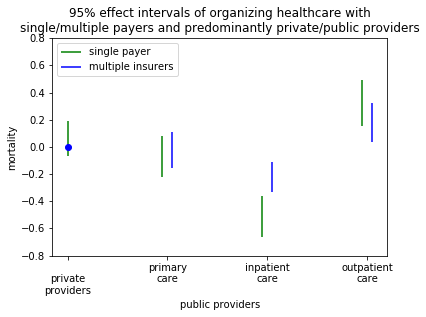
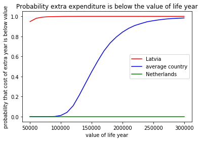
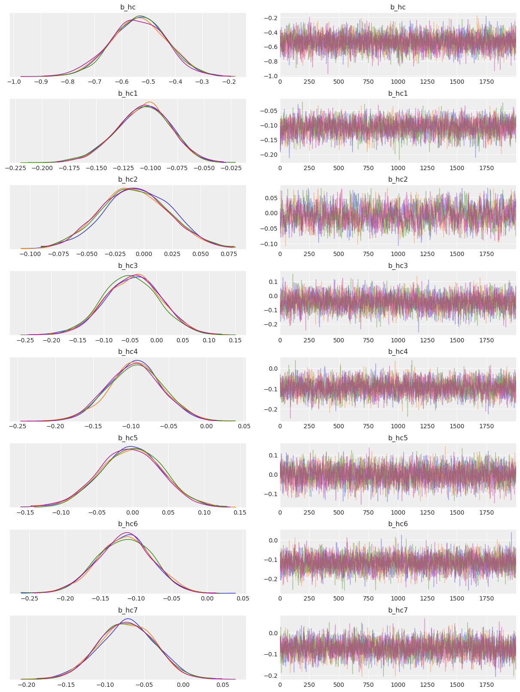
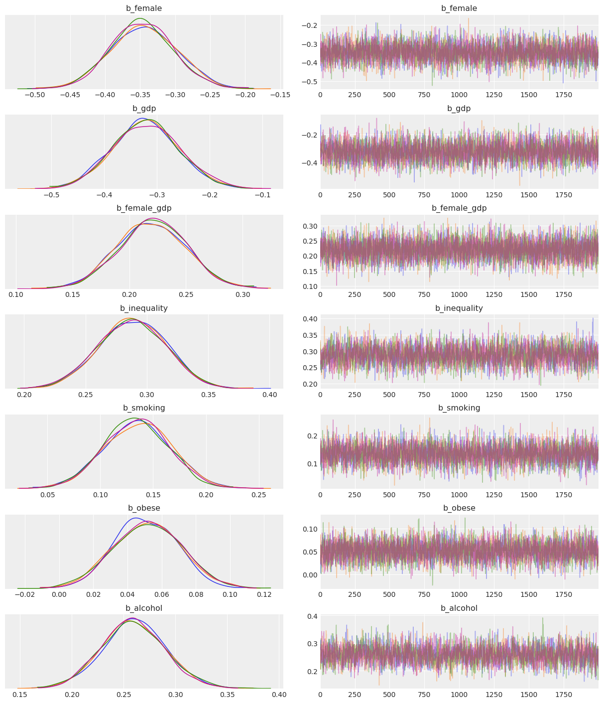
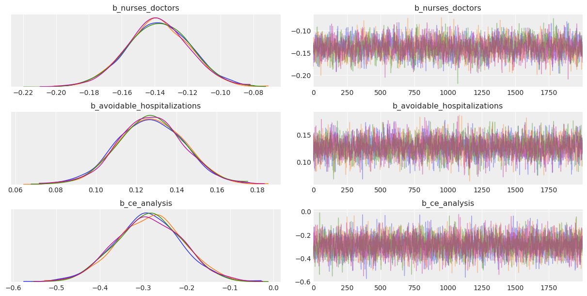
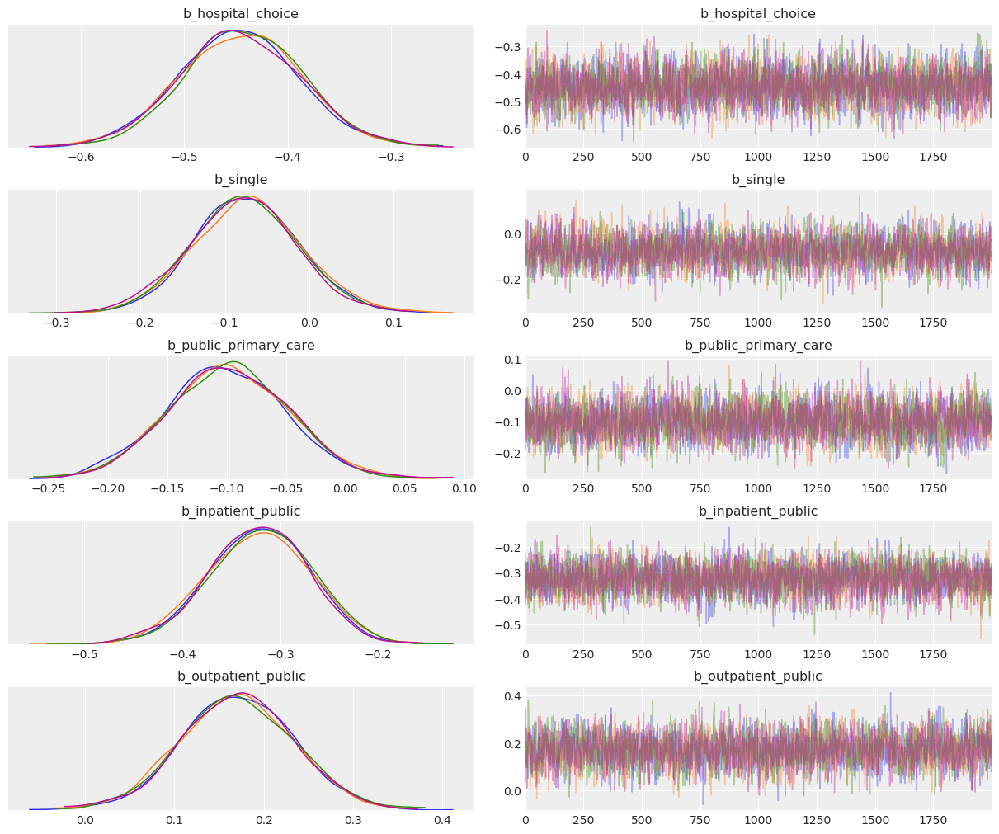
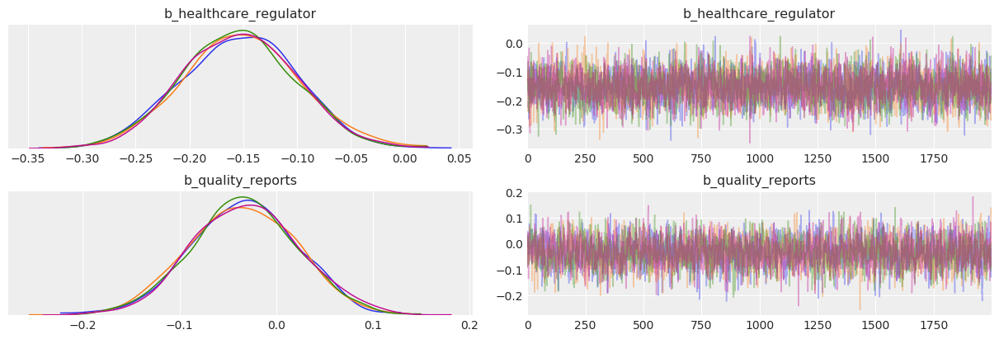
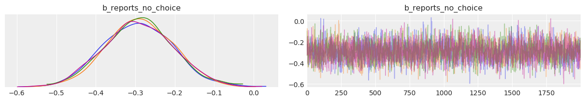

Comparing European healthcare systems
Table of Contents
We introduce a framework to analyze the effects on health system performance of health policy choices related to efficiency, quality and competition. We use recent data from Eurostat and OECD to verify the predictions. We find that –conditional on healthcare expenditure– the following efficiency measures lead to improved performance: increasing ratio of nurses over doctors and a well developed primary care sector. Introducing a healthcare regulator and publishing provider reports improve outcomes. Allowing patients to choose their provider leads to lower mortality. But in terms of insurer competition, single payer systems tend to do better than multiple insurers.
JEL codes: I11, I13, I18
Keywords: healthcare systems, insurer competition, single payer, hospital choice
How does this work? code
With this document, any reader can retrace the code which we used to produce the results, figures, tables, graphs, etc. for this paper.
This file is written in Emacs org mode which allows us to combine text and code. The file is exported to pdf (via latex) and to html for the web-version. The html export is not perfect (yet) as illustrated by the bibtex literature references and math environments like proposition, lemma, corollary etc. The web-version –which you are reading now– contains the sections tagged code which are left out of the pdf version of the paper. Here you can download the pdf version of the paper.
We use Python to program the model, Altair for interactive visualizations and PyMC3 for the Bayesian analysis. All these resources are open source and freely available. If you want to install Python, Anaconda is a good place to start.
There is a separate file which describes how we get the data from the OECD and Eurostat.
The repository itself can be found here.
1. Introduction
COVID-19 has shown that the damage caused by a health crisis is strongly affected by the performance of a country’s healthcare system OECD_2020. This paper compares the performance of a number of health system features related to competition, efficiency and quality using data on European countries from before COVID-19. Based on their prominence in [EU(2019)], its accompanying country reports and [OECD/European Union(2020)], we analyze the effects of policy choices like single payer vs. competing health insurers, care delivery via private or public providers, introducing a dedicated healthcare regulator, allowing patients to choose their own provider, the prominence of primary care in the health system and the employment of nurses vs. doctors. We introduce a theoretical model to capture the effects of these policy choices on health system performance. Then we verify whether these theoretical predictions are consistent with the correlations found in the macro data for European countries.
With the policy variables that we analyze, we use the term “healthcare system” in the narrow sense related to primary, inpatient and outpatient care. That is, we focus on the curative sector and do not discuss the quality of nursing homes, prevention campaigns (for disease or substance abuse) nor mental healthcare.
As motivated below, we use three different measures of mortality to quantify the performance of a healthcare system. We find the following effects. Conditioning on healthcare expenditure, efficiency related measures like increasing the ratio of nurses to doctors and improving primary care tend to improve healthcare performance. Allowing people to choose their provider and making provider quality reports public are associated with lower mortality; but these effects are not additive. In other words, provider choice and public provider reports are partial substitutes. For inpatient care there is a clear indication that the combination of a single payer with (predominantly) public providers goes hand-in-hand with reduced mortality.
The motivation for this analysis is as follows. First, the graying of the European population together with fast rising healthcare costs in the past decade makes it important that the healthcare sector is organized efficiently and produces high quality care. The corona crisis has further highlighted the importance of well organized healthcare.
Second, there are now consistent and fairly complete data available on healthcare policies and related variables for European countries. Moreover, there are in-depth country reports to interpret the data and the underlying institutional settings.1 OECD has gathered data on a number of health policies across countries and Eurostat provides data on mortality, income, income inequality etc.
Third, there are numerous studies on particular aspects of healthcare systems aimed at identifying the causal effect of a policy parameter on a particular outcome. Such papers tend to use individual level data and research designs include difference-in-differences, regression discontinuity and instrumental variables econometricevaluation. This is not the goal of the current paper. The idea here is more broad brush. Is there an effect of allowing cost effectiveness considerations into the admission of new treatments? Is there a role for (well organized) primary care? When does a single payer system perform better than a system with competing insurers? Because healthcare is such a big part of the economy, one would expect that if such policies have an effect, we can see this at the macro level, for instance in aggregate mortality outcomes.
Further, comparing healthcare systems used in different countries helps to understand the macro effects of key policy choices. Advantages of using our approach with country level data are the following. First, we can evaluate overall system performance; for instance, by considering interaction effects between policies. Second, although mortality is a crude measure of system performance, it does have the advantage of being widely available (even in different definitions, allowing for robustness analyses). And one would expect bad health policy choices to affect life expectancy in a country. In addition, with this data we find population wide effects of policies. That is, we do not need to extrapolate from the sample to the population average treatment effect. This approach is feasible now because comparable data across countries are available from Eurostat and OECD. A further advantage of using these data is that they are available to everyone. This makes our analysis reproducible which is not the case with proprietary individual level data. To illustrate, if a policy maker would like to adapt our analysis e.g. by adding a policy variable, this is easily done given that our code and data are available to everyone and thus can be changed.
There are disadvantages to our approach. First, it is not very precise. To illustrate, a policy change can have a meaningful impact on people’s health and well being but does not cause an observable change in macro mortality numbers. Second, our approach does not prove causality which could be established in a (quasi) experimental set-up. On the other hand, the policy variables analyzed here are actually important components of any healthcare system,2 but there may not be (quasi) experimental data with which their causal effect can be determined. To illustrate, a country either has a (dedicated) healthcare regulator or it does not. It is not possible to compare individuals in the country with and without such a regulator. Since the effects that we model below are seen by experts as first order effects, the correlations in the data can be seen as confirmation of their impact. Yet, causal interpretations should be done with care.
For two reasons we use a Bayesian model to summarize our cross country data. First, it allows us to quantify the remaining uncertainty of the posterior distribution. We want to be able to say things like: with 90% probability, the introduction of a separate healthcare regulator is associated with better system performance. Second, although the OECD and Eurostat have made great strides in publishing consistently gathered data across a number of countries, this data is not perfect. That is, the data is quite recent (no decades long time series) and there are missing observations. Dropping all records that are not complete would make the data set too small. A Bayesian model can deal with missing observations without imputing or interpolating numbers. Intuitively, the posterior draws a value for the missing variable from a distribution representing the remaining uncertainty around this variable. If we sample, say, 2000 values for the posterior, we get 2000 draws for missing values. In this way, the uncertainty surrounding the missing value is taken into account in the uncertainty of the posterior distribution of the estimated parameters.
Since the consistent –across a number of countries– healthcare data by Eurostat and the OECD is quite recent, we are not aware of papers that try to compare the performance of different healthcare systems in this way. Of course, there are papers analyzing elements of healthcare systems which we discuss below.
We split our independent variables in two subsets. The first consists of the policy variables that we are interested in which are related to competition, quality and efficiency. The second subset consists of the “usual suspects” when controlling for other effects. Think of GDP per head, income inequality, healtcare expenditure, lifestyle variables related to body mass index (BMI), alcohol and tobacco consumption.
For the latter variables we know that identifying the causal relations between these variables and health status (measured by mortality) is complicated. Does higher income cause better health or is it the case that a more healthy population is more productive and hence produces higher GDP per capita? See, for instance, [Cutler et al.(2011)Cutler, Lleras-Muney, and Vogl] for an overview of this discussion. Is healthcare expenditure caused by the health of the population or does it reduce mortality in the population? We will not disentangle these effects; we just control for these variables.
The policy variables we are interested in are the following. The ones related to efficiency are the use of nurses vs. physicians, cost effectiveness (CE) analysis when deciding on which treatments to cover by insurance and the development of primary care to coordinate and contain healthcare expenditure. Although [EU(2019)] and the accompanying country reports suggest that it is a good idea to increase the ratio of nurses to doctors, we are not aware of country studies showing that this improves the performance of a healthcare system. In our data this ratio varies between 1 and 5 in the countries we consider. Our analysis shows that for given healthcare expenditure, an increase in the ratio of nurses to physicians does reduce mortality. The literature on CE analysis focuses on how this analysis can be done in practice; see, for instance, [Drummond et al.(2005)Drummond, Sculpher, Torrance, O'Brien, and Stoddart] and [Gold et al.(1996)Gold, Siegel, Russell, and Weinstein]. But no evidence is provided that doing CE analysis actually improves the performance of the healthcare system. This is what we look at in this paper and the data suggest that –for given expenditure– CE analysis tends to increase life expectancy. The picture that emerges from papers on primary care is mixed. There is evidence that access to primary care improves health outcomes; see [Starfield et al.(2005)Starfield, Shi, and Macinko] and references therein. But [Aakvik and Holmas(2006)] do not find a clear relation between the number of general practitioners and mortality. Although gatekeeping is associated with lower expenditure per head, it is not clear whether gatekeeping causes lower expenditure or a country’s low expenditure induces it to introduce gatekeeping Forrest692. As explained below, we use avoidable hospitalizations to measure how well developed primary care is in a country. We find that –for given expenditure– better developed primary care reduces mortality.
The variables related to competition are whether a patient is free to choose her preferred provider, whether there is a single payer or a number of (competing) insurers and whether healthcare is mainly organized via public or private organizations. [Gaynor et al.(2015)Gaynor, Ho, and Town] review the literature on competition effects in healthcare markets. A number of studies find that more provider and more insurer competition lead to better outcomes. We also find that giving patients freedom to choose their hospital reduces mortality. The effects of insurer competition compared to a single payer are not so clear. A number of papers argue that single payer systems lead to better outcomes; see, for instance, [Bichay(2020)] and [Oberlander(2016)]. Arguments for a single payer system include a better bargaining position of the payer vis-a-vis providers and the absence of risk selection incentives. But insurer competition is also supposed to give incentives for insurers to contract high quality care at low prices. For given expenditure, we find that a single payer reduces mortality. This effect is strongest for countries where physicians in inpatient care are predominantly publicly employed.
The policy variables related to quality are whether provider quality reports are made public and whether a country has a regulator dedicated to healthcare. We are not aware of studies focusing on the effect of introducing a regulator dedicated to healthcare. Our data suggests that such a dedicated regulator tends to reduce mortality. Making provider quality transparent for patients seems like a good idea but it can lead to a strategic reaction by doctors and hospitals leading to worse outcomes dranoveReportCards2003. We find at the macro level that making reports public reduces mortality but less so if patients are free to choose their providers.
| Country | avoidable hospitalizations | nurses/doctor ratio |
|---|---|---|
| Denmark | 326.9 | 2.6259 |
| France | 144.55 | nan |
| Iceland | 200.48 | 4.29466 |
| Italy | 74.08 | 1.45551 |
| Latvia | 251.967 | 1.56129 |
| Lithuania | 291.567 | 1.83594 |
| Norway | 259.667 | 3.99844 |
| Poland | 246.46 | 2.51167 |
| Slovenia | 139.817 | 3.2136 |
| United Kingdom | 298.067 | 3.07327 |
Table 1 shows the ten countries in our data that implement the binary policy choices that our analysis suggests are optimal. They use CE analysis, allow patients to choose their providers, inpatient care is predominantly publicly provided, have a separate healthcare regulator and a single payer system. Two remaining policy variables are avoidable hospitalizations and the nurses/doctor ratio. The former should be low and the latter high to minimize mortality. Italy scores well on the avoidable hospitalizations, while Iceland and Norway feature high nurses/doctor ratios. This does not imply that these countries have the lowest mortality rates as these are also affected by income, healthcare expenditure and lifestyle choices. Further, a country may not have a single payer system, but such low avoidable hospitalizations that it has lower mortality than these ten countries. The table does suggest that it is possible to implement the optimal combinations in practice.
We use a Bayesian analysis as explained in [McElreath(2020)] and [Gelman et al.(2013)Gelman, Carlin, Stern, Dunson, Vehtari, and Rubin]. In terms of software we use Python, Altair for interactive graphs, and the pymc3 library developed by [Salvatier et al.(2016)Salvatier, Wiecki, and Fonnesbeck] for the Bayesian analysis. The code and data for this paper can be found in the following repository: https://github.com/janboone/European-Healthcare-Systems. Some figures below have an interactive version that can be accessed by clicking on the caption.
The next section provides the theoretical background for our analysis of healthcare system features and mortality. Then we describe the data sources and variables that we use for this analysis and introduce the model that we estimate. We discuss the results from the estimated model and the policy implications. We finish with robustness analyses.
2. Theory
The goal of this paper is to shed light on some major factors that (are supposed to) improve the functioning of a healthcare system. The choice of these variables is based on our interpretation of the literature and country reports. In addition, we need to be able to identify the variables in the data.
This leads to three types of variables for our analysis. First, we need a measure of success of the system. Second, there are variables we need to control for and third the health policy variables we are interested in.
There does not exist a simple measure summarizing how successful a healthcare system is. A measure one can think of is mortality. One goal of the healthcare system is to prevent people from dying prematurely. Of course, there are other healthcare goals like treating patients with respect, creating quality of life (not just a long life), caring for people that cannot be cured even if this does not lead to more life years. While acknowledging these shortcomings, we work with mortality as our measure of healthcare performance. In particular, in the main text we work with “treatable mortality” which, among other things, corrects for the age distribution in the population. We come back to the definition of treatable mortality in the data section.
From reading country health reports like [OECD/European Observatory on Health Systems and Policies(2019)] one can distill a number of factors that are important in determining a healthcare system’s success. We make the following –to some extent arbitrary– distinction between variables that we control for and policy variables that we are interested in determining the success of the system.
We control for income per head since people with higher incomes tend to live healthier in a number of ways socioeconomicstatus. We also control for income inequality: for given average income, higher inequality implies more people on low incomes which tend to live less healthy. In addition, we use the following direct measures on lifestyle: alcohol and tobacco consumption and the body mass index. Finally, we control for healthcare expenditures per head. In other words, we focus on “health bang for your buck”. Given the amount of money spent in a healthcare system, how can we maximize the health gain from this expenditure.
The policy variables that we are directly interested in are the efficiency of the system as measured by the relative number of nurses vs. doctors, the quality of primary care services and cost effectiveness analysis when deciding on insurance coverage of new treatments. Policy choices that directly affect quality include the presence of a healthcare regulator and whether provider quality reports are made public. Variables that affect the extent to which healthcare works as a market: whether patients have (some) choice of providers, whether primary, inpatient and outpatient care are publicly or privately organized and whether a country has a single payer system or a number of (competing) insurers.
2.1. Healthcare system model
In this section we propose a model that helps us think about these variables, their underlying relationships and effects on the success of the overall system. One benefit of conditioning our analysis on healthcare expenditure is that we will ignore a number of issues related to the health insurance market. Demand side cost sharing, moral hazard and adverse selection are important dimensions of a healthcare system. However, they affect health via access to insurance and hence healthcare expenditure. By conditioning on expenditure we “close” this causal path Causality2009 and do not need other health insurance variables.
2.1.1. income (inequality)
As mentioned, a major determinant of health is income, here measured as GDP per head. We do not expect an additional euro per head to reduce mortality; more that the order of magnitude has an effect. Hence, we start by considering the relation between mortality and GDP per head on a log-log scale as shown in Figure 1. We have separate mortality data for men and women and the figure shows the well known fact that women tend to have lower mortality than men. Further, this difference seems to be bigger the lower GDP per head is. As a side note: it is hard to find a color scheme that can clearly distinguish all countries by color. Clicking on the caption of this figure (and other figures below with country data points) takes you to the interactive graph online where hovering over a point shows the country as tooltip.
The figure suggests a linear approximation of the relation between log GDP per head and log (treatable) mortality across countries and years in our data set. If we believe that this relation holds both between and within countries, income inequality in a country tends to raise mortality. This can be seen as follows. Let \(M\) denote mortality and \(m=\ln(M)\) log mortality. Similarly, \(Y\) denotes GDP per head and \(y=\ln(Y)\). Then the relation between \(m\) and \(Y\) is of the form:
\begin{equation} \label{eq:2} m = \beta_0 + \beta_1 \ln(Y) \end{equation}with \(\beta_1 <0\). Hence, \(m\) is convex in \(Y\) and an increase in inequality (for given average \(Y\)) increases mortality:
\begin{equation} \label{eq:3} \beta_0 + \beta_1 \ln(\phi Y_1 + (1-\phi) Y_2) < \beta_0 + \beta_1 (\phi \ln(Y_1) + (1-\phi) \ln(Y_2)) \end{equation}for two income levels \(Y_1 \neq Y_2\) and \(\phi \in \langle 0,1 \rangle\) (Jensen’s inequality). In words, the gain in health due to a higher income is smaller than the health loss due to a lower income (for given average income). One reason for this is decreasing returns to health efforts/investments. First, money is spent on the most effective actions; as income increases further, money is spent on less effective steps as well. Think of efforts to improve one’s diet. The first step is to reduce fast food and heavily processed foods which tend to have a big effect. Further steps could include replacing cow’s milk with oat milk. Unless you suffer from lactose intolerance, this latter step will tend to have a lower impact than the first. As explained below, another effect is that income inequality –for given average income– tends to reduce providers’ investments in quality.
Based on this observation, we measure inequality in our data set as:
\begin{equation} \label{eq:19} \text{inequality} = \ln\left(\sum_{i=1}^5 \phi_i Y_i \right) - \sum_{i=1}^5 \phi_i \ln(Y_i) \end{equation}where the fraction of people in income category \(i\) denoted \(\phi_i = 0.2\) as we have data on income quintiles. The higher this expression, the more unequal the income distribution in a country is.
2.1.2. health
The way we model people’s health and mortality is as follows. People can be in either of two states: healthy (\(H\), fraction \(h\) of population) or low health status (\(L\), fraction \(l=1-h\)). The rate at which people flow from the \(H\) to the \(L\) state is denoted by \(\zeta\). This rate \(\zeta\) increases with lifestyle factors such as poverty (low average income and high income inequality), tobacco, alcohol consumption and high BMI. We think of people in the \(L\) state as being treated by the healtcare system.
The rate at which people flow back from the low to the high health state is \(\tau\) where \(\tau\) denotes the rate at which patients are cured by a provider. If they do not flow back to \(H\), there is a rate \(\delta > 0\) at which they die of treatable causes. Hence, only in the low health state can someone die of treatable causes in our set-up.3
We define the steady state as \(h\) such that the inflow equals the outflow in each state: \(\zeta h = \tau (1-h)\). That is, to simplify expressions, we do not count dead people here because we think of \(\delta\) as being small –order of magnitude 100 over 100,000 on average in our data. Then we have \(h =\tau/(\zeta+\tau)\). Hence, mortality rate (as fraction of healthy) equals \(M = \delta (1-h)/h = \delta \zeta/\tau\). Writing this in logs, we find the following approximation for log mortality:
\begin{equation} \label{eq:1} m = \ln(\delta) + \ln(\zeta) - \ln(\tau) \end{equation}where \(\ln(\delta)\) is a constant, \(\zeta\) is affected by lifestyle (smoking, diet and alcohol consumption), income and income inequality, treatment success \(\tau\) by expenditure \(E\) on health and efficiency measures like primary care, nurses to doctors ratio, quality policies etc. In other words, we make the choice here to say that the probability of death conditional on having low health (\(\delta\)) is the same across countries. The difference is that more successful countries have fewer people in the low health state and for a shorter time period; hence, lower mortality. This is a matter of presentation; it is fine to interpret some of the effects below as affecting \(\delta\) as well.
To determine the optimal choice of \(\zeta\), we view the agent as solving the following Bellman equations:
\begin{align} \label{eq:4} \rho V_h &= \max_{\zeta \geq 0} u_h(Y,\zeta) - \zeta \Delta V \\ \label{eq:4b} \rho V_l &= u_l(Y) + \tau^{e} \Delta V \end{align}where \(\rho\) denotes the discount factor, \(\Delta V = V_h - V_l\) the drop in expected discounted utility from high to low health state transition, \(\zeta>0\) denotes the (lack of) effort to stay healthy in the high health state and \(\tau^e\) the expected treatment success where the expectation is taken over different treatments, providers etc. Direct utility \(u_h,u_l\) is a function of income (consumption) in each health state and of effort in the high state, where utility in the high state is higher than in the low state, \(u_h(Y,\zeta) > u_l(Y)\). In the low state there is a rate \(\delta > 0\) at which an agent dies but –as mentioned– this probability is close to zero and we ignore it in the equations here to simplify expressions.
In principle, demand for treatment in the \(L\) state is affected by the price of treatment in terms of out-of-pocket payments. However, in our empirical analysis below, we control for health expenditure. Hence, equation \eqref{eq:4b} does not explicitly model the demand for treatment. The probability that a patient is cured is captured by \(\tau^e\) which depends, among other things, on healthcare expenditure without distinguishing between demand side rationing (e.g. through waiting lists and out-of-pocket payments) and supply side rationing (e.g. through budgets).
Low \(\zeta\) is achieved through a healthy lifestyle; it implies a small transition rate to the low health state. However, it comes at a utility loss: \(\partial u_h/ \partial \zeta > 0\); in words, a low transition rate \(\zeta\) reduces instantaneous utility \(u_h\). One can think here of the disutility of changing diet, the fact that healthy food options tend to be expensive, the cost of a gym membership, (some) people’s dislike of exercise. We further assume that a healthy lifestyle is a normal good: \(\partial^2 u_h/ \partial Y \partial \zeta \leq 0\). To ensure concavity of the optimization problem we assume \(\partial^2 u_h / \partial \zeta^2 <0\). Then the first order condition for \(\zeta\) can be written as
\begin{equation} \label{eq:5} \frac{\partial u_h}{\partial \zeta} = \Delta V \end{equation}The higher the loss of utility due to low health, the more people tend to invest to prevent this (by having low \(\zeta\)). The effect of \(Y\) on the optimal \(\zeta\) then equals
\begin{equation} \label{eq:6} \left(- \frac{\partial^2 u_h}{\partial \zeta^2}\right) \frac{d\zeta}{dY} = \frac{\partial^2 u_h}{\partial \zeta \partial Y} - \frac{\partial \Delta V}{\partial Y} \end{equation}A sufficient condition for \(d\zeta/dY \leq 0\) is that the loss from falling ill increases with income (\(\partial \Delta V/\partial Y \geq 0\); we derive this inequality below). In words, people with a higher income, choose lower \(\zeta\), that is a more healthy lifestyle. Further, government spending on prevention would tend to reduce \(\zeta\) as well.
In order to derive \(\partial \Delta V/ \partial Y\), we differentiate equations \eqref{eq:4} and \eqref{eq:4b} with respect to \(Y\) and use an envelop argument:
\begin{align} \label{eq:25} \rho \frac{dV_h}{dY} &= \frac{\partial u_h}{\partial Y} - \zeta \frac{d \Delta V}{d Y} \\ \label{eq:25b} \rho \frac{dV_l}{dY} &= \frac{\partial u_l}{\partial Y} + \tau^e \frac{d \Delta V}{d Y} \end{align}Subtracting these two equations, we find
\begin{equation} \label{eq:26} \frac{d \Delta V}{dY} = \frac{\frac{\partial u_h}{\partial Y} - \frac{\partial u_l}{\partial Y}}{\rho + \zeta + \tau^e} > 0 \end{equation}if we assume that \(\partial u_h/\partial Y > \partial u_l /\partial Y\); that is, the marginal utility of income (consumption) is higher in the healthy state than in the low health state. This seems a reasonable assumption as lack of health can reduce the set of consumption possibilities; e.g. it may be harder or not possible at all to travel, go skiing etc. when one is not fully fit. As the consumption possibility set is larger in the \(H\) state, we expect \(\partial u/\partial Y\) to be higher in the healthy state. Hence the marginal utility of income is expected to be lower in the low health state and hence \(\Delta V\) increases with an individual’s income.4
To illustrate that our framework can capture the effects of income inequality on mortality, the following lemma simplifies the model by specifying particular functional forms for \(u_h, u_l\) –which are consistent with the assumptions made above– and derives a sufficient condition for \(d^2 \Delta V/dY^2 \leq 0\). Then we show how this affects the curvature of \(\zeta\) with respect to \(Y\) and thereby the effect of income inequality on \(\zeta\).
Assume the following functional forms: \(u_h(Y,\zeta)=Y^{\xi} + \eta(\zeta), u_l(Y)=\kappa Y^{\xi}\) with \(\kappa, \xi \in \langle 0,1 \rangle\) and \(\eta(\zeta), \eta'(\zeta) > 0, \eta''(\zeta) < 0, \eta'''(\zeta) \leq 0\). A sufficient condition for \(d^2 \Delta V/dY^2 \leq 0\) is: \begin{equation} \label{eq:24} \xi \leq 1 + \frac{d \ln(\rho+\zeta+\tau^e)}{d \ln(Y)} \end{equation}
Equations \eqref{eq:4} and \eqref{eq:4b} imply that \(\Delta V\) equals the expected discounted difference between \(u_h\) and \(u_l\): \(\Delta V = (u_h-u_l)/(\rho+\zeta+\tau^e)\). The assumption is that this “expected discount rate” \(\rho+\zeta+\tau^e\) does not fall too quickly with income \(Y\). As shown below, \(\tau^e\) increases with \(Y\), hence the assumption is that \(\zeta\) does not fall too quickly with \(Y\).
To find the curvature of \(\zeta\) with respect to \(Y\), we start from equation \eqref{eq:6} and differentiate this expression with respect to \(Y\), using the assumptions in the lemma:
\begin{equation} \label{eq:33} -\frac{\partial^3 u_h}{\partial \zeta^3} \frac{d\zeta}{dY} + \left(-\frac{\partial^2 u_h}{\partial \zeta^2} \right) \frac{d^2 \zeta}{dY^2} = - \frac{\partial^2 \Delta V}{\partial Y^2} \end{equation}or equivalently,
\begin{equation} \label{eq:34} - \eta''(\zeta) \frac{d^2 \zeta}{dY^2} = \eta'''(\zeta) \frac{d\zeta}{dY} - \frac{\partial^2 \Delta V}{\partial Y^2} \end{equation}Because \(\eta''(\zeta) <0, \eta'''(\zeta) \leq 0, d^2 \Delta V/dY^2 \leq 0\) and
\begin{equation} \label{eq:40} d\zeta/dY < 0 \end{equation}as derived with equation \eqref{eq:6}, we find that
\begin{equation} \label{eq:30} d^2 \zeta/dY^2 >0 \end{equation}In words, \(\zeta\) is decreasing and convex in \(Y\). By Jensen’s inequality, this implies that as income inequality increases –for given average income per head \(Y\) – the average \(\zeta\) increases. Hence, income inequality leads to a higher aggregate flow into the low health state. This is one micro foundation for the effect in equation \eqref{eq:3} that income inequality leads to higher mortality.
2.1.3. competition
To see how the probability of being cured, \(\tau\), varies with healthcare expenditure, the use of nurses, primary care etc., we model hospital competition in the following way. Consider two hospitals –denoted 1,2. To simplify the exposition, we assume that the hospitals are symmetric, meaning: (i) if they offer the same quality, patients are distributed 50:50 among the hospitals and (ii) if patients are not free to choose hospitals, they are also distributed 50:50. Think of two hospitals in two regions with similar population characteristics in the two regions. If there is no choice, patients can only visit the hospital in the region where they live and the assumption is that the expected number of patients and their ailments is the same across regions. We denote the probability that patients are aware of quality differences between hospitals and can act upon this knowledge by \(\theta \in [0,1]\). We denote the probability of treatment success (i.e. cure and move back to state \(H\)) for hospital \(i\) by \(\tau_i\). Then provider 1’s market share is given by
\begin{equation} \label{eq:8} x_1 = \textstyle{1\over 2} + \theta \Delta V (\tau_1 - \tau_2) \end{equation}and \(x_2 = 1- x_1\). In words, once a patient is aware of the quality difference between hospitals and is allowed to act upon this difference, the probability that she switches to provider 1 increases in the utility difference between the hospitals. Given equation \eqref{eq:4b}, the utility of visiting hospital \(i\) is given by \(\tau_i \Delta V\) and hence the utility difference is given by: \(\Delta V (\tau_1-\tau_2)\). Strictly speaking \(x_1\) is between 0 and 1 and when we do marginal comparative static analysis below, we assume this to be the case. That is, we do not clutter notation by explicitly considering corner solutions. This set-up boils down to a Hotelling model Tirole.
Instead of being treated by a specialist in a hospital, some patients can be cured either by a nurse or in primary care. We denote the fraction of patients treated by the former by \(\psi_n\) and by the latter \(\psi_{pc}\). Clearly not all patients can be cured by a nurse or primary care. For the countries in our data set there is no reason to assume that either of these alternatives has been used to such an extent that this actually increases mortality. However, there is ample evidence that these alternatives are not used to the optimal extent in many countries (see the country reports accompanying [EU(2019)]). We will not model the exact utility of treatment by nurses or primary care compared to specialists in hospital. Although modeling this would allow us to determine the optimal mix of specialist care, nurses and primary care, we do not expect to be able to identify such an optimal mix in the data. Hence, we assume that over the relevant range a small increase in \(\psi_n\) and \(\psi_{pc}\) has no direct effect on mortality.
We do assume that the constant marginal cost of treatment by a specialist \(c_s\) exceeds the costs of nurses, \(c_n\), and primary care, \(c_{pc}\). Below we endogenize the fee-for-service \(R\) that a specialist receives for treating a patient. To simplify the exposition, we assume that nurses and primary care practitioners are simply reimbursed their costs \(c_n, c_{pc}\), resp. This can easily be generalized but at the expense of complicating notation. Also, in many countries it is actually the case that specialists receive considerable rents, while this is not the case (to the same extent) for nurses nor for practitioners in primary care. Given that we condition on expenditure in the empirical analysis below and we assume (for simplicity) that the total budget is spent on these three alternatives for treatment:
\begin{equation} \label{eq:9} \frac{\zeta}{\zeta + \tau^e}(\psi_n c_n + \psi_{pc} c_{pc} + (1-\psi_n-\psi_{pc}) R) = H \end{equation}where \(\zeta/(\zeta+\tau^e)\) denotes the fraction of people in the low health state who are under treatment by either a nurse, primary care physician or specialist. Taking the derivative with respect to \(\psi_i\) in equation \eqref{eq:9} it follows that
\begin{equation} \label{eq:11} \frac{dR}{d\psi_i} = \frac{R-c_i}{1-\psi_n - \psi_{pc}} > 0 \end{equation}for \(i=n,pc\) assuming that \(R \geq c_s>c_n,c_{pc}\): the fee-for-service covers the marginal treatment costs for a specialists and these costs are higher than \(c_n\) and \(c_{pc}\).
In words, having more nurses and primary care practitioners –for given \(H\) expenditure– saves money that can be spent on other health improving activities. To keep the model parsimonious, the other activity is the fee-for-service \(R\) for hospital care. As more care is transferred from the specialist to nurses and primary care, the specialists do fewer treatments but can be paid more for these. This gives an incentive to raise quality, as we show below.
2.1.4. treatment quality
We write the objective function of hospital \(j \neq k\) as
\begin{equation} \label{eq:12} \max_{\tau_j \geq \underline \tau} \frac{\zeta}{\zeta + \tau^e}(1-\psi_n-\psi_{pc})\left( \textstyle{1\over 2} + \theta \Delta V (\tau_j - \tau_k) \right)(R-c_s - \gamma (\tau_j)) \end{equation}where \(\underline \tau \geq 0\) denotes some minimum quality standard imposed by the government, \(\zeta/(\zeta+\tau^e)\) the fraction of people being treated, \((1-\psi_n - \psi_{pc})\) denotes the probability that the patient is treated in hospital and \((1/2 + \theta \Delta (\tau_j - \tau_k))\) denotes hospital \(j\)’s market share. Further, hospitals can invest effort at cost \(\gamma( \tau_j)\) to increase the probability to cure a patient, \(\tau_j\); with effort costs increasing and convex, \(\gamma'(\tau),\gamma''(\tau)>0\) and \(\gamma'''(\tau) \geq 0\). We assume that in equilibrium hospitals earn enough to cover their costs: \(R - c_s - \gamma(\tau) >0\).
It is routine to verify that the first order condition for \(\tau_j\) can be written as
\begin{equation} \label{eq:13} \theta \Delta V (R-c_s-\gamma(\tau_j))- \textstyle{1\over 2} \gamma'(\tau_{j})=0 \end{equation}in symmetric equilibrium with \(\tau_j = \tau_k\). We assume that for an individual hospital \(\partial \tau^e/ \partial \tau_j =0\); that is, an individual hospital overlooks the effect of quality \(\tau\) on the total number of people in the low health state. In other words, the effect of a hospital on national health outcomes is negligible.
Then we find the intuitive comparative static that an increase in \(R\) increases quality:
\begin{equation} \label{eq:20} \frac{d\tau}{dR} = \frac{\theta \Delta V}{ \textstyle{1\over 2} \gamma''(\tau)+\theta \Delta V \gamma'(\tau) } > 0 \end{equation}By increasing the fee-for-service it becomes more attractive for a provider to capture an additional patient; this gives the incentive to increase treatment quality.
2.1.5. expenditure
Increasing the healthcare budget increases the probability of being cured:
\begin{equation} \label{eq:16} \frac{d\tau}{dH} = \frac{d\tau}{dR} \frac{dR}{dH} > 0 \end{equation}where \(dR/dH > 0\) follows from differentiating \eqref{eq:9}. By making more money available for healthcare, people are more likely to be cured and flow back to the high health state. With a higher budget it becomes more profitable for hospitals to treat patients and hence they invest more in quality to attract patients to their hospitals (and not a competing provider).
2.1.6. provider choice
Allowing and further facilitating patients to choose their own provider, makes it more likely that a patient chooses the best provider instead of the closest one. This increases provider competition (\(\theta\)) and thus increases the probability that a patient is cured:
\begin{equation} \label{eq:14} \frac{d\tau}{d\theta} = \frac{\Delta V (R-c_s-\gamma(\tau))}{ \textstyle{1\over 2} \gamma''(\tau)+\theta \Delta V \gamma'(\tau) } > 0 \end{equation}Hence, we expect provider choice to improve the performance of the healthcare system: as hospital choice is more based on quality, hospitals have a bigger incentive to improve quality in order to attract patients.
Another way to make providers pay more attention to quality differences between them (i.e. increase \(\theta\)) is to make provider quality reports public. This may have to do with career concerns of hospital managers and/or physicians who do not want to work at the lowest quality hospital in the region; both effects work toward increasing quality.
Moreover, having both provider choice and public quality reports could be complementary policies: reports help patients to find the best hospitals. Actually, the last effect we do not find in the data. The effect of making quality reports public is bigger when there is restricted provider choice than with free provider choice. In the model we can capture this as follows.
Treatment quality is concave in \(\theta\): \begin{equation} \label{eq:21} \frac{d^2\tau}{d\theta^2} < 0 \end{equation}
Since the second derivative of \(\tau\) with respect to \(\theta\) is negative, the analysis suggests that increasing \(\theta\) has a particular big effect on quality when \(\theta\) is low to start with. In this sense, the model expects that making quality reports public has a big effect when provider choice is restricted (low \(\theta\)) and a smaller impact on treatment quality when provider choice is free (high \(\theta\) to start with).
[Dranove et al.(2003)Dranove, Kessler, McClellan, and Satterthwaite] provide another rationale why the positive effects of making quality reports public are limited when there is provider choice: risk selection by providers. Physicians try to avoid treating high risk patients as it could negatively affect their (public) score card. This gaming of the system can also result in lower performance outcomes for a country as a whole as high risk patients are transferred from one hospital to the next.
2.1.7. effect of income on treatment quality
We derive the effect of income \(Y\) on the quality of treatment \(\tau\) from equation \eqref{eq:13}:
\begin{equation} \label{eq:29} \frac{d\tau_j}{dY} = \frac{\theta (R-c_s-\gamma(\tau_j))}{\theta \Delta V \gamma'(\tau_j) + \textstyle{1\over 2} \gamma''(\tau_j) } \frac{d\Delta V}{dY} > 0 \end{equation}because of \eqref{eq:26}. As income per head increases, the quality differences between hospitals have a bigger utility effect and hence patients choose their provider more carefully. This raises hospitals’ incentives to invest in quality. For given healthcare expenditure, richer countries (higher GDP per capita) have more patients that are sensitive to provider quality. This creates higher incentives for hospitals to invest in quality thereby improving the performance of the healthcare system.
The following corollary shows that \(\tau_j\) is concave in income per head \(Y\).
We find that \begin{equation} \label{eq:23} \frac{d^2 \tau_j}{dY^2} < 0 \end{equation}
The significance of this result is the following. If a provider faces a population of agents with differing incomes, we need to integrate over this population to determine the aggregate incentive for hospitals to invest in quality. If quality \(\tau_j\) is concave in income this implies that quality is higher –for given average income– if the variance in income is lower (Jensen’s inequality for a concave function). This gives another micro foundation for the observation in equation \eqref{eq:3} that mortality increases with income inequality.
2.1.8. regulator
Another way to stimulate quality investments is to introduce a healthcare regulator which sets and enforces minimum quality standards \(\underline \tau\). The idea is that a dedicated healthcare regulator makes more work of treatment quality than a competition authority (general regulator) or the ministry of health would. We just assume that a healthcare regulator is more effective in imposing minimum standards without presenting a contract theory framework to derive this. To illustrate, a specialized regulator is more focused on healthcare quality than a (generic) competition authority.
If these standards are binding, imposing them leads to a direct increase in treatment quality. But there can also be an indirect effect because quality investments are strategic complements. Writing the first order condition for \(\tau_j\) without imposing a symmetric equilibrium, we see that reaction functions are upward sloping, \(d \tau_j/d \tau_k > 0\):
\begin{equation} \label{eq:28} \frac{d\tau_j}{d\tau_k} = \frac{\theta \Delta V \gamma'(\tau_j)}{2\theta\Delta V \gamma'(\tau_j) + \textstyle{1\over 2} \gamma''(\tau_j)} > 0 \end{equation}evaluated at the symmetric equilibrium \(\tau_j=\tau_k, k \neq j\). Hence, if new standards push up \(\tau_k\), these will tend to increase \(\tau_j\) which further increases \(\tau_k\) etc. Hence, there can be a multiplier effect leading to a higher equilibrium quality increase than the initial increase in the standard.
2.1.9. nurses and primary care
As stated by [OECD/European Union(2020)]: “Strengthening primary care has been identified as an effective policy tool to improve care coordination and health outcomes and reduce wasteful spending… However, in many EU and OECD countries, primary care has not yet fully realised this potential”. Similarly, in the same report: “advanced practice nurses can improve access to services and reduce waiting times, while delivering the same quality of care as doctors for a range of patients”. Hence, both primary care and the employment of nurses instead of doctors have the potential to save money which can –for given expenditure– be used to improve healthcare and reduce mortality.
As shown in Figure 2, there is quite some variation in the nurses/doctor ratio among the countries in our data set. In some countries this ratio is close to 1 (lower line in the figure) while in others it almost equals 5 (top line). Note that we only include this ratio in our regression, not the number of nurses and doctors. The reason is that we condition on healthcare expenditure which captures level effects. Hence we are interested in the question: for given expenditure, does mortality fall if five times more nurses than doctors are employed?
Increasing the use of primary care and nurses, increases the probability that a patient is cured in hospital:
\begin{equation} \label{eq:15} \frac{d\tau_j}{d \psi_i} = \frac{d\tau_j}{dR} \frac{dR}{d \psi_i} > 0, i = n, pc \end{equation}because of equations \eqref{eq:11} and \eqref{eq:20}. Using healthcare resources more efficiently, creates a bigger remaining budget for healthcare (the analysis is conditional on expenditure) and hence the same mechanisms play a role as in equation \eqref{eq:16}. More money available leads to less rationing and more investments in quality. In a similar vein, cost-effectiveness analysis also helps to save resources and hence increases the remaining budget that can be spent on improving care. In this way, we expect that cost effectiveness analysis increases the probability that a patient is cured and thus reduces mortality.
2.1.10. single payer vs. competing insurers
Another important policy choice is whether there is a single payer in a country or competing insurers. There are a number of pros and cons of a single payer compared to a system with competing insurers; see, for instance, [Oberlander(2016)] and [Bichay(2020)] and references therein. It is beyond the scope of this paper to review/model each of these. We introduce a simple model capturing the interaction between the insurer and provider to illustrate the trade offs.
Let \(\nu(\tau)\) denote the value for the insurer of a provider with quality \(\tau\). The idea is that contracting a hospital with higher quality into the insurer’s network allows it to charge a higher premium: \(\nu'(\tau) > 0\). We write the insurer’s optimization problem as follows.
\begin{equation} \label{eq:36a} \max_{R_{ij},t_{ij}} \nu(\tau_j) - \frac{\zeta}{\zeta+\tau^e}(1-\psi_n-\psi_{pc}) (\textstyle{1\over 2}+\theta\Delta V(\tau_j-\tau_k) )R_{ij} - t_{ij} \end{equation}where the insurer takes into account that offering a higher fee-for-service \(R_{ij}\) leads to higher quality; see equation \eqref{eq:20}. Next to the fee-for-service \(R_{ij}\), insurer \(i\) pays provider \(j\) a capitation fee \(t_{ij}\) which is independent from the number of treatments. The number of treatments depends on the total number of people in the low health state \(\zeta/(\zeta+\tau^e)\) who are not treated by nurses or primary care \((1-\psi_n-\psi_{pc})\) and who choose provider \(j\) instead of its competitor \(k \neq j\).
Many countries work with healthcare budgets which we denoted \(H\) above. Let \(H_i\) denote the budget that insurer \(i\) can spend on hospital care. We do not model how the overall budget \(H\) is allocated among different healthcare categories and insurers as this is not directly related to the analysis here. We assume that the overall budget (summed over insurers) is the same for a single payer and for competing insurers. Insurer \(i\)’s budget constraint for bargaining with \(j\) can now be written as:
\begin{equation} \label{eq:35} \sum_{j \in J} \frac{\zeta}{\zeta+\tau^e}(1-\psi_n-\psi_{pc}) (\textstyle{1\over 2}+\theta\Delta V(\tau_j-\tau_k) )R_{ij} + t_{ij} \leq H_i \end{equation}where \(J\) denotes the set of all hospitals. The Lagrange multiplier on this constraint is denoted \(\mu\).
The insurer makes a take-it-or-leave-it offer to the provider taking into account the outside options that the provider has. We write the (individual rationality) constraint for provider \(j\) to accept insurer \(i\)’s offer as follows:
\begin{equation} \label{eq:7} \frac{\zeta}{\zeta+\tau^e}(1-\psi_n-\psi_{pc})( \textstyle{1\over 2} + \theta \Delta V (\tau_j - \tau_k))(R_{ij}-c_s-\gamma(\tau_j) ) + t_{ij} \geq \omega_{-i} \end{equation}The outside option \(\omega_{-i}\) equals the profit that \(j\) will make if it is not part of \(i\)’s network. If insurer \(i\)’s contract offers less than this in expected profits, hospital \(j\) rejects the offer. Higher values of \(\omega_{-i}\) capture the idea that the provider has more bargaining power through a better outside option. We assume that this constraint is binding and use it to solve for \(t_{ij}\).
Maximizing equation \eqref{eq:36a} subject to the budget constraint \eqref{eq:35}, we can write the first order condition for \(R_{ij}\) as follows:
\begin{equation} \label{eq:10} \left( \nu'(\tau_j) - (1+\mu) \frac{\zeta}{\zeta+\tau^e}(1-\psi_n-\psi_{pc}) ( (c_s+\gamma(\tau_j)) \theta \Delta V + \textstyle{1\over 2} \gamma'(\tau_j) ) \right) \frac{d\tau_j}{dR_{ij}} = 0 \end{equation}or equivalently
\begin{equation} \label{eq:37} \frac{\nu'(\tau_j)}{1+\mu} - \textstyle{1\over 2} \gamma'(\tau_j) \frac{\zeta}{\zeta+\tau^e}(1-\psi_n-\psi_{pc}) = (c_s+\gamma(\tau_j)) \frac{\zeta}{\zeta+\tau^e} (1-\psi_n -\psi_{pc})\theta \Delta V \end{equation}At the optimum, the marginal benefit of increasing \(\tau_j\) equals the marginal cost for the insurer. The marginal cost affects the objective directly and via the impact on the budget; hence the \(1+\mu\) term. Increasing \(\tau_j\), increases the cost of providing quality by \(\gamma'(\tau_j)\) times the number of patients in equilibrium plus the effect that increasing \(\tau_j\) –for given \(\tau_k\) – increases \(j\)’s market share and hence its costs; see the right hand side of \eqref{eq:37}. Depending on the market setting in which insurers and providers operate, the latter effect may or may not be present.
To illustrate, the market share effect disappears if all insurers commit to symmetric public offers to all providers. In that case, all providers have the same quality (increase) and \(\theta \Delta V (\tau_j - \tau_k) \equiv 0\) for all providers: the right hand side of \eqref{eq:37} equals zero. However, if insurers have networks with subsets of providers, insurer \(i\) may not have a contract with provider \(k\). In Nash equilibrium –where the action of others is taken as given– an increase in \(\tau_j\) leads to an expected increase in \(j\)’s market share and hence costs. Further, in the insurer-hospital setting it is likely that (secret) bilateral negotiations between an insurer and hospital are possible. Hence, even if insurer \(i\) contracts with both providers \(j\) and \(k\), \(j\) cannot be sure that an increase in \(\tau_j\) will be accompanied by an increase in \(\tau_k\) and wants to be compensated for the expected increase in market share. See [Hart and Tirole(1990)] for an early analysis of private contracts and [Boone(2019)] for an application of private contracts in the healthcare context.
With a single payer, there are a number of differences compared to the case with competing insurers. First, an advantage that is often mentioned is that a single payer has more bargaining power vis-a-vis a hospital than one insurer out of many has. This can be captured in our model by saying that a hospital’s outside option \(\omega_{-i}\) is lower with a single payer. Intuitively, with competing insurers, if provider \(j\) has no contract with one insurer, \(j\) can still contract with the other insurers. This implies that \(j\)’s outside option is relatively good. But with a single payer, if \(j\) has no contract with this insurer, \(j\) is not covered by (basic) insurance and becomes less attractive to patients. This reduces \(\omega_{-i}\) a lot. In terms of the insurer’s first order condition, lower \(\omega_{-i}\) relaxes the insurer’s budget constraint which reduces the shadow price \(\mu\). This translates into higher quality \(\tau_j\). This bargaining effect is one mechanism through which a single payer can lead to higher treatment quality than multiple insurers.
Second, a single payer can commit to the same incentives and quality level for all providers. Hence, the market share effect (term on the right hand side of equation \eqref{eq:37}) disappears. This reduces the marginal costs of \(\tau\) and tends to increase quality.
Finally, the equilibrium quality level \(\tau^e\) in equation \eqref{eq:36} is a macro variable; the average quality across all providers. For an individual insurer and individual hospital (among many insurers, hospitals resp.), \(\tau^e\) is taken as given. Its individual effect on this variable is so small, it can be ignored.5 However, for a single payer this is not the case. The single payer understands that increasing quality \(\tau\) for all providers, reduces the fraction of the population in the low health state that seeks treatment. Hence, increasing \(\tau\) has a cost saving effect by making the population healthier. Writing the first order condition for \(\tau\) for the single payer as follows, reveals this effect:
\begin{equation} \label{eq:37SP} \frac{\nu'(\tau)}{1+\mu} - \textstyle{1\over 2} \gamma'(\tau) \frac{\zeta}{\zeta+\tau}(1-\psi_n-\pi_{pc}) = - \textstyle{1\over 2}(c_s+\gamma( \tau)) \frac{\zeta}{(\zeta+\tau)^2} (1-\psi_n -\psi_{pc}) \end{equation}Hence, we have three advantages of a single payer vs. multiple insurers which all tend to increase quality and hence reduce mortality. First, the single payer has relatively more bargaining power vis-a-vis providers which reduces \(\mu\) compared to multiple insurers. Second, the single payer takes into account that higher treatment quality leads to a healthier population thereby reducing \(\zeta/(\zeta+\tau)\): the right hand side of \eqref{eq:37SP} is negative. Third, a situation with multiple insurers suggests to a hospital that an increase in \(\tau_j\) results in a higher market share and hence higher costs; the right hand side of \eqref{eq:37} is positive.
However, there can also be disadvantages of a single payer. The reason that a number of countries have introduced insurer competition is that this forces insurers to be more efficient and more responsive to customers. To save on notation, we will not model these effects explicitly;6 but there are reasons to take a balanced view on the advantages of a single payer system. If costs are higher for the single payer, this exhausts the budget which tends to increase \(\mu\) and thus reduces \(\tau\). In the next section we show that the advantages of a single payer system become (substantially) bigger if we allow for public instead of private (profit maximizing) providers.
Summarizing, the model suggests that there are three effects why a single payer system can outperform a system with competing insurers. On the other hand, the disciplining effect of competition on efficiency and customer focus can lead to better outcomes with multiple insurers. In this sense, in general there is no reason to expect that in the data one system will obviously outperform the other.
2.1.11. public vs private providers
Now we add to the analysis of single payer vs multiple insurers the interaction with providers that are either private or public. It is not straightforward to characterize the objective functions of public and private providers. We follow recent literature –see for instance [Brekke et al.(2018)Brekke, Canta, Siciliani, and Straume]– and assume that private providers are pure profit maximizers and public providers give some weight (\(\alpha > 0\)) to the welfare of patients.7 This parametrization is simple and helps to illustrate the effect we are interested in.
The analysis in the previous section applies to the case with private providers (\(\alpha=0\)). With public providers we adjust the provider’s objective function so that the individual rationality constraint for a provider in \eqref{eq:7} becomes:
\begin{equation} \label{eq:7a} \frac{\zeta}{\zeta+\tau^e}(1-\psi_n-\psi_{pc})( \textstyle{1\over 2} + \theta \Delta V (\tau_j - \tau_k))(R_{ij}-c_s(\alpha)-\gamma(\tau_j) ) + t_{ij} + \alpha \nu(\tau) \geq \omega_{-i} \end{equation}where we allow for \(c_s'(\alpha) \geq 0\): public providers value patient utility/treatment quality for its own sake \(\alpha>0\) (not just because it generates profits), perhaps at the expense of efficiency: the cost per treatment \(c_s\) can increase with \(\alpha\). The first order condition in case of multiple insurers becomes:
\begin{equation} \label{eq:37public} \frac{\nu'(\tau_j)}{1+\mu} - \textstyle{1\over 2} \gamma'(\tau_j) \frac{\zeta}{\zeta+\tau^e}(1-\psi_n-\psi_{pc}) + \alpha \nu'(\tau_j) = (c_s(\alpha)+\gamma(\tau_j)) \frac{\zeta}{\zeta+\tau^e} (1-\psi_n -\psi_{pc})\theta \Delta V \end{equation}and for the single payer:
\begin{equation} \label{eq:37SPpublic} \frac{\nu'(\tau)}{1+\mu} - \textstyle{1\over 2} \gamma'(\tau) \frac{\zeta}{\zeta+\tau}(1-\psi_n-\psi_{pc}) + \alpha \nu'(\tau) = - \textstyle{1\over 2}(c_s(\alpha)+\gamma( \tau)) \frac{\zeta}{(\zeta+\tau)^2} (1-\psi_n -\psi_{pc}) \end{equation}We first consider the effect of public (\(\alpha>0\)) vs private (\(\alpha=0\)) providers for the case with multiple insurers –equation \eqref{eq:37public}. As \(\alpha\) increases, providers derive value from the treatment quality that they offer: \(\alpha \nu(\tau)\) in equation \eqref{eq:7a}. This relaxes their individual rationality constraint and allows the insurer –for given quality– to reduce the transfer and hence lowers \(\mu\). Lower \(\mu\) leads to higher quality. On the other hand, an increase in \(c_s\) as \(\alpha\) increases, makes this constraint more binding thereby increasing \(\mu\). Further, higher \(c_s\) directly increases the insurer’s marginal cost on the right hand side of equation \eqref{eq:37public}. The latter effect is small if the market is not (very) competitive (low \(\theta\)).
Hence, with multiple insurers, public providers tend to raise quality and reduce mortality if the market is not competitive (low \(\theta\)). If the market is competitive and the effect of \(\alpha\) on \(c_s\) and \(\mu\) is big, the effect may well be the opposite: higher mortality with public than private providers.
The effect of \(\alpha\) in case of a single payer can be seen in \eqref{eq:37SPpublic}. Also here there is the effect of \(\alpha\) on the provider’s individual rationality constraint: on the one hand \(\alpha \nu(\tau)\) and on the other the effect on \(c_s(\alpha)\) and \(\mu\). But in contrast to the previous case, \(c_s(\alpha)\) on the right hand side of \eqref{eq:37SPpublic} actually reduces the marginal cost of \(\tau\) for the insurer. Intuitively, the higher \(c_s\), the bigger the incentive for the single payer to keep the fraction of patients \(\zeta/(\zeta+\tau)\) low. The latter effect is big, if the effect of treatment quality on population health and ultimately mortality is high. If the latter effect is small, higher \(\alpha\) can raise \(\mu\) and lead to lower quality if the \(\mu\) effect dominates the \(\alpha \nu'(\tau)\) effect.
This interaction between public-private providers and multiple insurers-single payer is theoretically subtle. Hence, we will only consider this in an extension of the baseline model. The conditions under which public providers are likely to improve system performance (low competition intensity in case of multiple insurers; big effect of treatments (quality) on population health and mortality) are likely to be satisfied with inpatient care. To illustrate, outpatient care clinics –where patients do not stay overnight– are easier to set up and hence these markets tend to be more competitive than inpatient care where entry is more expensive and therefore limited. Further, outpatient care tends to focus on relatively simple procedures (like cataract operations and (rapid-recovery) hip replacement) which have less of an effect on population health and mortality. Although the value of such operations can be high for patients, the term on the right side of equation \eqref{eq:37SPpublic} tends to be small for such treatments. In words, the effect on mortality of such procedures is limited. Similarly, the effect of primary care on the fraction of people in the low health state would seem to be smaller than for inpatient care.
We summarize the discussion above as follows.
- Mortality is affected by:
- health factors: income per head, income inequality, gender and lifestyle choices such as smoking, alcohol consumption and BMI;
- expenditure: healthcare expenditure;
- efficiency: cost effectiveness analysis for the introduction of new treatments, the use of nurses (compared to doctors/specialists) and how well the primary care sector is developed;
- quality policies: making provider quality reports public, presence of a separate healthcare regulator;
- market policies: degree of provider choice, single payer vs. competing insurers, whether care services are publicly or privately organized;
- interaction effects: the effect of gender on mortality is affected by income per head, effect of publicly available quality reports is affected by free provider choice, effect of single payer/multiple insurers is affected by whether providers are predominantly publicly/privately organized.
2.2. Causality
The main point of the paper is to see whether the theoretical effects on the performance of healthcare systems described above are in line with the data that we have on system performance across countries. Hence, we check whether the correlations implied by the model are strong enough to be detected in the macro data. We do not try to find instruments for each policy measure to prove causality, we just verify whether the predictions of the model are borne out by the data.
For some variables it is clear that we do not identify causal effects. As mentioned, a positive correlation between income and health can have different causal links. Higher income leads to healthier choices and hence lower mortality. But a population in better health is more productive and hence generates a higher income is also a plausible mechanism. For our controlling variables, we are not interested in the underlying causal model.
For the following variables we are interested in the causal relation with health/mortality: ratio of nurses to doctors, primary care, the use of CE analysis, whether patients can choose their providers, single payer vs. multiple insurers, public vs private providers, regulator dedicated to healthcare and whether provider quality reports are made public. For these variables reversed causality does not really seem to be an issue. Lower mortality leading to the introduction of a regulator is not an intuitive mechanism. An effect that we cannot exclude is that the variables mentioned above are correlated with policies that we do not control for. For example, countries that use CE analysis could also feature, say, a relatively high performance bonus for physicians. It can be the case that the effect on mortality is caused by performance contracts but we attribute the effect to CE analysis. Since our data set is relatively small, we cannot control for all different policies. Hence we cannot exclude this possibility; however, we do focus on policies that are supposed to have first order effects on health outcomes and therefore are likely to dominate other effects.
Determining with some precision the size of the causal effect of a variable on health system performance is left for future research. This paper is a first step in identifying relevant effects using macro level data.
2.3. code code
The code in this section can only be run after the data is loaded in section 3.3.1.
2.3.1. gdp-mortality
The following block contains the code to generate the figure showing the relation between log GDP per capita and log treatable mortality.
df['log gdp'] = np.log(df['GDP per capita']) df['log mortality'] = np.log(df['Treatable mortality']) df['Gender'] = df['sex'].replace({'F':'Female','M':'Male'}) figure = alt.Chart(df).mark_point(filled=True,size=50).encode( alt.X('log gdp',title='GDP per captita(in logs)',scale=alt.Scale(domain=[9,12])), alt.Y('log mortality',title='Treatable mortality (in logs)',scale=alt.Scale(domain=[4,6])), color='country', column='Gender', tooltip=['country'] ).configure_axis( grid=False ).configure_view( strokeWidth=0 ) figure.save('./figures/gdp_mortality.html') figure.save('./figures/gdp_mortality.png')
2.3.2. nurses/doctors ratio
Here we plot the relation between practicing doctors and nurses.
chart_selection = ['Practising medical doctors per 100k', 'Practising nurses and midwives per 100k','country'] df_chart = df[chart_selection] chart1 = alt.Chart(df_chart).mark_point(filled=True,size=50).encode( alt.X('Practising medical doctors per 100k'), alt.Y('Practising nurses and midwives per 100k'), color='country', tooltip='country' ) df_2 = pd.DataFrame({'x': [0,550], 'y':[0,550],'z':[0,5*550]}) chart2 = alt.Chart(df_2).mark_line().encode( alt.X('x'), alt.Y('y') ) chart3 = alt.Chart(df_2).mark_line().encode( x='x', y='z') chart = chart1+chart2+chart3 chart.layer[0].encoding.x.title='Practising medical doctors per 100k' chart.layer[0].encoding.y.title='Practising nurses and midwives per 100k' chart.save('./figures/doctors_nurses.html') chart.save('./figures/doctors_nurses.png')
3. Data
The objective of the analysis is to compare the functioning of healthcare systems between different countries with different institutional features. Finding data measured in a consistent way across countries is not obvious but recently Eurostat (https://ec.europa.eu/eurostat/data/database) and the OECD (https://qdd.oecd.org/subject.aspx?Subject=hsc) have made progress in this direction. Combining both sources, we have data on health statistics (like mortality, smoking behavior, expenditure etc.) and on healthcare systems (does a country have free hospital choice, a healthcare regulator, make provider quality reports publicly available etc.) that are collected in a consistent way and thus comparable across countries. We use this data to analyze the performance of healthcare systems for the 24 European countries in Table 2.
| Country | treatable mortality | HC1 | avoidable hospital. | nurses/doctor ratio |
|---|---|---|---|---|
| Switzerland | 56.81 | 3775.40 | 126.05 | 4.04 |
| Iceland | 63.34 | 1925.93 | 200.48 | 4.29 |
| France | 64.82 | 1584.12 | 144.55 | nan |
| Norway | 68.23 | 3231.76 | 259.67 | 4.00 |
| Spain | 70.12 | 1196.45 | 222.23 | nan |
| Italy | 71.14 | nan | 74.08 | 1.46 |
| Sweden | 72.05 | nan | 187.63 | 2.85 |
| Netherlands | 72.16 | 1918.72 | 227.43 | 3.08 |
| Luxembourg | 75.08 | 2544.74 | 198.65 | 4.23 |
| Belgium | 77.02 | 1654.62 | 240.02 | 3.70 |
| Austria | 79.38 | 2121.48 | 265.93 | 1.39 |
| Finland | 80.33 | 2012.29 | 187.65 | 4.71 |
| Denmark | 80.70 | 2657.79 | 326.90 | 2.63 |
| Ireland | 84.55 | nan | 402.28 | nan |
| Germany | 90.20 | 1924.87 | 282.90 | 3.13 |
| United Kingdom | 90.76 | nan | 298.07 | 3.07 |
| Slovenia | 90.89 | 902.98 | 139.82 | 3.21 |
| Portugal | 90.96 | 964.57 | 84.23 | nan |
| Greece | 95.60 | 851.08 | nan | nan |
| Poland | 140.88 | 411.54 | 246.46 | 2.51 |
| Estonia | 160.11 | 519.07 | 104.52 | 1.88 |
| Hungary | 191.53 | 380.92 | 427.50 | 2.08 |
| Lithuania | 222.60 | 393.38 | 291.57 | 1.84 |
| Latvia | 228.19 | 337.67 | 251.97 | 1.56 |
As discussed above, mortality is not the perfect measure of health system performance. The goal of healthcare is not as long a life as possible, but high quality of life. To illustrate, not every disease can be cured, caring for such patients in a respectful manner is a key part of healthcare but does not necessarily reduce mortality. However, comparable data on quality of life (e.g. via quality adjusted life years –qaly’s) are hard to collect across countries. The problem that mortality is not representative of healthcare in general is most acute with measures that are specific like expenditure in a particular category. This is one of the reasons why in our analysis we will control for expenditure but not view it as a policy variable we are interested in. This avoids silly policy recommendations like: shift expenditure from long term care and spend it on prevention to reduce mortality.
With generic policy measures like introducing a healthcare regulator it is hard to see why this would reduce mortality but not improve the quality of healthcare more generally. Another advantage of the mortality measures that we use is that they are based on a standardized age distribution. Hence, we do not need to control for age in our model. For instance, because a population with a high fraction of elderly can be expected to have higher mortality. In fact, with a standardized mortality measure, the opposite is the case as illustrated in Figure 3. Populations with a high median age tend to have low (standardized) mortality, otherwise the median age would not be that high.
Finally, we consider a number of mortality measures and results are robust to these different variables. This suggests that the policy measures that we analyze, have general beneficial effects for the healthcare system and not just for a specific mortality measure.
Appendix 9.2.1 provides details on the mortality measures. Here we provide the definitions and illustrate these with examples. In the main text we work with treatable mortality, for two robustness analyses we work with preventable mortality and Potential Years of Life Lost (PYLL). An advantage of PYLL is that we can evaluate the benefit of certain policies by choosing a value for a life year. This is not obvious to do with a mortality measure as we cannot differentiate between death avoided at age 20 and at age 60.
Treatable mortality refers to causes of death that can be mainly avoided through timely and effective health care interventions, including secondary prevention such as screening, and treatment after the onset of disease. Preventable mortality is defined as causes of death that can be mainly avoided through effective public health and primary prevention interventions before the onset of diseases/injuries countryprofileUK. To illustrate, breast cancer is labeled as treatable but not preventable, lung and bladder cancer are preventable (reduce smoking) but not treatable and hypertensive diseases are both preventable (reduce smoking, improve nutrition and physical activity) and treatable. Death rates are expressed per 100,000 inhabitants using a weighted average of age-specific mortality rates, where the weights are based on the age distribution of a standard reference population.
PYLL is an indicator estimating the potential years lost due to premature death, i.e. death before age 70. It is calculated by summing the number of years between the age at death and 70 for each premature death. PYLL rate is expressed per 100,000 age-standardised population under 70.
We choose treatable mortality as our variable to be explained in the main text because it is more focused on healthcare policy than PYLL (or other broader mortality measures) and tends to focus on treatments provided by primary care, nurses and hospitals. Preventable mortality is more focused on health policy in the area of prevention and less on the cure of diseases, say, in hospitals.
3.1. Missing values
Table 2 presents country averages for four variables for the countries in our data ordered on treatable mortality. Switzerland has lowest (treatable) mortality in our European sample and Latvia the highest. This can be due to the fact that the Swiss have organized their healthcare particularly well, but an important explanation is that the Swiss have high healthcare spending per capita. The HC1 column (curative care expenditure per head) shows that this is indeed the case for this healthcare spending category. Also avoidable hospitalizations and the nurses/doctor ratio are presented.
The table highlights one of the challenges for this paper: missing values (denoted “nan”, not a number). Although steps have been made by Eurostat and the OECD to gather consistent data on health, the data are not complete. Hence we need to find a robust way to deal with missing values. This is straightforward when using Bayesian estimation.
In Bayesian analysis there is a natural way to deal with missing variables which is an improvement on two standard ways of dealing with this: (i) dropping observations (rows) with missing values (sometimes called complete case analysis) and (ii) interpolating the missing values. Dropping observations is an option we cannot afford. As the consistently measured health data that we use here is quite recent, there are not that many observations. Dropping observations will make inference close to impossible. Interpolating data, say by replacing a missing value with the mean value of the variable makes the estimation method “too confident” about this value, thereby negatively affecting the quality of the inference.
We use the following method to deal with missing values as suggested by [McElreath(2020)]. In our data we only have missing values for a number of independent variables; not for the mortality variables that we use. The following continuous variables feature missing values: nurses/doctor ratio, income inequality, avoidable hospitalizations, smoking, alcohol consumption, BMI, and the seven healthcare expenditure categories. Since we standardize these variables in our Bayesian analysis, we know that their values are distributed with mean 0 and standard deviation equal to 1.8 Further, as these variables are based on summations (e.g. number of people with high BMI divided by their population size), we assume that they are normally distributed.
The uncertainty surrounding the value of a missing observation is taken into account in the posterior distributions of our parameters. When sampling the posterior, if we encounter a missing value in a variable, this value is drawn from its distribution. We work with 2000 samples for the posterior and hence we draw 2000 different values for each missing observation. In this way, the uncertainty about the value translates into posterior uncertainty of the parameters and predictions.
Not all of our variables vary with sex, country and year. To illustrate, GDP per head does not vary with sex in our data and our health system data does not vary by sex nor by year. Section 9.2.2 shows for each of our variables over which dimensions they vary. For our countries the OECD has only one observation about their health system. For all countries but one this OECD data is for 2016. Only for Hungary do we have system data for 2012. We use [EU(2019)] and the accompanying country reports to verify that there have been no further reforms in our data period.
3.2. Variables
Here we discuss each of the variables used in our analysis. We have data for the years 2011-2017, 24 countries and two genders. Except for France where we miss mortality (for both genders) for the year 2017. Hence, we have \(7*2*24-2=334\) rows in our data frame where a row is indexed by year, country and gender. Table 3 summarizes the data for the continuous variables. The first three rows are the mortality variables discussed above.
| count | mean | std | min | max | |
|---|---|---|---|---|---|
| treatable mortality (per 100,000) | 334.00 | 100.94 | 57.18 | 49.32 | 333.31 |
| preventable mortality (per 100,000) | 334.00 | 186.27 | 130.40 | 52.94 | 660.16 |
| potential years of life lost (per 100,000) | 334.00 | 3887.24 | 2323.70 | 1664.00 | 13271.00 |
| avoidable hospitalizations (per 100,000) | 226.00 | 225.65 | 84.22 | 36.30 | 427.50 |
| log GDP per capita | 334.00 | 10.28 | 0.61 | 9.20 | 11.46 |
| inequality | 278.00 | 0.16 | 0.05 | 0.12 | 0.29 |
| smoking | 320.00 | 0.07 | 0.05 | 0.00 | 0.25 |
| high bmi | 320.00 | 0.15 | 0.03 | 0.08 | 0.21 |
| alcohol | 294.00 | 0.20 | 0.11 | 0.03 | 0.57 |
| nurses/doctor ratio | 244.00 | 2.90 | 1.00 | 1.37 | 4.85 |
Avoidable hospitalizations refer to the number of hospital admissions that could have been dealt with at the primary care level. In the words of [OECD(2019b)]: “A key aim of primary care is to keep people well by providing a consistent point of care over the longer term, treating the most common conditions, tailoring and co-ordinating care for those with multiple health care needs and supporting the patient in self-education and self-management”. If primary care works well, patients do not need to visit a hospital for treatment for a number of conditions. Our measure is based on asthma and COPD hospital admissions in adults. For these conditions [OECD(2019a)] claims “the evidence base for effective treatment is well established, and much of it can be delivered by primary care. A high-performing primary care system, where accessible and high-quality services are provided, can reduce acute deterioration in people living with asthma, COPD … This can avoid the need for hospital admissions to treat these conditions, which are used as a marker of quality and access in primary care”. There is substantial variation with only 36 hospital admissions in one country and 428 in another (per 100,000 standardized population).
The avoidable hospitalizations measure is preferable to a variable measuring expenditure on primary care. Comparing primary care expenditure across countries is hard because a uniform definition of which services constitute primary care is missing OECD_2020. Avoidable hospitalizations focuses more on the potential strength of the primary care sector and we analyze whether this has measurable macro effects.
A potential concern with avoidable hospitalizations is the following: a country with a healthy population (low treatable mortality) features a low asthma incidence and hence low avoidable hospitalizations. If few people have asthma, there cannot be many (avoidable) asthma hospitalizations. This would create a negative correlation between avoidable hospitalizations and treatable mortality that has nothing to do with the quality of primary care. However, as illustrated in Figure 4, in our data there is a negative correlation between asthma incidence and treatable mortality.
Log GDP per capita is available for all our observations but inequality measured as in equation \eqref{eq:19} is not always available. This is because the income quintiles on which this measure is based are not in our data for each country-year combination.
Smoking refers to the fraction of the population (aged 15-64, by gender) which smokes 20 or more cigarettes a day. High BMI refers to the fraction of the population (again, aged 15-64 by gender) with a body mass index above 30. This is usually referred to as obese. Alcohol refers to the incidence (fraction of 15-64 year olds by gender) of heavy episodic drinking (binge drinking) at least once a month during 12 months. That is, ingesting more than 60g of pure ethanol (6 units of alcohol) on a single occasion. Binge drinking tends to happen more often than smoking more than 20 cigarettes per day or being obese. The choices of these particular variables to capture smoking, alcohol consumption and BMI are to a certain extent arbitrary. However, other available variables (like fraction smoking less than 20 cigarettes a day or hazardous alcohol consumption instead of heavy drinking) are correlated with our chosen variables. Hence, they lead to similar results.
Finally, we consider the mix of nurses and doctors in the health production function. In the past years, the role of nurses has increased considerably, taking over more and more tasks that were traditionally done by doctors. One can think here of an increased role in the management of patients with a chronic condition and dealing with patients with relatively minor health problems. As explained in the theory section, we view an increase in the nurses/doctor ratio as a way to increase efficiency.
Of the variables in Table 3, we view avoidable hospitalizations and the nurses/doctor ratio as health policy variables. If these variables tend to be associated with low mortality, we would suggest governments to improve their primary care sector to reduce avoidable hospitalizations and to increases the number of nurses compared to doctors.
Income per head and income inequality are viewed as variables controlling for lifestyle, together with the direct lifestyle variables related to smoking, obesity and alcohol consumption. As one would expect, reducing the incidence of smoking etc. reduces mortality, but this is not the focus of this paper. We only want to control for these effects when considering our policy variables.
The binary policy variables are summarized in Table 4. Whether cost effectiveness (CE) –next to efficacy– plays a role in allowing new treatments to be covered by health insurance, which most countries do. We infer from the mean value of this variable that only one country (Luxembourg) does not use CE analysis in its coverage decisions. Hence, the results we find for this variable should be interpreted with some care. Whether a country has a national health system covering the country (like the NHS in the UK) or the country features a single health insurance fund. Both are captured by the variable single payer system. The variable healthcare regulator captures whether there is an organisation with responsibility for national policy on health care quality in the country. The variable public provider quality reports refers to whether or not quality metrics are reported publicly at the provider level at least annually. Hospital choice refers to the cases where either patients are completely free to choose their hospital or they are free to choose but face financial incentives to choose some hospitals (rather than others). In either case, patients can “vote with their feet” in case a hospital has a bad reputation. We also consider whether primary, inpatient and outpatient care is predominantly delivered through publicly employed physicians or public hospitals instead of private ones. Inpatient care refers to the treatment and/or care provided in a healthcare facility to patients formally admitted and requiring an overnight stay. Outpatient care refers to medical and ancillary services delivered in a healthcare facility to a patient who is not formally admitted and does not stay overnight.
For these variables the column mean gives the fraction of countries for which there is cost effectiveness analysis, single payer etc.
| count | mean | |
|---|---|---|
| ce analysis | 334.00 | 0.96 |
| single payer system | 334.00 | 0.75 |
| healthcare regulator | 334.00 | 0.83 |
| public provider quality reports | 334.00 | 0.50 |
| hospital choice | 334.00 | 0.83 |
| public primary care | 334.00 | 0.38 |
| inpatient public | 334.00 | 0.71 |
| outpatient public | 334.00 | 0.50 |
Finally, we control for healthcare expenditures (in euros) per head in seven categories; see Table 5. As shown in Table 6, expenditure per head is highest for curative care (HC1) and long-term care (HC3) is next highest. We will not interpret the coefficients on these variables as policy recommendations. Given that our dependent variable is mortality, one can expect the effect of HC1 to be bigger than HC3, but this does not imply that HC3 expenditure is inefficient. Long-term care is an important part of health policy but its main effect is not to reduce mortality.
| code | function |
|---|---|
| HC1 | Curative care |
| HC2 | Rehabilitative care |
| HC3 | Long-term care (health) |
| HC4 | Ancillary services (non-specified by function) |
| HC5 | Medical goods (non-specified by function) |
| HC6 | Preventive care |
| HC7 | Governance and health system and financing administration |
| count | mean | std | min | max | |
|---|---|---|---|---|---|
| HC1 | 264.00 | 1616.47 | 987.00 | 289.20 | 4247.68 |
| HC2 | 250.00 | 131.62 | 122.06 | 0.86 | 412.50 |
| HC3 | 314.00 | 632.09 | 538.93 | 8.34 | 1988.62 |
| HC4 | 314.00 | 151.57 | 109.51 | 29.96 | 537.71 |
| HC5 | 314.00 | 526.03 | 217.68 | 158.50 | 1232.15 |
| HC6 | 314.00 | 89.50 | 58.32 | 4.44 | 213.90 |
| HC7 | 314.00 | 92.03 | 79.55 | 10.22 | 339.94 |
In order to facilitate the interpretation of the coefficients on the spending categories, we write the equation to be estimated as follows.
\begin{align} \label{eq:17} \ln(M) &= ... + \sum_{i=1}^7 b_{hc_i} \ln(HCi) \\ \label{eq:18} &= ... + \left(\sum_{i=1}^7 b_{hc_i} \right) \ln(HC) + \sum_{i=1}^7 b_{hc_i} \ln(HCi/HC) \end{align}where \(HC = \sum_{i=1}^7 HCi\) denotes total healthcare expenditure across all categories. Hence, the sum of the coefficients \(b_{hc_i}\) captures the effect of increasing total expenditure for given fractions \(HC_i/HC\) and individual coefficients \(b_{hc_i}\) capture the effect of changing the allocation of expenditure \(HC\) over the different categories \(i\). In the tables below, we will also report on the posterior distribution of \(b_{hc}= \sum_{i=1}^7 b_{hc_i}\), although this is not a separately estimated coefficient.9
Note that we work here with log expenditure per head. Another option would be to define healthcare expenditure as a fraction of GDP: \(HC/Y\) in our notation. Since log GDP per head is also in our regression, these two specifications are equivalent in our case since we can write \(\alpha \ln(HC/Y) + \beta \ln(Y) = \alpha \ln(HC) + (\beta-\alpha) \ln(Y)\). As we want to condition our results on these variables but are not specifically interested in their coefficients, for us the results are the same whether we work with health expenditure per head or fraction of GDP spent on health.
3.3. reading, standardizing and summarizing the data code
This section contains the code that reads in the data, generates the data summary tables above, standardizes the data and plots the figures.
3.3.1. reading the data
Read data and check number of observations.
from tabulate import tabulate import pandas as pd import matplotlib.pyplot as plt import theano.tensor as tt import numpy as np import pymc3 as pm import arviz as az import warnings import altair as alt from altair_saver import save warnings.filterwarnings("ignore") trace_columns = ['coefficient','mean', 'sd', 'hpd_3%', 'hpd_97%', 'mcse_mean', 'mcse_sd', 'ess_mean', 'ess_sd', 'ess_bulk', 'ess_tail', 'r_hat'] df = pd.read_csv('./data/health_and_systems_data.csv') subset_columns = ['Treatable mortality'] df.dropna(subset=subset_columns,inplace=True) # each observation has a value for treatable mortality len(df) # shows the length --number of rows-- of our data frame
WARNING (theano.tensor.blas): Using NumPy C-API based implementation for BLAS functions. 334
Hence, in principle, we have 334 observations for each variable (ignoring missing values).
3.3.2. standardizing data
Here we standardize the main variables of our analysis. We use numpy masked arrays (np.ma) because pymc3 samples missing values in masked arrays.
import numpy as np def standardize(x): x_ma = np.ma.masked_invalid(x) return (x_ma-x_ma.mean())/x_ma.std() M = np.ma.masked_invalid(df['Treatable mortality']) # mortality M2 = np.ma.masked_invalid(df['Preventable mortality']) # mortality # functional spending categories HC1 = standardize(np.log(df.HC1)) HC2 = standardize(np.log(df.HC2)) HC3 = standardize(np.log(df.HC3)) HC4 = standardize(np.log(df.HC4)) HC5 = standardize(np.log(df.HC5)) HC6 = standardize(np.log(df.HC6)) HC7 = standardize(np.log(df.HC7)) # we need the following standard deviations to recover the coefficient on total expenditure per head, b_hc, below std_hc1 = np.std(np.log(df.HC1)) std_hc2 = np.std(np.log(df.HC2)) std_hc3 = np.std(np.log(df.HC3)) std_hc4 = np.std(np.log(df.HC4)) std_hc5 = np.std(np.log(df.HC5)) std_hc6 = np.std(np.log(df.HC6)) std_hc7 = np.std(np.log(df.HC7)) gender = df.sex == 'F' df['Log GDP per capita'] = np.log(df['GDP per capita']) log_gdp = standardize(np.log(df['GDP per capita'])) income_quantiles = ['y_QU1','y_QU2','y_QU3','y_QU4','y_QU5'] Inequality = np.log(df[income_quantiles].mean(axis=1))-(np.log(df[income_quantiles])).mean(axis=1) df['inequality'] = Inequality inequality = standardize(Inequality) smoking = standardize(df['smoking']) obese = standardize(df['high bmi']) alcohol = standardize(df['binge drinking']) avoidable_hospitalizations = standardize(df['avoidable hospitalizations']) df['nurses/doctor ratio'] = df['Practising nurses and midwives per 100k']/df['Practising medical doctors per 100k'] nurses_doctor_ratio = standardize(df['nurses/doctor ratio']) single_payer = np.ma.masked_invalid(df['single payer system'] == 1) healthcare_regulator = np.ma.masked_invalid(df['healthcare regulator'] == 1) ce_analysis = np.ma.masked_invalid(df['ce analysis'] == 1) hospital_choice = np.ma.masked_invalid(df['free hospital choice']+df['almost free hospital choice']) quality_reports = np.ma.masked_invalid(df['public provider quality reports']) outpatient_public = np.ma.masked_invalid(df['outpatient public']) inpatient_public = np.ma.masked_invalid(df['inpatient public']) public_primary_care = np.ma.masked_invalid(df['public primary care'])
3.3.3. tables
df_dummies = df[['ce analysis','single payer system', 'public primary care', 'inpatient public', 'outpatient public', 'healthcare regulator','public provider quality reports']] df_dummies['hospital choice'] = df['free hospital choice'] + df['almost free hospital choice'] print(tabulate((df_dummies.describe().loc[['count', 'mean', 'std']]).transpose(),['','count', 'mean', 'std'], floatfmt=".2f",tablefmt="orgtbl"))
| | count | mean | std | |---------------------------------+---------+--------+-------| | ce analysis | 334.00 | 0.96 | 0.20 | | single payer system | 334.00 | 0.75 | 0.43 | | public primary care | 334.00 | 0.38 | 0.49 | | inpatient public | 334.00 | 0.71 | 0.46 | | outpatient public | 334.00 | 0.50 | 0.50 | | healthcare regulator | 334.00 | 0.83 | 0.37 | | public provider quality reports | 334.00 | 0.50 | 0.50 | | hospital choice | 334.00 | 0.83 | 0.37 |
df_continuous = pd.DataFrame() df_continuous['country'] = df['country'] df_continuous['treatable mortality (per 100,000)'] = df['Treatable mortality'] df_continuous['preventable mortality (per 100,000)'] = df['Preventable mortality'] df_continuous['potential years of life lost (per 100,000)'] = df['potential years of life lost'] df_continuous['avoidable hospitalizations (per 100,000)'] = df['avoidable hospitalizations'] df_continuous['log GDP per capita'] = df['Log GDP per capita'] df_continuous['inequality'] = df['inequality'] df_continuous['smoking'] = df['smoking'] df_continuous['high bmi'] = df['high bmi'] df_continuous['alcohol'] = df['binge drinking'] df_continuous['nurses/doctor ratio'] = df['nurses/doctor ratio'] print('#+caption: Summary statistics continuous variables') print(tabulate((df_continuous.describe().loc[['count', 'mean', 'std','min','max']]).transpose(),['','count', 'mean', 'std','min','max'], floatfmt=".2f",tablefmt="orgtbl"))
#+caption: Summary statistics continuous variables | | count | mean | std | min | max | |--------------------------------------------+---------+---------+---------+---------+----------| | treatable mortality (per 100,000) | 334.00 | 100.94 | 57.18 | 49.32 | 333.31 | | preventable mortality (per 100,000) | 334.00 | 186.27 | 130.40 | 52.94 | 660.16 | | potential years of life lost (per 100,000) | 334.00 | 3887.24 | 2323.70 | 1664.00 | 13271.00 | | avoidable hospitalizations (per 100,000) | 226.00 | 225.65 | 84.22 | 36.30 | 427.50 | | log GDP per capita | 334.00 | 10.28 | 0.61 | 9.20 | 11.46 | | inequality | 278.00 | 0.16 | 0.05 | 0.12 | 0.29 | | smoking | 320.00 | 0.07 | 0.05 | 0.00 | 0.25 | | high bmi | 320.00 | 0.15 | 0.03 | 0.08 | 0.21 | | alcohol | 294.00 | 0.20 | 0.11 | 0.03 | 0.57 | | nurses/doctor ratio | 244.00 | 2.90 | 1.00 | 1.37 | 4.85 |
df_continuous['HC1'] = df['HC1'] groupby_country = df_continuous.groupby(['country'])[['treatable mortality (per 100,000)','HC1','avoidable hospitalizations (per 100,000)','nurses/doctor ratio']].mean().sort_values(['treatable mortality (per 100,000)']) print('#+caption: Four variables grouped by country') print(tabulate((groupby_country),['Country','treatable\nmortality','HC1','avoidable\n hospital.','nurses/doctor\n ratio'],floatfmt=".2f",tablefmt="orgtbl"))
#+caption: Four variables grouped by country | Country | treatable | HC1 | avoidable | nurses/doctor | | | mortality | | hospital. | ratio | |----------------+-------------+---------+--------------+-----------------| | Switzerland | 56.81 | 3775.40 | 126.05 | 4.04 | | Iceland | 63.34 | 1925.93 | 200.48 | 4.29 | | France | 64.82 | 1584.12 | 144.55 | nan | | Norway | 68.23 | 3231.76 | 259.67 | 4.00 | | Spain | 70.12 | 1196.45 | 222.23 | nan | | Italy | 71.14 | nan | 74.08 | 1.46 | | Sweden | 72.05 | nan | 187.63 | 2.85 | | Netherlands | 72.16 | 1918.72 | 227.43 | 3.08 | | Luxembourg | 75.08 | 2544.74 | 198.65 | 4.23 | | Belgium | 77.02 | 1654.62 | 240.02 | 3.70 | | Austria | 79.38 | 2121.48 | 265.93 | 1.39 | | Finland | 80.33 | 2012.29 | 187.65 | 4.71 | | Denmark | 80.70 | 2657.79 | 326.90 | 2.63 | | Ireland | 84.55 | nan | 402.28 | nan | | Germany | 90.20 | 1924.87 | 282.90 | 3.13 | | United Kingdom | 90.76 | nan | 298.07 | 3.07 | | Slovenia | 90.89 | 902.98 | 139.82 | 3.21 | | Portugal | 90.96 | 964.57 | 84.23 | nan | | Greece | 95.60 | 851.08 | nan | nan | | Poland | 140.88 | 411.54 | 246.46 | 2.51 | | Estonia | 160.11 | 519.07 | 104.52 | 1.88 | | Hungary | 191.53 | 380.92 | 427.50 | 2.08 | | Lithuania | 222.60 | 393.38 | 291.57 | 1.84 | | Latvia | 228.19 | 337.67 | 251.97 | 1.56 |
columns_expenditure = ['HC1','HC2','HC3','HC4','HC5','HC6','HC7'] print('#+caption: Summary statistics expenditure variables') print(tabulate((df[columns_expenditure].describe().loc[['count', 'mean', 'std','min','max']]).transpose(),['','count', 'mean', 'std','min','max'], floatfmt=".2f",tablefmt="orgtbl"))
| count | mean | std | min | max | |
|---|---|---|---|---|---|
| HC1 | 264.00 | 1616.47 | 987.00 | 289.20 | 4247.68 |
| HC2 | 250.00 | 131.62 | 122.06 | 0.86 | 412.50 |
| HC3 | 314.00 | 632.09 | 538.93 | 8.34 | 1988.62 |
| HC4 | 314.00 | 151.57 | 109.51 | 29.96 | 537.71 |
| HC5 | 314.00 | 526.03 | 217.68 | 158.50 | 1232.15 |
| HC6 | 314.00 | 89.50 | 58.32 | 4.44 | 213.90 |
| HC7 | 314.00 | 92.03 | 79.55 | 10.22 | 339.94 |
3.3.4. country league table
df['hospital choice'] = df[ 'free hospital choice'] + df['almost free hospital choice'] groupby_policy = df.groupby(['country']).mean() policy_mask = (groupby_policy['inpatient public']==1.0) & (groupby_policy['hospital choice']==1.0) & (groupby_policy['healthcare regulator']==1.0) & (groupby_policy['single payer system']==1.0) & (groupby_policy['ce analysis'] == 1.0) print(tabulate(groupby_policy[policy_mask][['avoidable hospitalizations', 'nurses/doctor ratio']],['Country', 'avoidable hospitalizations', 'nurses/doctor ratio'],tablefmt="orgtbl"))
| Country | avoidable hospitalizations | nurses/doctor ratio |
|---|---|---|
| Denmark | 326.9 | 2.6259 |
| France | 144.55 | nan |
| Iceland | 200.48 | 4.29466 |
| Italy | 74.08 | 1.45551 |
| Latvia | 251.967 | 1.56129 |
| Lithuania | 291.567 | 1.83594 |
| Norway | 259.667 | 3.99844 |
| Poland | 246.46 | 2.51167 |
| Slovenia | 139.817 | 3.2136 |
| United Kingdom | 298.067 | 3.07327 |
3.3.5. figure median age vs. mortality
df_age = df[['country','median age','Treatable mortality']] df_age['Gender']= df['sex'].replace({'F':'Female', 'M':'Male'}) figure_age = alt.Chart(df_age).mark_point(filled=True,size=50).encode( alt.X('median age', title='Age (in years)',scale=alt.Scale(domain=[34,48])), alt.Y('Treatable mortality', title='Treatable mortality per 100,000'), color='Gender', tooltip='country' ) figure_age.save('./figures/age_mortality.png') figure_age.save('./figures/age_mortality.html')
3.3.6. figure asthma incidence vs. mortality
For this figure we just read in the sub-datasets on mortality and asthma incidence. These data sets are generated in the ./getting_data.html file.
df_asthma = pd.read_csv('./data/asthma_incidence.csv') df_mortality = pd.read_csv('./data/preventable_mortality.csv') df_asthma=df_asthma.merge(df_mortality,how='inner',left_on=['year','country','sex'], right_on=['year','country','sex']) df_asthma.drop(["Unnamed: 0_x","Unnamed: 0_y","year"],inplace=True,axis=1) df_asthma.head()
country sex asthma percentage Preventable mortality Treatable mortality
0 Austria F 4.7 93.95 66.70
1 Belgium F 4.2 95.40 70.91
2 Bulgaria F 3.3 129.04 155.03
3 Cyprus F 4.7 54.65 63.00
4 Czechia F 5.5 110.13 98.25
df_asthma['Gender']= df_asthma['sex'].replace({'F':'Female', 'M':'Male'}) figure_asthma = alt.Chart(df_asthma).mark_point(filled=True,size=50).encode( alt.X('asthma percentage', title='Asthma incidence (% of population)',scale=alt.Scale(domain=[0,12])), alt.Y('Treatable mortality', title='Treatable mortality per 100,000'), color='Gender', tooltip='country' ) figure_asthma.save('./figures/asthma_mortality.png') figure_asthma.save('./figures/asthma_mortality.html')
4. Model
In this section we describe the model that we actually estimate on the data described above. All continuous variables are standardized (mean subtracted and divided by the standard deviation).
We estimate the following model:
\begin{align*} \ln(M_{jtg}) &\sim N(\mu_{jtg},\sigma) \\ \sigma & \sim\text{HalfNormal}(1) \\ \mu_{jtg} &= \sum_{i=1}^7 b_{hci} \ln(\text{HCi}_{jt}) + b_{\text{female}} I_{\text{female}_{jtg}} + b_{\text{gdp}} \ln(\text{GDP per head}_{jt}) \\ & + b_{\text{female\_gdp}} \ln(\text{GDP per head}_{jt}) I_{\text{female}_{jtg}} \\ & + b_{\text{inequality}} \text{inequality}_{j} + b_{\text{smoking}} \text{smoking}_{jg}+ b_{\text{high bmi}} \text{high bmi}_{jg}+ b_{\text{alcohol}} \text{alcohol}_{jg} \\ & + b_{\text{nurses\_doctors}} \text{ratio nurses/doctors}_{jt} + b_{\text{avoidable\_hospitalizations}} \text{avoidable hospitalizations}_{jt} \\ & + b_{\text{ce\_analysis}} I_{\text{ce analysis}_{j}} + b_{\text{hospital\_choice}} I_{\text{hospital choice}_{j}} + b_{\text{single\_payer}} I_{\text{single payer}_{j}} \\ & + b_{\text{public\_primary\_care}} I_{\text{public primary care}_j} + b_{\text{inpatient\_public}} I_{\text{inpatient public}_{j}} \\ & + b_{\text{outpatient\_public}} I_{\text{outpatient public}_j} \\ & + b_{\text{healthcare\_regulator}} I_{\text{healthcare regulator}_j} + b_{\text{quality\_reports}} I_{\text{quality reports}_j} \\ & + b_{\text{reports\_no\_choice}} I_{\text{quality reports}_j} (1-I_{\text{hospital choice}_j}) \end{align*}where we index on country \(j\), year \(t\) and gender \(g\). We assume that log mortality is normally distributed with mean \(\mu_{jtg}\) and standard deviation \(\sigma\). Overall \(\ln(M)\) is standardized and has standard deviation equal to 1. We assume that \(\sigma\) is half-normally distributed with mean \(\sqrt{2/\pi}\) (parameter 1 in the half-normal distribution). Expected log mortality is then a function of the independent variables introduced above, where \(I\) denotes the indicator function (dummy variable) equal to 1 if gender is female, if a country has a healthcare regulator etc. We have two interaction effects: the gender mortality gap is allowed to fall with GDP per head and we consider the effect of making provider quality reports public at least once a year for countries where there is no free hospital choice.
In the main text we use treatable mortality for \(M_{jtg}\).
As this is a Bayesian analysis, we set priors for our parameters. Since the size of our data is limited, we choose conservative priors –zero expectation and relatively small standard deviations– to avoid over-fitting mcelreath. This implies that the sign of our estimates tends to be more reliable than the size of the coefficients. A priori, parameters are assumed to be normally distributed with mean zero and standard deviation equal to 0.1. That is one standard deviation change in a continuous variable has an effect on log mortality of between -0.2 to 0.2 standard deviation with 95% probability. For a dummy variable, the switch from 0 to 1 is expected to have this effect with 95% probability.
4.1. estimating the baseline and extended models code
4.1.1. model
This section gives the code for our model. The following function creates an index for countries such that the average values for missing variables (with a time dimension) can differ between countries.
To avoid copy/paste of code, we define the model in a function build_model() that we can use for different dependent variables (observed) and both the baseline (extended equals 0) and extended (extended equals 1) model.
def make_index(variable): var = np.sort(variable.unique()) var_lookup = dict(zip(var, range(len(var)))) var_indices = variable.replace(var_lookup).values return [int(x) for x in var_indices] country_index = make_index(df.country) N_countries = len(set(country_index)) def build_model(observed,extended = 0): with pm.Model() as model: ## priors on coefficients constant = pm.Normal('constant', mu = 0.0, sd = 1.0) σ_prior = 0.1 b_hc1 = pm.Normal('b_hc1', mu = 0, sd = σ_prior) b_hc2 = pm.Normal('b_hc2', mu = 0, sd = σ_prior) b_hc3 = pm.Normal('b_hc3', mu = 0, sd = σ_prior) b_hc4 = pm.Normal('b_hc4', mu = 0, sd = σ_prior) b_hc5 = pm.Normal('b_hc5', mu = 0, sd = σ_prior) b_hc6 = pm.Normal('b_hc6', mu = 0, sd = σ_prior) b_hc7 = pm.Normal('b_hc7', mu = 0, sd = σ_prior) b_gdp = pm.Normal('b_gdp', mu = 0, sd = σ_prior) b_inequality = pm.Normal('b_inequality',mu=0,sd=σ_prior) b_avoidable_hospitalizations = pm.Normal('b_avoidable_hospitalizations',mu = 0, sd = σ_prior) b_nurses_doctors = pm.Normal('b_nurses_doctors',mu=0,sd=σ_prior) b_healthcare_regulator= pm.Normal('b_healthcare_regulator',mu=0,sd=σ_prior) b_ce_analysis = pm.Normal('b_ce_analysis',mu=0,sd=σ_prior) b_hospital_choice = pm.Normal('b_hospital_choice',mu = 0, sd = σ_prior) b_quality_reports = pm.Normal('b_quality_reports',mu = 0, sd = σ_prior) b_smoking= pm.Normal('b_smoking',mu = 0, sd = σ_prior) b_obese = pm.Normal('b_obese',mu = 0, sd = σ_prior) b_alcohol = pm.Normal('b_alcohol',mu = 0, sd = σ_prior) b_female = pm.Normal('b_female',mu = 0, sd = σ_prior) b_reports_no_choice = pm.Normal('b_reports_no_choice',mu = 0, sd = σ_prior) b_female_gdp = pm.Normal('b_female_gdp',mu = 0, sd = σ_prior) b_single = pm.Normal('b_single',mu = 0, sd = σ_prior) b_outpatient_public = pm.Normal('b_outpatient_public',mu = 0, sd = σ_prior) b_inpatient_public = pm.Normal('b_inpatient_public',mu = 0, sd = σ_prior) b_public_primary_care = pm.Normal('b_public_primary_care',mu = 0, sd = σ_prior) # missing observations with time dimension mu_nd = pm.Normal('mu_nd', mu = 0, sd = 1.0, shape = N_countries) mu_a = pm.Normal('mu_a', mu = 0, sd = 1.0, shape = N_countries) Nurses_doctors = pm.Normal('Nurses_doctors', mu =mu_nd[country_index], sd = 1.0, observed=nurses_doctor_ratio) Avoidable = pm.Normal('Avoidable', mu =mu_a[country_index], sd = 1.0, observed = avoidable_hospitalizations) mu1 = pm.Normal('mu1', mu = 0, sd = 1.0, shape = N_countries) mu2 = pm.Normal('mu2', mu = 0, sd = 1.0, shape = N_countries) mu3 = pm.Normal('mu3', mu = 0, sd = 1.0, shape = N_countries) mu4 = pm.Normal('mu4', mu = 0, sd = 1.0, shape = N_countries) mu5 = pm.Normal('mu5', mu = 0, sd = 1.0, shape = N_countries) mu6 = pm.Normal('mu6', mu = 0, sd = 1.0, shape = N_countries) mu7 = pm.Normal('mu7', mu = 0, sd = 1.0, shape = N_countries) hc1 = pm.Normal('hc1', mu = mu1[country_index], sd = 1.0, observed = HC1) hc2 = pm.Normal('hc2', mu = mu2[country_index], sd = 1.0, observed = HC2) hc3 = pm.Normal('hc3', mu = mu3[country_index], sd = 1.0, observed = HC3) hc4 = pm.Normal('hc4', mu = mu4[country_index], sd = 1.0, observed = HC4) hc5 = pm.Normal('hc5', mu = mu5[country_index], sd = 1.0, observed = HC5) hc6 = pm.Normal('hc6', mu = mu6[country_index], sd = 1.0, observed = HC6) hc7 = pm.Normal('hc7', mu = mu7[country_index], sd = 1.0, observed = HC7) ## lifestyle variables and inequality we only have for 1 year; not possible to vary the mean value with country Smoking = pm.Normal('Smoking', mu = 0, sd = 1.0, observed = smoking) Alcohol = pm.Normal('Alcohol', mu = 0, sd = 1.0, observed = alcohol) Obese = pm.Normal('Obese', mu = 0, sd = 1.0, observed = obese) Inequality = pm.Normal('Inequality', mu = 0, sd = 1.0, observed = inequality) # model expenditure = b_hc1 * hc1 + b_hc2 * hc2 + b_hc3 * hc3 + b_hc4 * hc4 + b_hc5 * hc5 + b_hc6 * hc6 + b_hc7 * hc7 efficiency = b_ce_analysis * ce_analysis.data + b_nurses_doctors * Nurses_doctors + b_avoidable_hospitalizations * Avoidable quality = b_healthcare_regulator * healthcare_regulator.data + b_quality_reports * quality_reports.data market = b_hospital_choice * hospital_choice.data + b_single * single_payer.data + b_inpatient_public * inpatient_public.data + b_outpatient_public * outpatient_public.data + b_public_primary_care * public_primary_care.data health = b_female * gender + b_gdp*log_gdp.data + b_inequality * Inequality + b_smoking * Smoking + b_obese * Obese + b_alcohol * Alcohol ## parameters for the extended model b_single_outpatient_public = pm.Normal('b_single_outpatient_public',mu = 0, sd = σ_prior) b_single_inpatient_public = pm.Normal('b_single_inpatient_public',mu = 0, sd = σ_prior) b_single_public_primary_care = pm.Normal('b_single_public_primary_care',mu = 0, sd = σ_prior) ## interaction terms for the baseline (extended=0) and for the extended model (extended=1) interactions = b_reports_no_choice * (1-hospital_choice.data) * quality_reports.data + b_female_gdp * log_gdp.data * gender + extended * (b_single_inpatient_public * inpatient_public.data * single_payer.data + b_single_outpatient_public * outpatient_public.data * single_payer.data + b_single_public_primary_care * public_primary_care.data * single_payer.data) μ = constant + health + expenditure + efficiency + quality + market + interactions σ = pm.HalfNormal('σ', 1) ## the coefficient for total expenditures follows from the coefficients for each expenditure category b_hc = pm.Deterministic('b_hc', b_hc1 / std_hc1 + b_hc2 / std_hc2 + b_hc3 / std_hc3 + b_hc4 / std_hc4 + b_hc5 / std_hc5 + b_hc6 / std_hc6 + b_hc7 / std_hc7) mortality = pm.Normal('mortality', μ, σ, observed=observed) return model
4.1.2. simple model
For the baseline model, we use the simple model (extended = 0) with standardized treatable mortality as dependent variable.
We create the model by calling the function build_model(). Then we sample the posterior and the posterior predictive (distribution of our predictions for each country/gender/year combination). And we save the posterior to disk for later use.
log_mortality = standardize(np.log(M)) simple = build_model(log_mortality) with simple: trace_simple = pm.sample(2000, tune=1000) ppc_simple = pm.sample_posterior_predictive(trace_simple, var_names=["mortality"]) data_posterior_simple = az.from_pymc3( trace_simple, posterior_predictive = ppc_simple) data_posterior_simple.to_netcdf('./samples_posterior/trace_simple.nc')
Auto-assigning NUTS sampler... Initializing NUTS using jitter+adapt_diag... Multiprocess sampling (4 chains in 4 jobs) NUTS: [σ, b_single_public_primary_care, b_single_inpatient_public, b_single_outpatient_public, Inequality_missing, Obese_missing, Alcohol_missing, Smoking_missing, hc7_missing, hc6_missing, hc5_missing, hc4_missing, hc3_missing, hc2_missing, hc1_missing, mu7, mu6, mu5, mu4, mu3, mu2, mu1, Avoidable_missing, Nurses_doctors_missing, mu_a, mu_nd, b_public_primary_care, b_inpatient_public, b_outpatient_public, b_single, b_female_gdp, b_reports_no_choice, b_female, b_alcohol, b_obese, b_smoking, b_quality_reports, b_hospital_choice, b_ce_analysis, b_healthcare_regulator, b_nurses_doctors, b_avoidable_hospitalizations, b_inequality, b_gdp, b_hc7, b_hc6, b_hc5, b_hc4, b_hc3, b_hc2, b_hc1, constant] Sampling 4 chains, 0 divergences: 100%|██████████| 12000/12000 [05:17<00:00, 37.75draws/s] The number of effective samples is smaller than 25% for some parameters. 100%|██████████| 8000/8000 [00:42<00:00, 187.99it/s] ./samples_posterior/trace_simple.nc
- start from trace
If we did not estimate the model in this session, we can read in the posterior from disk.
data_posterior_simple = az.from_netcdf('./samples_posterior/trace_simple.nc')
- Outcomes
- coefficients
This creates the table that summarizes the posterior distributions for our parameters.
variables_expenditure = ['b_hc', 'b_hc1','b_hc2','b_hc3','b_hc4','b_hc5','b_hc6','b_hc7'] variables_health = ['b_female','b_gdp', 'b_female_gdp', 'b_inequality', 'b_smoking', 'b_obese', 'b_alcohol'] variables_efficiency = ['b_nurses_doctors', 'b_avoidable_hospitalizations', 'b_ce_analysis'] variables_market = ['b_hospital_choice', 'b_single','b_public_primary_care','b_inpatient_public','b_outpatient_public'] variables_quality = ['b_healthcare_regulator', 'b_quality_reports'] variables_interaction = ['b_reports_no_choice'] variables = variables_expenditure + variables_health + variables_efficiency + variables_market + variables_quality + variables_interaction print(tabulate(az.summary(data_posterior_simple.posterior,variables),trace_columns,tablefmt="orgtbl"))
| coefficient | mean | sd | hpd_3% | hpd_97% | mcse_mean | mcse_sd | ess_mean | ess_sd | ess_bulk | ess_tail | r_hat | |------------------------------+--------+-------+----------+-----------+-------------+-----------+------------+----------+------------+------------+---------| | b_hc | -0.538 | 0.102 | -0.736 | -0.347 | 0.002 | 0.001 | 3583 | 3583 | 3574 | 5399 | 1 | | b_hc1 | -0.108 | 0.025 | -0.158 | -0.062 | 0.001 | 0 | 2187 | 2187 | 2173 | 4676 | 1 | | b_hc2 | -0.008 | 0.03 | -0.063 | 0.051 | 0.001 | 0.001 | 930 | 930 | 931 | 2230 | 1 | | b_hc3 | -0.046 | 0.052 | -0.144 | 0.052 | 0.001 | 0.001 | 2938 | 2938 | 2943 | 5091 | 1 | | b_hc4 | -0.096 | 0.035 | -0.162 | -0.029 | 0.001 | 0 | 2735 | 2735 | 2732 | 4663 | 1 | | b_hc5 | -0.002 | 0.042 | -0.079 | 0.078 | 0.001 | 0 | 3702 | 3702 | 3700 | 5569 | 1 | | b_hc6 | -0.118 | 0.038 | -0.188 | -0.045 | 0.001 | 0 | 3006 | 3006 | 3005 | 5009 | 1 | | b_hc7 | -0.072 | 0.036 | -0.139 | -0.001 | 0.001 | 0 | 3139 | 3139 | 3143 | 5284 | 1 | | b_female | -0.347 | 0.044 | -0.431 | -0.263 | 0.001 | 0 | 4067 | 4067 | 4072 | 5341 | 1 | | b_gdp | -0.322 | 0.062 | -0.44 | -0.205 | 0.001 | 0.001 | 3865 | 3843 | 3866 | 5712 | 1 | | b_female_gdp | 0.22 | 0.03 | 0.162 | 0.274 | 0 | 0 | 5255 | 5255 | 5251 | 5732 | 1 | | b_inequality | 0.288 | 0.027 | 0.237 | 0.337 | 0.001 | 0 | 2171 | 2171 | 2170 | 4743 | 1 | | b_smoking | 0.134 | 0.03 | 0.075 | 0.19 | 0.001 | 0 | 3689 | 3689 | 3694 | 4737 | 1 | | b_obese | 0.051 | 0.019 | 0.018 | 0.089 | 0 | 0 | 4532 | 4532 | 4537 | 5920 | 1 | | b_alcohol | 0.259 | 0.029 | 0.203 | 0.314 | 0.001 | 0 | 2871 | 2871 | 2874 | 4664 | 1 | | b_nurses_doctors | -0.139 | 0.019 | -0.173 | -0.103 | 0 | 0 | 2009 | 2009 | 2009 | 4213 | 1 | | b_avoidable_hospitalizations | 0.126 | 0.016 | 0.095 | 0.156 | 0 | 0 | 2171 | 2167 | 2174 | 3646 | 1 | | b_ce_analysis | -0.289 | 0.077 | -0.431 | -0.142 | 0.001 | 0.001 | 4616 | 4616 | 4626 | 5732 | 1 | | b_hospital_choice | -0.447 | 0.057 | -0.558 | -0.341 | 0.001 | 0.001 | 2699 | 2699 | 2695 | 4751 | 1 | | b_single | -0.077 | 0.062 | -0.186 | 0.045 | 0.001 | 0.001 | 2353 | 2353 | 2356 | 4284 | 1 | | b_public_primary_care | -0.101 | 0.049 | -0.191 | -0.009 | 0.001 | 0.001 | 2893 | 2893 | 2890 | 5050 | 1 | | b_inpatient_public | -0.324 | 0.051 | -0.421 | -0.229 | 0.001 | 0.001 | 3268 | 3253 | 3268 | 5167 | 1 | | b_outpatient_public | 0.171 | 0.062 | 0.055 | 0.286 | 0.001 | 0.001 | 2960 | 2960 | 2964 | 4526 | 1 | | b_healthcare_regulator | -0.154 | 0.052 | -0.257 | -0.062 | 0.001 | 0.001 | 4279 | 4279 | 4285 | 5453 | 1 | | b_quality_reports | -0.034 | 0.054 | -0.138 | 0.066 | 0.001 | 0.001 | 2901 | 2901 | 2897 | 4711 | 1 | | b_reports_no_choice | -0.29 | 0.087 | -0.453 | -0.121 | 0.002 | 0.001 | 2800 | 2781 | 2799 | 5024 | 1 |
- coefficients
4.1.3. extended model
Here we estimate the extended model with treatable mortality as dependent variable.
log_mortality = standardize(np.log(M)) extended = build_model(log_mortality,extended=1) with extended: trace_extended = pm.sample(2000, tune=1000) ppc_extended = pm.sample_posterior_predictive(trace_extended, var_names=["mortality"]) data_posterior_extended = az.from_pymc3( trace_extended, posterior_predictive = ppc_extended) data_posterior_extended.to_netcdf('./samples_posterior/trace_extended.nc')
Auto-assigning NUTS sampler... Initializing NUTS using jitter+adapt_diag... Multiprocess sampling (4 chains in 4 jobs) NUTS: [σ, b_single_public_primary_care, b_single_inpatient_public, b_single_outpatient_public, Inequality_missing, Obese_missing, Alcohol_missing, Smoking_missing, hc7_missing, hc6_missing, hc5_missing, hc4_missing, hc3_missing, hc2_missing, hc1_missing, mu7, mu6, mu5, mu4, mu3, mu2, mu1, Avoidable_missing, Nurses_doctors_missing, mu_a, mu_nd, b_public_primary_care, b_inpatient_public, b_outpatient_public, b_single, b_female_gdp, b_reports_no_choice, b_female, b_alcohol, b_obese, b_smoking, b_quality_reports, b_hospital_choice, b_ce_analysis, b_healthcare_regulator, b_nurses_doctors, b_avoidable_hospitalizations, b_inequality, b_gdp, b_hc7, b_hc6, b_hc5, b_hc4, b_hc3, b_hc2, b_hc1, constant] Sampling 4 chains, 0 divergences: 100%|██████████| 12000/12000 [06:18<00:00, 31.67draws/s] The number of effective samples is smaller than 25% for some parameters. 100%|██████████| 8000/8000 [00:41<00:00, 191.35it/s] ./samples_posterior/trace_extended.nc
- start from trace
If we did not estimate the model in this session, we can use the saved posterior.
data_posterior_extended = az.from_netcdf('./samples_posterior/trace_extended.nc')
- Outcomes
- coefficients
variables_expenditure = ['b_hc', 'b_hc1','b_hc2','b_hc3','b_hc4','b_hc5','b_hc6','b_hc7'] variables_health = ['b_female','b_gdp', 'b_female_gdp', 'b_inequality', 'b_smoking', 'b_obese', 'b_alcohol'] variables_efficiency = ['b_nurses_doctors', 'b_avoidable_hospitalizations', 'b_ce_analysis'] variables_market = ['b_hospital_choice', 'b_single','b_public_primary_care','b_inpatient_public','b_outpatient_public'] variables_quality = ['b_healthcare_regulator', 'b_quality_reports'] variables_interaction = ['b_reports_no_choice', 'b_single_inpatient_public', 'b_single_outpatient_public', 'b_single_public_primary_care'] variables = variables_expenditure + variables_health + variables_efficiency + variables_market + variables_quality + variables_interaction print(tabulate(az.summary(data_posterior_extended.posterior,variables),trace_columns,tablefmt="orgtbl"))
| coefficient | mean | sd | hpd_3% | hpd_97% | mcse_mean | mcse_sd | ess_mean | ess_sd | ess_bulk | ess_tail | r_hat | |------------------------------+--------+-------+----------+-----------+-------------+-----------+------------+----------+------------+------------+---------| | b_hc | -0.552 | 0.103 | -0.74 | -0.353 | 0.002 | 0.001 | 2960 | 2960 | 2960 | 4721 | 1 | | b_hc1 | -0.079 | 0.028 | -0.131 | -0.023 | 0.001 | 0 | 2048 | 2048 | 2041 | 3760 | 1 | | b_hc2 | 0.001 | 0.027 | -0.051 | 0.05 | 0.001 | 0.001 | 1034 | 1034 | 1032 | 2087 | 1.01 | | b_hc3 | -0.034 | 0.05 | -0.123 | 0.066 | 0.001 | 0.001 | 2695 | 2695 | 2693 | 4802 | 1 | | b_hc4 | -0.122 | 0.035 | -0.184 | -0.054 | 0.001 | 0.001 | 2315 | 2315 | 2321 | 3501 | 1 | | b_hc5 | -0.009 | 0.042 | -0.088 | 0.071 | 0.001 | 0.001 | 2999 | 2999 | 3002 | 4440 | 1 | | b_hc6 | -0.12 | 0.038 | -0.188 | -0.047 | 0.001 | 0 | 3025 | 3025 | 3024 | 4633 | 1 | | b_hc7 | -0.084 | 0.035 | -0.153 | -0.02 | 0.001 | 0 | 2694 | 2694 | 2692 | 4409 | 1 | | b_female | -0.349 | 0.044 | -0.43 | -0.265 | 0.001 | 0.001 | 3584 | 3583 | 3583 | 4909 | 1 | | b_gdp | -0.358 | 0.061 | -0.477 | -0.246 | 0.001 | 0.001 | 3122 | 3122 | 3128 | 5349 | 1 | | b_female_gdp | 0.225 | 0.029 | 0.172 | 0.28 | 0 | 0 | 4271 | 4237 | 4270 | 5312 | 1 | | b_inequality | 0.288 | 0.027 | 0.238 | 0.339 | 0.001 | 0 | 2008 | 1997 | 2006 | 4084 | 1 | | b_smoking | 0.12 | 0.029 | 0.066 | 0.177 | 0.001 | 0 | 3287 | 3287 | 3282 | 5059 | 1 | | b_obese | 0.053 | 0.018 | 0.018 | 0.087 | 0 | 0 | 3570 | 3485 | 3572 | 5663 | 1 | | b_alcohol | 0.272 | 0.029 | 0.218 | 0.325 | 0.001 | 0 | 2111 | 2111 | 2109 | 4479 | 1 | | b_nurses_doctors | -0.11 | 0.02 | -0.147 | -0.073 | 0 | 0 | 1660 | 1660 | 1660 | 2481 | 1 | | b_avoidable_hospitalizations | 0.106 | 0.016 | 0.077 | 0.136 | 0 | 0 | 2432 | 2432 | 2429 | 4035 | 1 | | b_ce_analysis | -0.252 | 0.075 | -0.401 | -0.118 | 0.001 | 0.001 | 3655 | 3655 | 3653 | 5052 | 1 | | b_hospital_choice | -0.423 | 0.057 | -0.528 | -0.316 | 0.001 | 0.001 | 3006 | 3006 | 3003 | 5058 | 1 | | b_single | 0.057 | 0.066 | -0.064 | 0.181 | 0.001 | 0.001 | 2781 | 2781 | 2780 | 4431 | 1 | | b_public_primary_care | -0.022 | 0.067 | -0.151 | 0.099 | 0.001 | 0.001 | 3721 | 3721 | 3729 | 5050 | 1 | | b_inpatient_public | -0.221 | 0.056 | -0.325 | -0.119 | 0.001 | 0.001 | 3129 | 3129 | 3129 | 4761 | 1 | | b_outpatient_public | 0.179 | 0.073 | 0.034 | 0.311 | 0.001 | 0.001 | 3542 | 3542 | 3548 | 4988 | 1 | | b_healthcare_regulator | -0.116 | 0.051 | -0.213 | -0.023 | 0.001 | 0.001 | 3612 | 3612 | 3622 | 5758 | 1 | | b_quality_reports | 0.028 | 0.056 | -0.081 | 0.13 | 0.001 | 0.001 | 2406 | 2406 | 2412 | 4095 | 1 | | b_reports_no_choice | -0.324 | 0.085 | -0.485 | -0.169 | 0.002 | 0.001 | 2136 | 2136 | 2133 | 4227 | 1 | | b_single_inpatient_public | -0.347 | 0.076 | -0.488 | -0.204 | 0.001 | 0.001 | 3310 | 3295 | 3299 | 4887 | 1 | | b_single_outpatient_public | 0.088 | 0.073 | -0.051 | 0.22 | 0.001 | 0.001 | 3684 | 3684 | 3683 | 5061 | 1 | | b_single_public_primary_care | -0.11 | 0.071 | -0.239 | 0.026 | 0.001 | 0.001 | 3535 | 3535 | 3539 | 5357 | 1 |
- coefficients
5. Results
Here we present the main characteristics of the posterior distribution of our model. Before looking at the results, let’s get an idea of the fit of the model.
5.1. model fit
Figure 5 plots the data (points) as in Figure 1 (using the standardized variables we use in the model) together with the posterior predictive distribution. The line-segments present the 95% interval of our predictions for each of our observations.
That is, each estimated parameter has a distribution (see below) and each point in the graph represents an observation of a country in a certain year for a given gender. We fill in all the variable values we have for that observation and multiply these values with the whole posterior distribution of the relevant parameter. If we have a missing observation for a variable, we use the distribution of this variable. Then we add all these distributions in the way specified by the model above to get to the distribution of (standardized) log mortality. The line-segments indicate 95% of the observations in this posterior distribution for log mortality. Almost all observations (points) fall within their 95% predictive interval (line-segment). In this sense, the fit seems quite reasonable.
5.2. main specification
| coefficient | mean | sd | hpd_3% | hpd_97% | ess_mean | r_hat |
|---|---|---|---|---|---|---|
| b_hc | -0.537 | 0.103 | -0.737 | -0.347 | 2929 | 1 |
| b_hc1 | -0.107 | 0.025 | -0.155 | -0.062 | 2299 | 1 |
| b_hc2 | -0.008 | 0.03 | -0.063 | 0.049 | 1006 | 1 |
| b_hc3 | -0.046 | 0.053 | -0.141 | 0.056 | 2501 | 1 |
| b_hc4 | -0.095 | 0.036 | -0.163 | -0.029 | 2242 | 1 |
| b_hc5 | -0.003 | 0.043 | -0.085 | 0.074 | 2642 | 1 |
| b_hc6 | -0.117 | 0.038 | -0.193 | -0.05 | 3546 | 1 |
| b_hc7 | -0.073 | 0.036 | -0.141 | -0.007 | 3017 | 1 |
| b_female | -0.347 | 0.046 | -0.431 | -0.259 | 3669 | 1 |
| b_gdp | -0.322 | 0.063 | -0.441 | -0.206 | 3808 | 1 |
| b_female_gdp | 0.22 | 0.03 | 0.163 | 0.275 | 5117 | 1 |
| b_inequality | 0.288 | 0.027 | 0.238 | 0.339 | 1948 | 1 |
| b_smoking | 0.134 | 0.031 | 0.077 | 0.193 | 3664 | 1 |
| b_obese | 0.051 | 0.019 | 0.015 | 0.087 | 3919 | 1 |
| b_alcohol | 0.259 | 0.03 | 0.203 | 0.318 | 2314 | 1 |
| b_nurses_doctors | -0.138 | 0.019 | -0.173 | -0.101 | 1768 | 1 |
| b_avoidable_hospitalizations | 0.127 | 0.016 | 0.095 | 0.156 | 2446 | 1 |
| b_ce_analysis | -0.288 | 0.076 | -0.428 | -0.143 | 4299 | 1 |
| b_hospital_choice | -0.446 | 0.058 | -0.556 | -0.336 | 2777 | 1 |
| b_single | -0.077 | 0.062 | -0.197 | 0.038 | 2189 | 1 |
| b_public_primary_care | -0.1 | 0.05 | -0.192 | -0.006 | 1935 | 1 |
| b_inpatient_public | -0.323 | 0.052 | -0.42 | -0.227 | 3104 | 1 |
| b_outpatient_public | 0.17 | 0.062 | 0.057 | 0.291 | 2242 | 1 |
| b_healthcare_regulator | -0.154 | 0.053 | -0.252 | -0.056 | 3823 | 1 |
| b_quality_reports | -0.034 | 0.055 | -0.139 | 0.065 | 2559 | 1 |
| b_reports_no_choice | -0.291 | 0.087 | -0.455 | -0.129 | 2533 | 1 |
Table 8 summarizes the posterior distributions of the estimated model. For all parameters r hat is equal to 1. The appendix shows the posterior plots for the parameters. The trace plots look sufficiently mixed and random that we can trust the sampling process. The effective sample size –correcting for correlations in the trace– is above 1000 for each coefficient (ess mean); see [Gelman et al.(2013)Gelman, Carlin, Stern, Dunson, Vehtari, and Rubin]. This should be enough for our purposes. The highest posterior density (hpd) interval gives the 94% credibility interval for the parameters. To illustrate, there is a 3% probability that \(b_{hc}\) is below \(-0.737\); similarly, there is a 3% probability that this coefficient exceeds \(-0.347\).
We find that total healthcare expenditure reduces mortality; and given the credibility interval, we are pretty sure that \(b_{hc} < 0\). This is in line with equation \eqref{eq:16}. The signs of the parameters for the different expenditure categories indicate which of these are more effective in reducing treatable mortality as explained in equation \eqref{eq:18}. Curative care (HC1), ancillary services (HC4), preventive care (HC6) and administration expenditure (HC7) have mortality reducing effects with high probability. Preventive care can be seen as government effort to reduce \(\zeta\) in equation \eqref{eq:4}. Other healthcare expenditure categories are captured by \(H\) in equation \eqref{eq:9}.
On average, women have lower mortality than men (gender gap) and GDP per head reduces mortality. The gender gap falls with GDP per head. Income inequality within a country tends to increase treatable mortality. Recall that the effect of GDP per head is not that poorer countries spend less on healthcare, since the results here are conditional on healthcare expenditure. We interpret the effects of gender and income more in terms of lifestyle effects. The explicit lifestyle variables smoking, high BMI and alcohol consumption tend to increase mortality, which is consistent with a reduction in health effort \(\zeta\). Income inequality picks up effects beyond these obvious factors. To illustrate, as income and healthcare expenditure are positively correlated within a country (health is a normal good), higher income inequality implies that a given expenditure level per head is more skewed towards high incomes. If there are decreasing returns to healthcare expenditure in terms of mortality, higher income inequality implies higher mortality for given expenditure per head. This is captured by equation \eqref{eq:3}. As suggested by the model –equations \eqref{eq:40} and \eqref{eq:30} show that lack of effort \(\zeta\) is increasing and convex in income and \eqref{eq:29} and \eqref{eq:23} that quality \(\tau\) is increasing and concave in income– higher income inequality leads to lower health effort and lower treatment quality.
Efficiency measures do have clear effects on mortality. Increasing the ratio of nurses to doctors saves money without directly increasing mortality: equation \eqref{eq:15}. The money saved can then be used to reduce mortality. Of course, it is also possible that the use of nurses is more effective (i.e. not only more efficient) than doctors thereby reducing mortality directly, but the model above shows that this assumption is not necessary to explain this empirical observation. Ineffective primary care signaled by high avoidable hospitalizations tends to raise mortality. Money can be saved by having GP’s resolve fairly standard problems and in this way “gatekeep” expensive hospital care. Because we control for expenditure, the money saved in this way can be spent in other ways to reduce mortality. In the same vein, testing new treatments not only on effectiveness but also on cost efficiency before approving their use raises the performance of the health system. A commitment to a cost efficiency test not only avoids spending money on treatments where alternatives provide more value for money, it can also force inventors of new treatments (e.g. pharmaceutical companies) to charge lower prices. But recall the caveat that there is only one country without CE analysis in our data.
Provider competition induced by allowing patients to choose their hospital reduces mortality. As suggested by equation \eqref{eq:14}, more intense provider competition leads to higher investments in treatment quality to attract patients. But on the insurer side equation \eqref{eq:37SP} suggests three reasons why having a single payer instead of insurer competition tends to reduce mortality. However, the standard deviation of the posterior distribution of b_single is quite high. Hence, we are not 97% sure that the sign of \(b_{single}\) is negative. Below we analyze whether a single payer works better if providers are public instead of private agents.
Here we see that having inpatient care (and to some extent primary care) arranged with public providers reduces mortality. But outpatient care is better arranged via private providers. Equations \eqref{eq:37public} and \eqref{eq:37SPpublic} suggest that public providers are more likely to improve system performance if there is not much provider competition and if treatments have a big effect on population health. Both are more likely to be the case with inpatient than with outpatient care.
We consider two direct quality measures: having a healthcare regulator and making provider quality reports public. Introducing a health specific regulator tends to reduce mortality. Above we interpret the role of a health specific regulator as being better equipped to enforce quality standards. Making quality reports public seems to have little additional effect if there is provider choice already. But if there is no or hardly any provider choice, making these reports public does reduce mortality, for instance, via hospital management’s career concerns.
Instead of provider choice requiring public quality reports to work, we find that these measures are substitutes. This is captured by equation \eqref{eq:21}: decreasing returns to information and competition \(\theta\). Adding provider information to a system with provider choice has little effect on overall performance. This suggests that allowing provider choice generates its own information for competition to work. [Dranove et al.(2003)Dranove, Kessler, McClellan, and Satterthwaite] suggest the alternative interpretation that with provider choice, quality transparency can lead to risk selection by hospitals to game the system. Hospitals try to “dump” risky patients to improve their quality reports. This reduces the efficacy of public quality reports. With our macro (cross country) approach, we cannot distinguish which of these mechanisms dominate.
5.3. extended model
To get a better understanding where the effects of public/private primary, outpatient and inpatient care come from, we extend the main model with three interaction terms. Above we showed that this effect is subtle from a theory point of view. Hence, we consider this in an extension of the baseline model. We interact single payer status of a country with the variables capturing whether primary, outpatient and inpatient care are mainly provided through public entities. Note that a single payer system does not imply that all healthcare is provided publicly.
| coefficient | mean | sd | hpd_3% | hpd_97% | ess_mean | r_hat |
|---|---|---|---|---|---|---|
| b_hc | -0.55 | 0.104 | -0.744 | -0.364 | 2599 | 1 |
| b_hc1 | -0.079 | 0.028 | -0.131 | -0.027 | 1918 | 1 |
| b_hc2 | 0.002 | 0.027 | -0.049 | 0.052 | 748 | 1.01 |
| b_hc3 | -0.034 | 0.05 | -0.129 | 0.059 | 2834 | 1 |
| b_hc4 | -0.121 | 0.035 | -0.185 | -0.053 | 1968 | 1 |
| b_hc5 | -0.01 | 0.044 | -0.093 | 0.07 | 2549 | 1 |
| b_hc6 | -0.119 | 0.037 | -0.187 | -0.048 | 3047 | 1 |
| b_hc7 | -0.084 | 0.035 | -0.149 | -0.016 | 2676 | 1 |
| b_female | -0.349 | 0.043 | -0.43 | -0.266 | 3550 | 1 |
| b_gdp | -0.358 | 0.062 | -0.477 | -0.241 | 3195 | 1 |
| b_female_gdp | 0.225 | 0.029 | 0.172 | 0.28 | 4061 | 1 |
| b_inequality | 0.289 | 0.026 | 0.24 | 0.338 | 2083 | 1 |
| b_smoking | 0.121 | 0.029 | 0.066 | 0.174 | 3373 | 1 |
| b_obese | 0.053 | 0.019 | 0.016 | 0.086 | 3869 | 1 |
| b_alcohol | 0.271 | 0.029 | 0.216 | 0.326 | 2196 | 1 |
| b_nurses_doctors | -0.11 | 0.019 | -0.147 | -0.075 | 1891 | 1 |
| b_avoidable_hospitalizations | 0.106 | 0.016 | 0.077 | 0.137 | 2105 | 1 |
| b_ce_analysis | -0.254 | 0.076 | -0.397 | -0.114 | 3763 | 1 |
| b_hospital_choice | -0.424 | 0.055 | -0.527 | -0.319 | 2835 | 1 |
| b_single | 0.058 | 0.066 | -0.06 | 0.187 | 2818 | 1 |
| b_public_primary_care | -0.021 | 0.067 | -0.152 | 0.1 | 3751 | 1 |
| b_inpatient_public | -0.221 | 0.055 | -0.325 | -0.12 | 3352 | 1 |
| b_outpatient_public | 0.178 | 0.073 | 0.037 | 0.31 | 3721 | 1 |
| b_healthcare_regulator | -0.116 | 0.053 | -0.215 | -0.017 | 3834 | 1 |
| b_quality_reports | 0.027 | 0.055 | -0.073 | 0.136 | 2532 | 1 |
| b_reports_no_choice | -0.321 | 0.084 | -0.478 | -0.162 | 2487 | 1 |
| b_single_inpatient_public | -0.346 | 0.077 | -0.483 | -0.197 | 3434 | 1 |
| b_single_outpatient_public | 0.089 | 0.072 | -0.046 | 0.225 | 3720 | 1 |
| b_single_public_primary_care | -0.11 | 0.072 | -0.249 | 0.021 | 3830 | 1 |
Table 9 summarizes the posterior distributions for the extended model. The signs on the coefficients that were clearly signed before are similar here. The effects of inpatient/outpatient/primary care private/public are hard to compare due to the interaction with single payer which is not present in Table 8.
We summarize the effects of single/multiple payers and private/public healthcare provision with Figure 6. The estimated effects are relative to the outcome (normalized to 0) with multiple insurers and predominantly private providers. The line segments indicate the 95% intervals of the effect. When healthcare provision is organized predominantly via private agents, we are reasonably sure (with a bit less than 95% probability, as indicated by the line segment) that mortality is lower with multiple insurers than with a single payer. That is, most of the 95% interval of the effect of a single payer lies above the effect for multiple insurers (normalized to 0) with private providers.
If in a country inpatient care is predominantly provided via public providers, (macro) mortality is substantially reduced with a single payer compared to multiple insurers. In countries where outpatient care is predominantly publicly provided, mortality tends to be lower with multiple insurers. But also with multiple insurers, mortality is lower in countries with mainly private providers. For primary care, there does not seem to be much of a difference between private providers with multiple insurers on the one hand and single/multiple payers with publicly provided primary care on the other hand.

Figure 6: Standardized mortality differentiated by number of insurers, private/public status of providers and different forms of care relative to the situation with multiple insurers and predominantly private providers.
One way to view Figure 6 is that an optimal system would feature private providers with multiple insurers for primary and outpatient care, while at the same time a single payer with (predominantly) public provision of inpatient care.
Equations \eqref{eq:37public} and \eqref{eq:37SPpublic} suggest the following interpretation of these findings. Inpatient care requires high sunk costs to start a hospital where patients can stay the night. These costs are far higher than starting an outpatient or primary care clinic. Hence, inpatient hospital markets tend to be concentrated and these hospitals face relatively weak competition (low \(\theta\)). Equation \eqref{eq:37public} implies that with competing insurers public inpatient care (\(\alpha >0\)) performs better than private care (\(\alpha=0\)). As we expect outpatient care to be a more competitive market (high \(\theta\)), the same equation implies that this can be privately organized with competing insurers.
With a single payer, equation \eqref{eq:37SPpublic} implies that inpatient care with a big impact on the share of low health agents (\(\zeta/(\zeta+\tau)\)) is better organized with (predominantly) public providers (\(\alpha>0\)). If the inefficiency effect (\(c_s(\alpha)\)) dominates the intrinsic motivation effect (\(\alpha \nu(\tau)\)) and the effect of treatment on \(\zeta/(\zeta+\tau)\) is small, the increase in \(\mu\) leads to lower treatment quality with public than private outpatient providers.
Finally, considering \eqref{eq:37public} and \eqref{eq:37SPpublic} together, with public providers we expect the biggest difference in performance between a single payer and competing insurers when the right hand side of these equations diverge strongly. This happens when costs \(c_s+\gamma\) are high and the effect of treatment on population health is big. This points to inpatient care more than to primary or outpatient care.
5.4. figures fit and interaction public/private code
5.4.1. figure to check mode fit
def standardize(x): x_ma = np.ma.masked_invalid(x) return (x_ma-x_ma.mean())/x_ma.std() data_posterior_simple = az.from_netcdf('./samples_posterior/trace_simple.nc') df['Log GDP per capita'] = np.log(df['GDP per capita']) df_test = pd.DataFrame() df_test['country'] = df['country'] df_test['log_gdp'] = standardize(np.log(df['GDP per capita'])) df_test['log_mortality'] = standardize(np.log(df['Treatable mortality'])) df_test['Gender'] = df['sex'].replace({'F':'Female','M':'Male'}) percentiles = np.percentile(data_posterior_simple.posterior_predictive.mortality,[2.5,97.5],axis=[0,1]) df_test['perc 25'] = percentiles[0,:] df_test['perc 975'] = percentiles[1,:] dots = alt.Chart().mark_point(filled=True).encode( alt.X('log_gdp',title='Log GDP per capita (standardized)'), alt.Y('log_mortality',title='Log treatable mortality (standardized)'), color='country', tooltip=['country'] ) lines = alt.Chart().mark_errorbar().encode( x=alt.X('log_gdp'), y=alt.Y('perc 25:Q',title=''), y2='perc 975:Q', color='country', tooltip=['country'] ) figure2 = alt.layer(dots,lines,data=df_test).facet(column='Gender:N') figure2.save('./figures/gdp_mortality_fit.html') figure2.save('./figures/gdp_mortality_fit.png')
5.4.2. figure interaction public/private and primary/inpatient/outpatient
data_posterior_extended = az.from_netcdf('./samples_posterior/trace_extended.nc')
single_private = data_posterior_extended.posterior.b_single percentiles_single_private = np.percentile(single_private,[2.5,97.5],axis=[0,1]) primary_care_multiple_public = data_posterior_extended.posterior.b_public_primary_care percentiles_primary_care_multiple_public = np.percentile(primary_care_multiple_public,[2.5,97.5],axis=[0,1]) primary_care_single_public = single_private + primary_care_multiple_public + data_posterior_extended.posterior.b_single_public_primary_care percentiles_primary_care_single_public = np.percentile(primary_care_single_public,[2.5,97.5],axis=[0,1]) inpatient_care_multiple_public = data_posterior_extended.posterior.b_inpatient_public percentiles_inpatient_care_multiple_public = np.percentile(inpatient_care_multiple_public,[2.5,97.5],axis=[0,1]) inpatient_care_single_public = single_private + inpatient_care_multiple_public + data_posterior_extended.posterior.b_single_inpatient_public percentiles_inpatient_care_single_public = np.percentile(inpatient_care_single_public,[2.5,97.5],axis=[0,1]) outpatient_care_multiple_public = data_posterior_extended.posterior.b_outpatient_public percentiles_outpatient_care_multiple_public = np.percentile(outpatient_care_multiple_public,[2.5,97.5],axis=[0,1]) outpatient_care_single_public = single_private + outpatient_care_multiple_public + data_posterior_extended.posterior.b_single_outpatient_public percentiles_outpatient_care_single_public = np.percentile(outpatient_care_single_public,[2.5,97.5],axis=[0,1])
offset = 0.05 plt.plot([0],[0],'o',c='b') plt.vlines([0],percentiles_single_private[0],percentiles_single_private[1], color = 'g',label='single payer') plt.vlines([1-offset],percentiles_primary_care_single_public[0],percentiles_primary_care_single_public[1], color = 'g') plt.vlines([1+offset],percentiles_primary_care_multiple_public[0],percentiles_primary_care_multiple_public[1], color = 'b',label = 'multiple insurers') plt.vlines([2-offset],percentiles_inpatient_care_single_public[0],percentiles_inpatient_care_single_public[1], color = 'g') plt.vlines([2+offset],percentiles_inpatient_care_multiple_public[0],percentiles_inpatient_care_multiple_public[1], color = 'b') plt.vlines([3-offset],percentiles_outpatient_care_single_public[0],percentiles_outpatient_care_single_public[1], color = 'g') plt.vlines([3+offset],percentiles_outpatient_care_multiple_public[0],percentiles_outpatient_care_multiple_public[1], color = 'b') plt.xticks([0,1,2,3],['\nprivate\nproviders','primary\ncare','inpatient\ncare','outpatient\ncare']) plt.xlabel('public providers') plt.ylabel('mortality') plt.ylim(-0.8,0.8) plt.title('95% effect intervals of organizing healthcare with\nsingle/multiple payers and predominantly private/public providers') plt.legend(loc='upper left');
6. Policy implications
In terms of policy variables, we can summarize our results as follows. We are mainly interested in the health system variables related to efficiency, quality and competition. But let’s briefly look at the variables we use as controls. Not surprisingly, spending more on healthcare tends to reduce treatable mortality. For some expenditure categories this effect is stronger than for others. However, this does not signal a policy implication to improve the healthcare system because some expenditure categories are more closely associated with mortality reduction –but not system performance in general– than others. Higher income per head and lower income inequality are associated with lower mortality but are not generally seen as health policy instruments. Women tend to have lower mortality than men and this gender gap falls with GDP per head. In terms of explicit lifestyle variables, our estimates confirm the well known fact that lower fractions of people smoking, consuming alcohol and having high BMI tend to reduce mortality in the population.
In terms of the policy variables that we are interested in, we start with efficiency focused measures. First, decisions on whether insurance should cover a (new) treatment based on cost effectiveness considerations is correlated with lower mortality. Since cost effectiveness is not directly correlated with mortality, we interpret this as an improvement to the healthcare system in general. Since all countries but one in our sample already use CE analysis, we should interpret this result with care and there is little to gain from this observation in terms of health for Europe as a whole.
Second, over the range of values observed in the data, it seems a good idea to use nurses for a number of tasks that are currently done by doctors. For given expenditure levels, such an increase in the nurses/doctor ratio is associated with lower mortality. As shown in Figure 2 this ratio differs almost by a factor 5 between countries. Hence, many countries can improve the performance of their healthcare system without having to spend more money.
Finally, improving primary care provision which is reflected in a reduction of avoidable hospitalizations is also correlated with lower mortality. Giving more responsibility to general practitioners to coordinate primary care services can help people to stay out of hospital. Table 3 shows that the best performing country has less than 10% of avoidable hospitalizations compared to the worst. Hence, also for this measure there is ample scope for improvement in our sample.
The underlying idea of the efficiency variables is that they save money which can then be spent on other activities that help to reduce mortality and improve the performance of the system.
For the competition variables, we find the following effects. Creating provider competition by allowing patients to choose their hospital gives providers incentives to attract customers by increasing quality efforts which reduce mortality. This is in line with findings in [Gaynor et al.(2015)Gaynor, Ho, and Town] and [Porter and Teisberg(2006)].
A single payer system reduces mortality in the case where inpatient care is predominantly done by public providers. Otherwise, a system with competing insurers seems to work well. One way to combine these findings could be to have basic insurance for inpatient care with public hospitals and a national single payer. Then for other treatments there can be separate insurance offered by competing insurers and (predominantly) private providers.
Publishing provider quality reports on top of allowing provider choice appears not to do much in terms of reducing mortality. In this sense, the policies are substitutes. If there is no free provider choice, it is important that the government publishes provider quality reports every year to discipline hospital managers. Based on posterior means, provider choice seems to have a bigger impact on mortality than publishing reports (without provider choice).
Finally, introducing a separate regulator focusing on quality in the healthcare sector also improves the performance of the healthcare system.
7. Robustness analysis
In Appendix 9.4, we do two robustness analyses with respect to the mortality variable that we use: preventable mortality and life years lost, resp. The results are similar to what we find with the main specification above. Here we discuss the main differences.
The coefficient on HC6 (preventive care) is clearly negative in the model for preventable mortality, but the posterior for the coefficient on curative expenditure has some mass on positive values as well. Preventable mortality is affected by a number of other factors –compared to treatable mortality which is more closely linked to health system performance– that the effect of cost effectiveness analysis on mortality is no longer clearly negative. The same is true for the effects of a single payer.
Publishing provider quality reports now also reduces mortality in case of provider choice, but –as above– the effect is smaller than when reports are published without provider choice. The mean effect of free provider choice is bigger (in absolute value) than that of making reports public without provider choice.
With life years lost as dependent variable we have the following differences with the results of the main model above. High BMI does no longer obviously increase life years lost. Single payer and healthcare regulator do not clearly reduce years lost here, as they do in the baseline specification. The average effect of allowing for hospital choice is bigger (in absolute value) than the effect of making provider reports public.
An advantage of the life years lost measure is that it is relatively straightforward to put a value on the gains made by the different policy measures: multiply the value of a life year with life years gained (i.e. reduction in potential years of life lost). We illustrate this in Figure 7 where we increase total healthcare expenditure with \(\Delta HC\) euro and calculate whether life years gained multiplied by their value on the horizontal axis exceeds this amount \(\Delta HC\). Since, we have a posterior distribution for b_hc, there is a probability that the value of life years gained exceeds \(\Delta HC\) euro. Appendix 9.4.3 explains the details of this figure.
If we value an additional life year at 50k euro, there is a 95% probability that the value gained exceeds the increase in healthcare expenditure \(\Delta HC\) in Latvia. For higher values of a life year, this probability is basically 1.
For the average European country the effect of increasing expenditure is not so clear cut. If we value a life year at 150k, there is approximately a 40% probability that the increase in expenditure is exceeded by the associated value of life years gained. At a value of 200k for a life year this probability is approximately 80%.
For the Netherlands an increase in expenditure does not cause such an increase in life years gained that this gain covers the extra expenditure. Does this imply that the Netherlands should reduce its healthcare expenditure? No because, as mentioned above, there is more to healthcare than reducing mortality. To illustrate, expenditure on long term care may well be welfare enhancing while hardly affecting mortality.
Figure 7 does suggest that Latvia can spend more on healthcare (although we ignore the marginal cost of public funds) but does not imply that the Netherlands spends too much on healthcare.

Figure 7: Probability that spending value extra on healthcare leads to at least one life year gained
In the online appendix, we also consider the variable self-perceived health as a final robustness analysis.
8. Discussion
Whereas many health papers nowadays work with individual level data, the starting point of this paper is: what can we learn from recently collected health data at the country level by Eurostat and the OECD? As the data is recent, there are missing values and not many observations. With Bayesian estimation we can avoid throwing away precious data and avoid imposing extrapolated data points. Although pinpointing causal mechanisms is hard with macro data, we do believe that a number of relevant insights emerge from this analysis.
Our analysis confirms that income inequality and unhealthy lifestyle choices are associated with high mortality. More importantly, increasing the efficiency of the healthcare system by employing more nurses relative to doctors and improving the coordinating role of primary care is associated with better performance of the system. Competition between providers by allowing patients to choose their physicians goes hand-in-hand with better outcomes. However, when it comes to insurance, it is not so clear that competition improves performance of the system. Our results suggest beneficial effects of a single payer system. Finally, we find some evidence that public provision of inpatient care leads to lower mortality than private provision.
A next step in this research is to examine whether the policy choices that we identify to boost performance also helped to keep the system resilient in response to the corona crisis.
References
| [Aakvik and Holmas(2006)] | Arild Aakvik and Tor Helge Holmas. Access to primary health care and health outcomes: The relationships between gp characteristics and mortality rates. Journal of Health Economics, 250 (6):0 1139--1153, 2006. |
| [Bichay(2020)] | Nicolas Bichay. Health insurance as a state institution: The effect of single-payer insurance on expenditures in oecd countries. Social Science & Medicine, 265:0 113454, 2020. |
| [Boone(2019)] | Jan Boone. Health provider networks with private contracts: Is there under-treatment in narrow networks? Journal of Health Economics, 67:0 102222, 2019. |
| [Brekke et al.(2018)Brekke, Canta, Siciliani, and Straume] | Kurt R. Brekke, Chiara Canta, Luigi Siciliani, and Odd Rune Straume. Hospital competition in the national health service: Evidence from a patient choice reform, 2018. |
| [Cutler et al.(2011)Cutler, Lleras-Muney, and Vogl] | David M. Cutler, Adriana Lleras-Muney, and Tom Vogl. Chapter 7 - Socioeconomic Status and Health: Dimensions and Mechanisms, In S. Glied and P. Smith, editors, Oxford Handbook of Health Economics. Oxford University Press, 2011. |
| [Dranove et al.(2003)Dranove, Kessler, McClellan, and Satterthwaite] | David Dranove, Daniel Kessler, Mark McClellan, and Mark Satterthwaite. Is more information better? the effects of “report cards” on health care providers. Journal of Political Economy, 1110 (3):0 555--588, 2003. |
| [Drummond et al.(2005)Drummond, Sculpher, Torrance, O'Brien, and Stoddart] | M. Drummond, M. Sculpher, G. Torrance, B. O'Brien, and G. Stoddart. Methods for the economic evaluation of health care programmes. Oxford University Press, third edition edition, 2005. |
| [EU(2019)] | EU. State of Health in the EU: Companion Report 2019. Publications Office of the European Union, Luxembourg, 2019. |
| [Gaynor et al.(2015)Gaynor, Ho, and Town] | Martin Gaynor, Kate Ho, and Robert J. Town. The industrial organization of health-care markets. Journal of Economic Literature, 530 (2):0 235--84, June 2015. |
| [Gelman et al.(2013)Gelman, Carlin, Stern, Dunson, Vehtari, and Rubin] | Andrew Gelman, John Carlin, Hal Stern, David Dunson, Aki Vehtari, and Donald Rubin. Bayesian Data Analysis. Chapman and Hall/CRC, 2013. |
| [Gold et al.(1996)Gold, Siegel, Russell, and Weinstein] | M.R. Gold, J.E. Siegel, L.B. Russell, and M.C. Weinstein. Cost-effectiveness in health and medicine. Oxford University Press, 1996. |
| [Hart and Tirole(1990)] | O. Hart and J. Tirole. Vertical Integration and Market Foreclosure. Brookings Papers on Economic Activity, pages 205--276, 1990. |
| [McElreath(2020)] | Richard McElreath. Statistical Rethinking: A Bayesian Course with Examples in R and Stan. Chapman and Hall/CRC, second edition, 2020. |
| [Oberlander(2016)] | Jonathan Oberlander. The virtues and vices of single-payer health care. New England Journal of Medicine, 3740 (15):0 1401--1403, 2016. |
| [OECD(2019a)] | OECD. Health at a Glance 2019. 2019a. |
| [OECD(2019b)] | OECD. Avoidable hospital admissions. 2019b. |
| [OECD(2019c)] | OECD. Avoidable mortality: OECD/Eurostat lists of preventable and treatable causes of death (November 2019 version). November 2019c. |
| [OECD(2019d)] | OECD. Trends in hospital admission in adults, selected countries 2007‑17 (or nearest year). 2019d. |
| [OECD/European Observatory on Health Systems and Policies(2019)] | OECD/European Observatory on Health Systems and Policies. United Kingdom: Country Health Profile 2019, State of Health in the EU. OECD Publishing, Paris/European Observatory on Health Systems and Policies, Brussels, 2019. |
| [OECD/European Union(2020)] | OECD/European Union. Health at a Glance: Europe 2020: State of Health in the EU Cycle. OECD Publishing, Paris, 2020. |
| [Porter and Teisberg(2006)] | Michael E. Porter and Elizabeth Olmsted Teisberg. Redefining health care: creating value-based competition on results. Harvard Business School Press, Boston, Massachusetts, 2006. |
| [Salvatier et al.(2016)Salvatier, Wiecki, and Fonnesbeck] | John Salvatier, Thomas V. Wiecki, and Christopher Fonnesbeck. Probabilistic programming in python using pymc3. PeerJ Computer Science, 2, 2016. |
| [Starfield et al.(2005)Starfield, Shi, and Macinko] | Barbara Starfield, Leiyu Shi, and James Macinko. Contribution of primary care to health systems and health. The Milbank Quarterly, 830 (3):0 457--502, 2005. |
9. Appendix
This appendix provides proofs for some results above, a description of the variables that we use, more details on the posterior distributions of the parameters in our models and on the estimation with preventable mortality and potential years of life lost.
9.1. Proof of results
Proof of Lemma lem:VY: Differentiate equation \eqref{eq:26} –using the functional forms in the lemma– with respect to \(Y\). Then it is routine to verify that \(d^2 \Delta V/dY^2 < 0\) if
\begin{equation} \label{eq:39} -(1-\xi) \frac{\rho+\zeta+\tau^e}{Y} - \frac{d(\rho+\zeta+\tau^e)}{dY} < 0 \end{equation}which is equivalent to the condition in the lemma.
∎
Proof of Corollary cor:tautheta: To find the sign of \(d^2\tau/d\theta^2\), we differentiate the first order condition for \(\tau\) again:
\begin{equation} \label{eq:36} (\textstyle{1\over 2} \gamma''(\tau) + \theta \Delta V \gamma'(\tau)) \frac{d^2\tau}{d\theta^2} = -\left[ 2\Delta V \gamma'(\tau) \frac{d\tau}{d\theta} + (\textstyle{1\over 2} \gamma'''(\tau) + \theta \Delta V \gamma''(\tau)) \left(\frac{d\tau}{d\theta} \right)^2 \right] \end{equation}Hence, we see that \(d^2 \tau/d\theta^2 < 0\).
∎
Proof of Corollary cor:tauY: Starting from \eqref{eq:29}, we differentiate again with respect to \(Y\):
\begin{equation} \label{eq:38} (\textstyle{1\over 2} \gamma''(\tau) + \theta \Delta V \gamma'(\tau)) \frac{d^2\tau}{dY^2} = - \left[\theta \Delta V \gamma''(\tau) + \textstyle{1\over 2} \gamma'''(\tau) \right] \left(\frac{d\tau}{dY} \right)^2 - 2\theta \gamma'(\tau) \frac{d\tau}{dY} \frac{d \Delta V}{dY} + \theta \frac{d^2 \Delta V}{dY^2} (R-c_s-\gamma(\tau)) \end{equation}Using the result from Lemma lem:VY that –under some assumptions– \(d^2\Delta V/dY^2 <0\), we find that \(d^2\tau/dY^2 < 0\).
∎
9.2. Data
Here we give more background on the variables that we use, the dimensions of each variable and variables with missing values. Links to the data for each variable can be found here: https://janboone.github.io/European-Healthcare-Systems/getting_data.html
9.2.1. Details on the variables
- mortality
[OECD(2019c)] gives the following motivation for developing the treatable and preventable mortality measures: “Assessing the performance of health systems is of increasing importance in OECD and EU countries. While avoidable mortality indicators are not meant to be a definite measure of health system performance, they provide a starting point to assess the performance of public health and health care policies in avoiding premature mortality from preventable and treatable causes of death.” This is the way in which we employ these measures in this paper, as a starting point to assess the performance of healthcare policies.
In section 2 of [OECD(2019c)], preventable and treatable causes of mortality are defined as follows:
- “Preventable mortality: Causes of death that can be mainly avoided through effective public health and primary prevention interventions (i.e. before the onset of diseases/injuries, to reduce incidence).”
- “Treatable (or amenable) mortality: Causes of death that can be mainly avoided through timely and effective health care interventions, including secondary prevention and treatment (i.e. after the onset of diseases, to reduce case-fatality)”
For these mortality categories, an age threshold is used of 75 years. From the same publication: “It is recognised that the age threshold of 75 is arbitrary and only reflects a current definition of premature mortality”. The idea is that they capture premature or untimely deaths. Note that there is no claim that preventable or treatable mortality should (or can) be zero. Further, the mortality rates are age standardized where the weighting factor is the age distribution of the European standard population as defined by Eurostat in 2012.
We finish this discussion with some examples and their motivation from the OECD paper to get an idea of what is included under preventable and treatable mortality.
- HIV/AIDS is labeled as preventable (e.g. by using condoms) but not treatable;
- tetanus neonatorum is preventable through vaccination;
- alcohol-related deaths are preventable through public health interventions (e.g. alcohol control policies);
- legionnaires disease is treatable through early detection and appropriate antibiotic treatment;
- lymphoid leukaemia is treatable through early detection and appropriate treatment;
- upper respiratory infections are treatable through appropriate treatment;
- cervical cancer is 50:50 preventable (through vaccination and screening) and treatable;
- transport accidents can be prevented through public policies like road safety measures;
- intentional self-harm can be prevented through public (mental) health interventions.
As a robustness analysis we use potential years of life lost (PYLL) as mortality variable. According to https://ec.europa.eu/eurostat/cache/metadata/en/hlth_cdeath_esms.htm, “PYLL is an indicator estimating the potential years lost due to premature death, i.e. death before 70. It is calculated by summing the number of years between the age at death and 70 years for each premature death. PYLL rate is expressed per 100 000 age-standardised population under 70.” That is, in contrast to treatable and preventable mortality here an age cut-off of 70 years is used.
- expenditure
We use healthcare expenditures in euros per capita. As described on this page: https://ec.europa.eu/eurostat/cache/metadata/en/hlth_sha11_esms.htm#stat_pres1612341832096: Healthcare functions relate to the type of need that current expenditure on healthcare aims to satisfy or the kind of objective pursued. We use the following items:
- “curative care, which means the healthcare services during which the principal intent is to relieve symptoms or to reduce the severity of an illness or injury, or to protect against its exacerbation or complication that could threaten life or normal function”;
- “rehabilitative care, which means the services to stabilise, improve or restore impaired body functions and structures, compensate for the absence or loss of body functions and structures, improve activities and participation and prevent impairments, medical complications and risks”;
- “long-term care (health), which means a range of medical and personal care services that are consumed with the primary goal of alleviating pain and suffering and reducing or managing the deterioration in health status in patients with a degree of long-term dependency”;
- “ancillary services (non-specified by function), which means the healthcare or long-term care related services non-specified by function and non-specified by mode of provision, which the patient consumes directly, in particular during an independent contact with the health system and that are not integral part of a care service package, such as laboratory or imaging services or patient transportation and emergency rescue”;
- “pharmaceuticals and other medical non-durable goods (non-specified by function), which means pharmaceutical products and non-durable medical goods intended for use in the diagnosis, cure, mitigation or treatment of disease, including prescribed medicines and over-the-counter drugs, where the function and mode of provision are not specified;
- “therapeutic appliances and other medical goods (non-specified by function), which means medical durable goods including orthotic devices that support or correct deformities and/or abnormalities of the human body, orthopaedic appliances, prostheses or artificial extensions that replace a missing body part, and other prosthetic devices including implants which replace or supplement the functionality of a missing biological structure and medico-technical devices, where the function and the mode of provision are not specified”;
- “preventive care, which means any measure that aims to avoid or reduce the number or the severity of injuries and diseases, their sequelae and complications; Preventive care includes interventions for both individual and collective consumption”;
- “governance, and health system and financing administration, which means services that focus on the health system rather than direct healthcare, direct and support health system functioning, and are considered to be collective, as they are not allocated to specific individuals but benefit all health system users”.
- lifestyle
Under lifestyle we categorize the female dummy as in most countries women tend to be/live healthier than men. We also include income variables since we know that higher income is associated with better health,
Log GDP per capita. Based on GDP per head for 5 quintiles, we calculateinequalitybased on equation \eqref{eq:19}.Lifestyle variables:
smoking: fraction of population in age range 15-64 who smoke more than 20 cigarettes per day ;high bmi: fraction of population (15-64 years) with body mass index (bmi) above 30;alcohol: fraction of population (15-64) who every month (but not every week) experience “heavy drinking” –ingesting more than 60g of pure ethanol on a single occasion.
- efficiency
nurses/doctors ratiois based on number of practicing medical doctors per 100k and number of practicing nurses and midwives per 100k population;avoidable hospitalizationsis taken from [OECD(2019d)]. We use asthma and COPD hospital admissions in adults (per 100k population), where the OECD uses the standardized population above 15 OECD_2019_glance. Since primary care can deal with most of these cases, this variable captures gate keeping and the level of organization and cooperation at primary care level;ce analysis: this dummy variable is taken from the OECD Health Systems Characteristics Survey; in particular, the variable equals 1 for countries that answer “yes” to the question “Do HTAs generally include results of economic evaluation? (Q62b)”, where HTA stands for health technology assessment.
- market
The following variables are all taken from the OECD Health Systems Characteristics Survey:
hospital choice: equals 1 if the answer to “Are patients usually free to choose hospitals for in-patient care? (Q40a)” is either “Patients can choose any hospital without any consequence for the level of coverage” or “Patients are free to choose any hospital but they have financial incentives to choose some providers, please specify”. Both answers imply that patients have (some) choice in choosing their hospital;single payer system: equals 1 if the answer to the question “What is the main source of basic health care coverage in your country? (Q2)” is either “A national health system covering the country as a whole” or “A single health insurance fund (single-payer model)”; in either case, there is one payer/insurer bargaining with providers about treatment prices;public primary care: equals 1 if “Publically employed” is the answer to the question “Are physicians supplying primary care services predominantly (Q29a)”;inpatient public: equals 1 if “Publically employed” is the answer to the question “Are physicians supplying in-patient specialist services predominantly (Q31a)”;outpatient public: equals 1 if the answer to “Are outpatient specialists’ services provided predominantly in: (Q25a)” is either “Outpatient departments of public hospitals” or “Public multi-specialty clinic”.
- quality
healthcare regulator: equals 1 if answer to “Is there an organisation with responsibility for national policy on health care quality in your country? (Q66)” is “Yes”;public provider quality reports: equals 1 if the answer to “Are these metrics publicly reported at the provider level at least annually? (Q71)” is “Yes”, where these metrics refer to the question “Is there a set of national metrics available to monitor compliance with the standards in your country?”.
9.2.2. Data dimensions
Table 10 shows for each variable that we use the dimensions over which it varies. To illustrate, GDP per capita varies over countries and time but not gender. The income quintiles that we use for the inequality variable, we have for one year only. The lifestyle variable related to smoking varies with country and gender but we have it for one year only. All health system data from OECD is for one year only, except the avoidable hospitalizations variable which we have for the years 2012-2017.
The table further indicates whether the variable has missing values and the data source of the variable.
| category | variable | country | time | gender | missing | source |
|---|---|---|---|---|---|---|
| values | ||||||
| mortality | treatable | x | x | x | Eurostat | |
| preventable | x | x | x | Eurostat | ||
| PYLL | x | x | x | Eurostat | ||
| expenditure | HC (1-6) | x | x | x | Eurostat | |
| lifestyle | GDP | x | x | Eurostat | ||
| inequality | x | x | Eurostat | |||
| smoking | x | x | x | Eurostat | ||
| high bmi | x | x | x | Eurostat | ||
| binge drinking | x | x | x | Eurostat | ||
| efficiency | nurses/doctor ratio | x | x | x | Eurostat | |
| avoidable hospital. | x | x | x | OECD | ||
| CE analysis | x | OECD | ||||
| market | hospital choice | x | OECD | |||
| single payer | x | OECD | ||||
| public primary care | x | OECD | ||||
| public inpatient care | x | OECD | ||||
| public outpatient care | x | OECD | ||||
| quality | healthcare regulator | x | OECD | |||
| provider reports public | x | OECD |
Table 11 gives the number of rows with missing values in the final dataframe for each variable that has missing values. To illustrate how to read this table, we consider two examples. As indicated in Table 2, we have data on 24 countries. For avoidable hospitalizations we have no data for the year 2011 which leads to \(24*2 = 48\) missing values (24 countries and 2 genders). Because \(108>48\), over the years 2012-2017 we also have missing values for some countries.
Since the lifestyle variables related to smoking and high bmi have no time dimension, 14 missing observations imply that we lack this information for 1 country (for 7 years and 2 genders); for both these variables we have no information for Switzerland.
| variable | number nan |
|---|---|
| avoidable hospitalizations | 108 |
| HC2 | 84 |
| HC1 | 70 |
| binge drinking | 40 |
| HC7 | 20 |
| HC6 | 20 |
| HC5 | 20 |
| HC4 | 20 |
| HC3 | 20 |
| smoking | 14 |
| high bmi | 14 |
9.2.3. table missing data code
The following code generates the table with number of missing observations per variable.
# print("| variable | number n.a. |") # print("|----------+-------------|") df.drop(['y_QU1','y_QU2','y_QU3','y_QU4','y_QU5','Practising nurses and midwives per 100k','Practising medical doctors per 100k','year_y'],inplace=True,axis=1) column_variables = [] column_number_missing = [] for col in df.columns: number_missing = df[col].isnull().sum() if number_missing > 0: column_variables.append(col) column_number_missing.append(number_missing) df_missing = pd.DataFrame({'variable':column_variables, 'number nan':column_number_missing}) print(tabulate((df_missing[['variable','number nan']].sort_values(by=['number nan','variable'],ascending=False)) ,['variable','number nan'],tablefmt="orgtbl"))
| | variable | number nan | |----+----------------------------+--------------| | 3 | avoidable hospitalizations | 108 | | 12 | nurses/doctor ratio | 90 | | 5 | HC2 | 84 | | 4 | HC1 | 70 | | 11 | inequality | 56 | | 2 | binge drinking | 40 | | 10 | HC7 | 20 | | 9 | HC6 | 20 | | 8 | HC5 | 20 | | 7 | HC4 | 20 | | 6 | HC3 | 20 | | 1 | smoking | 14 | | 0 | high bmi | 14 |
9.3. posterior plots
This section presents the posterior plots for the parameters of the baseline model. As explained in [McElreath(2020)], the Markov Chain Monte Carlo algorithm that we use is guaranteed to converge in the long run to the posterior distribution; but it is not known how many samples suffice for this convergence. A trace plot helps to judge whether we have enough samples to trust the posterior distributions. The plot shows each sample drawn from the posterior connected by a line (figure on the right) and the posterior distributions for the four chains that we use (figure on the left).
We have more faith in our sampling process if the trace plot (right figure) satisfies three features. First, the plot should be stationary; for example, not trending upwards or downwards. In other words, the posterior mean value of the parameter is constant from beginning to end. Second, there should be good mixing which translates into the condensed zig-zagging of the trace. This implies that values are drawn across the whole domain of the posterior quickly after each other. In other words, the algorithm does not wander around for a while in one part of the posterior distribution and then “spends time” in another part of the distribution for a while. Finally, we want the different chains to cover the same regions. This is sometimes referred to as convergence. All three features are satisfied in the trace plots presented.
9.3.1. expenditure
Figure 8 shows the trace plots for the coefficients of the expenditure variables b_hc1 to b_hc7. The coefficient on total expenditure b_hc is not itself estimated but derived from the estimated coefficients as shown in equation \eqref{eq:18}. As the variables in our analysis are standardized, b_hc actually equals the sum of b_hci where each coefficient is divided by the standard deviation of \(\ln(HC_i)\) for \(i=1,2,...,7\).

Figure 8: Trace plot for parameters related to expenditure
9.3.2. health
Figure 9 shows the trace plots for the variables related to health/lifestyle.

Figure 9: Trace plot for parameters related to health
9.3.3. efficiency
The traces for the variables related to efficiency are summarized in Figure 10.

Figure 10: Trace plot for parameters related to efficiency
9.3.4. market
The trace plots for the variables related to the market are presented in Figure 11.

Figure 11: Trace plot for parameters related to market
9.3.5. quality
The trace plots for the healthcare regulator and yearly publishing of provider quality reports are presented in Figure 12.

Figure 12: Trace plot for parameters related to quality
9.3.6. interaction effects
Figure 13 gives the trace plot for the coefficient on the interaction between publishing quality reports in case there is no free provider choice.

Figure 13: Trace plot for parameters related to interaction effects
9.3.7. posterior trace plots code
This section provides the python code to generate the trace plots.
variables_expenditure = ['b_hc', 'b_hc1','b_hc2','b_hc3','b_hc4','b_hc5','b_hc6','b_hc7'] variables_health = ['b_female','b_gdp', 'b_female_gdp', 'b_inequality', 'b_smoking', 'b_obese', 'b_alcohol'] variables_efficiency = ['b_nurses_doctors', 'b_avoidable_hospitalizations', 'b_ce_analysis'] variables_market = ['b_hospital_choice', 'b_single','b_public_primary_care','b_inpatient_public','b_outpatient_public'] variables_quality = ['b_healthcare_regulator', 'b_quality_reports'] variables_interaction = ['b_reports_no_choice'] #, 'b_single_inpatient_public', 'b_single_outpatient_public', 'b_single_public_primary_care']
- expenditure
az.style.use("arviz-darkgrid") az.plot_trace(data_posterior_simple.posterior,var_names=variables_expenditure); - health
az.style.use("arviz-darkgrid") az.plot_trace(data_posterior_simple.posterior,var_names=variables_health); - efficiency
az.style.use("arviz-darkgrid") az.plot_trace(data_posterior_simple.posterior,var_names=variables_efficiency); - market
az.style.use("arviz-darkgrid") az.plot_trace(data_posterior_simple.posterior,var_names=variables_market); - quality
az.style.use("arviz-darkgrid") az.plot_trace(data_posterior_simple.posterior,var_names=variables_quality); - interaction effects
az.style.use("arviz-darkgrid") az.plot_trace(data_posterior_simple.posterior,var_names=variables_interaction);
9.4. Robustness checks
Here we look at two robustness checks for the dependent variable that we use in this paper. Hence, we run the model in the main text for preventable mortality and potential years of life lost instead of treatable mortality. The results are similar to the ones found above.
In the on-line appendix we also consider self-perceived health as dependent variable. This is affected by a lot of other variables not directly related to health system performance. Hence, the estimated effects are more noisy than for the avoidable mortality measures that we use. However, a number of the effects that we found above are robust to using this measure as dependent variable.
9.4.1. preventable mortality
In this section we run the baseline model with preventable mortality (instead of treatable mortality) as a robustness check. The posterior of the coefficients are similar to the what we find in the main text. Table 12 summarizes the posterior for the coefficients of the model.
There are three differences with the posteriors found in the main text. With preventable mortality cost effectiveness analysis and public primary care no longer have clear mortality reducing effects while quality reports now also reduce mortality in case patients choose their own hospital. The latter effect is smaller than the effect of public reports when patients cannot freely choose their provider. Also here free provider choice and public reports are partial substitutes.
| coefficient | mean | sd | hpd_3% | hpd_97% | ess_mean | r_hat |
|---|---|---|---|---|---|---|
| b_hc | -0.215 | 0.086 | -0.372 | -0.048 | 3164 | 1 |
| b_hc1 | -0.014 | 0.026 | -0.063 | 0.036 | 1316 | 1 |
| b_hc2 | 0 | 0.026 | -0.048 | 0.049 | 802 | 1 |
| b_hc3 | 0.129 | 0.048 | 0.039 | 0.218 | 2434 | 1 |
| b_hc4 | -0.035 | 0.026 | -0.084 | 0.015 | 2636 | 1 |
| b_hc5 | -0.059 | 0.035 | -0.126 | 0.006 | 3484 | 1 |
| b_hc6 | -0.108 | 0.032 | -0.17 | -0.048 | 2902 | 1 |
| b_hc7 | 0.018 | 0.027 | -0.032 | 0.069 | 3651 | 1 |
| b_female | -0.995 | 0.041 | -1.067 | -0.913 | 3316 | 1 |
| b_gdp | -0.162 | 0.053 | -0.261 | -0.061 | 3741 | 1 |
| b_female_gdp | 0.094 | 0.025 | 0.046 | 0.139 | 4565 | 1 |
| b_inequality | 0.172 | 0.02 | 0.134 | 0.21 | 1894 | 1 |
| b_smoking | 0.206 | 0.026 | 0.158 | 0.257 | 3285 | 1 |
| b_obese | 0.133 | 0.016 | 0.103 | 0.162 | 3873 | 1 |
| b_alcohol | 0.258 | 0.024 | 0.214 | 0.303 | 2309 | 1 |
| b_nurses_doctors | -0.192 | 0.015 | -0.222 | -0.164 | 1920 | 1 |
| b_avoidable_hospitalizations | 0.089 | 0.014 | 0.063 | 0.117 | 1939 | 1 |
| b_ce_analysis | -0 | 0.07 | -0.126 | 0.134 | 3432 | 1 |
| b_hospital_choice | -0.448 | 0.049 | -0.536 | -0.356 | 2316 | 1 |
| b_single | 0.04 | 0.049 | -0.052 | 0.131 | 2556 | 1 |
| b_public_primary_care | 0.06 | 0.037 | -0.008 | 0.131 | 3534 | 1 |
| b_outpatient_public | 0.201 | 0.05 | 0.107 | 0.291 | 2247 | 1 |
| b_inpatient_public | -0.344 | 0.046 | -0.428 | -0.256 | 2420 | 1 |
| b_healthcare_regulator | -0.157 | 0.044 | -0.236 | -0.068 | 4051 | 1 |
| b_quality_reports | -0.169 | 0.046 | -0.254 | -0.082 | 1795 | 1 |
| b_reports_no_choice | -0.218 | 0.089 | -0.392 | -0.056 | 1674 | 1 |
9.4.2. baseline model preventable code
Here we estimate the baseline model (extended = 0) with preventable mortality as dependent variable.
log_mortality_preventable = standardize(np.log(M2)) simple_preventable = build_model(log_mortality_preventable) with simple_preventable: trace_simple_preventable = pm.sample(2000, tune=1000) ppc_simple_preventable = pm.sample_posterior_predictive(trace_simple_preventable, var_names=["mortality"]) data_posterior_simple_preventable = az.from_pymc3( trace_simple_preventable, posterior_predictive = ppc_simple_preventable) data_posterior_simple_preventable.to_netcdf('./samples_posterior/trace_simple_preventable.nc')
Auto-assigning NUTS sampler... Initializing NUTS using jitter+adapt_diag... Multiprocess sampling (4 chains in 4 jobs) NUTS: [σ, b_single_public_primary_care, b_single_inpatient_public, b_single_outpatient_public, Inequality_missing, Obese_missing, Alcohol_missing, Smoking_missing, hc7_missing, hc6_missing, hc5_missing, hc4_missing, hc3_missing, hc2_missing, hc1_missing, mu7, mu6, mu5, mu4, mu3, mu2, mu1, Avoidable_missing, Nurses_doctors_missing, mu_a, mu_nd, b_public_primary_care, b_inpatient_public, b_outpatient_public, b_single, b_female_gdp, b_reports_no_choice, b_female, b_alcohol, b_obese, b_smoking, b_quality_reports, b_hospital_choice, b_ce_analysis, b_healthcare_regulator, b_nurses_doctors, b_avoidable_hospitalizations, b_inequality, b_gdp, b_hc7, b_hc6, b_hc5, b_hc4, b_hc3, b_hc2, b_hc1, constant] Sampling 4 chains, 0 divergences: 100%|██████████| 12000/12000 [05:58<00:00, 33.46draws/s] The number of effective samples is smaller than 25% for some parameters. 100%|██████████| 8000/8000 [00:42<00:00, 188.42it/s] ./samples_posterior/trace_simple_preventable.nc
- start from trace
data_posterior_simple_preventable = az.from_netcdf('./samples_posterior/trace_simple_preventable.nc')
- Outcomes
- coefficients
variables_expenditure = ['b_hc', 'b_hc1','b_hc2','b_hc3','b_hc4','b_hc5','b_hc6','b_hc7'] variables_health = ['b_female','b_gdp', 'b_female_gdp', 'b_inequality', 'b_smoking', 'b_obese', 'b_alcohol'] variables_efficiency = ['b_nurses_doctors', 'b_avoidable_hospitalizations', 'b_ce_analysis'] variables_market = ['b_hospital_choice', 'b_single','b_public_primary_care','b_inpatient_public','b_outpatient_public'] variables_quality = ['b_healthcare_regulator', 'b_quality_reports'] variables_interaction = ['b_reports_no_choice'] variables = variables_expenditure + variables_health + variables_efficiency + variables_market + variables_quality + variables_interaction print(tabulate(az.summary(data_posterior_simple_preventable.posterior,variables),trace_columns,tablefmt="orgtbl"))
| coefficient | mean | sd | hpd_3% | hpd_97% | mcse_mean | mcse_sd | ess_mean | ess_sd | ess_bulk | ess_tail | r_hat | |------------------------------+--------+-------+----------+-----------+-------------+-----------+------------+----------+------------+------------+---------| | b_hc | -0.217 | 0.087 | -0.378 | -0.051 | 0.002 | 0.001 | 3266 | 3266 | 3265 | 5089 | 1 | | b_hc1 | -0.013 | 0.027 | -0.061 | 0.04 | 0.001 | 0.001 | 1133 | 1133 | 1137 | 2512 | 1 | | b_hc2 | -0.001 | 0.026 | -0.051 | 0.045 | 0.001 | 0.001 | 890 | 890 | 893 | 1972 | 1 | | b_hc3 | 0.129 | 0.048 | 0.039 | 0.22 | 0.001 | 0.001 | 2725 | 2725 | 2732 | 4292 | 1 | | b_hc4 | -0.035 | 0.027 | -0.085 | 0.016 | 0 | 0 | 3157 | 3157 | 3150 | 4936 | 1 | | b_hc5 | -0.059 | 0.035 | -0.123 | 0.009 | 0.001 | 0 | 3039 | 3039 | 3043 | 4783 | 1 | | b_hc6 | -0.109 | 0.033 | -0.172 | -0.048 | 0.001 | 0 | 3303 | 3303 | 3305 | 4994 | 1 | | b_hc7 | 0.018 | 0.027 | -0.035 | 0.068 | 0 | 0 | 3889 | 3889 | 3888 | 5835 | 1 | | b_female | -0.995 | 0.04 | -1.069 | -0.917 | 0.001 | 0 | 3514 | 3509 | 3516 | 4992 | 1 | | b_gdp | -0.16 | 0.053 | -0.257 | -0.057 | 0.001 | 0.001 | 3287 | 3287 | 3283 | 5344 | 1 | | b_female_gdp | 0.093 | 0.025 | 0.048 | 0.141 | 0 | 0 | 4522 | 4516 | 4520 | 5751 | 1 | | b_inequality | 0.171 | 0.02 | 0.136 | 0.209 | 0 | 0 | 2692 | 2692 | 2694 | 4315 | 1 | | b_smoking | 0.207 | 0.026 | 0.158 | 0.255 | 0 | 0 | 2982 | 2965 | 2986 | 4698 | 1 | | b_obese | 0.133 | 0.016 | 0.103 | 0.162 | 0 | 0 | 3913 | 3913 | 3912 | 5288 | 1 | | b_alcohol | 0.258 | 0.024 | 0.212 | 0.302 | 0 | 0 | 2854 | 2848 | 2855 | 4397 | 1 | | b_nurses_doctors | -0.192 | 0.015 | -0.221 | -0.164 | 0 | 0 | 2242 | 2242 | 2245 | 3839 | 1 | | b_avoidable_hospitalizations | 0.088 | 0.014 | 0.062 | 0.114 | 0 | 0 | 2350 | 2350 | 2355 | 4710 | 1 | | b_ce_analysis | -0 | 0.071 | -0.139 | 0.123 | 0.001 | 0.001 | 3749 | 3749 | 3752 | 5129 | 1 | | b_hospital_choice | -0.449 | 0.048 | -0.539 | -0.358 | 0.001 | 0.001 | 3034 | 3027 | 3031 | 5119 | 1 | | b_single | 0.039 | 0.05 | -0.057 | 0.129 | 0.001 | 0.001 | 2680 | 2680 | 2690 | 4088 | 1 | | b_public_primary_care | 0.059 | 0.037 | -0.009 | 0.131 | 0.001 | 0 | 3439 | 3439 | 3445 | 5061 | 1 | | b_inpatient_public | -0.345 | 0.045 | -0.432 | -0.263 | 0.001 | 0.001 | 3088 | 3079 | 3083 | 4595 | 1 | | b_outpatient_public | 0.201 | 0.049 | 0.109 | 0.292 | 0.001 | 0.001 | 2231 | 2231 | 2233 | 4637 | 1 | | b_healthcare_regulator | -0.155 | 0.044 | -0.236 | -0.072 | 0.001 | 0 | 4016 | 4016 | 4026 | 5892 | 1 | | b_quality_reports | -0.169 | 0.045 | -0.253 | -0.084 | 0.001 | 0.001 | 2514 | 2514 | 2517 | 4133 | 1 | | b_reports_no_choice | -0.217 | 0.088 | -0.377 | -0.048 | 0.002 | 0.001 | 2128 | 2054 | 2121 | 4236 | 1 |
- coefficients
9.4.3. Potential Years of Life Lost (PYLL)
Table 13 summarizes the posterior distribution of the parameters with potential years of life lost (PYLL) as dependent variable. The results are comparable to the model in the main text. The exceptions are that a high BMI no longer clearly increases life years lost and a healthcare regulator does no longer reduce life years lost with high probability. In other words, there is some posterior probability that a high BMI reduces PYLL while having a healthcare regulator increases PYLL.
Although the variable PYLL is broader and hence less clearly associated with the quality of the healthcare system than treatable and preventable mortality, it has the advantage that it can be more easily linked to a euro value. If we are willing to put a value, say \(v\), on a life year, a policy change that reduces PYLL by one year increases value by \(v\).
Suppose increasing healthcare expenditure by \(y\) euro per year, reduces PYLL by \(x\) years (per year), then this investment is worth it based on mortality only (i.e. ignoring quality of life aspects) if \(v x - y \geq 0\). This is the exercise we do below by considering a range of values for \(v\).
| coefficient | mean | sd | hpd_3% | hpd_97% | ess_mean | r_hat |
|---|---|---|---|---|---|---|
| b_hc | -0.43 | 0.098 | -0.615 | -0.247 | 2623 | 1 |
| b_hc1 | -0.074 | 0.025 | -0.124 | -0.028 | 1446 | 1 |
| b_hc2 | 0.053 | 0.025 | 0.008 | 0.1 | 990 | 1.01 |
| b_hc3 | 0.069 | 0.046 | -0.015 | 0.156 | 3540 | 1 |
| b_hc4 | -0.071 | 0.032 | -0.132 | -0.014 | 3139 | 1 |
| b_hc5 | -0.082 | 0.038 | -0.152 | -0.008 | 3122 | 1 |
| b_hc6 | -0.118 | 0.035 | -0.181 | -0.051 | 3911 | 1 |
| b_hc7 | -0 | 0.031 | -0.058 | 0.057 | 3099 | 1 |
| b_female | -0.897 | 0.044 | -0.978 | -0.813 | 3634 | 1 |
| b_gdp | -0.303 | 0.059 | -0.412 | -0.192 | 2979 | 1 |
| b_female_gdp | 0.146 | 0.027 | 0.095 | 0.195 | 4845 | 1 |
| b_inequality | 0.242 | 0.024 | 0.197 | 0.288 | 2167 | 1 |
| b_smoking | 0.165 | 0.028 | 0.113 | 0.217 | 3217 | 1 |
| b_obese | 0.022 | 0.018 | -0.011 | 0.057 | 3861 | 1 |
| b_alcohol | 0.312 | 0.029 | 0.256 | 0.367 | 2253 | 1 |
| b_nurses_doctors | -0.103 | 0.017 | -0.135 | -0.071 | 1546 | 1 |
| b_avoidable_hospitalizations | 0.071 | 0.016 | 0.044 | 0.102 | 2805 | 1 |
| b_ce_analysis | -0.161 | 0.072 | -0.291 | -0.025 | 4991 | 1 |
| b_hospital_choice | -0.531 | 0.051 | -0.629 | -0.437 | 3536 | 1 |
| b_single | -0.045 | 0.056 | -0.148 | 0.058 | 2663 | 1 |
| b_public_primary_care | -0.155 | 0.048 | -0.245 | -0.065 | 2495 | 1 |
| b_outpatient_public | 0.171 | 0.052 | 0.075 | 0.271 | 3555 | 1 |
| b_inpatient_public | -0.3 | 0.049 | -0.39 | -0.207 | 2571 | 1 |
| b_healthcare_regulator | -0.046 | 0.049 | -0.138 | 0.044 | 4355 | 1 |
| b_quality_reports | -0.068 | 0.051 | -0.16 | 0.033 | 2474 | 1 |
| b_reports_no_choice | -0.294 | 0.083 | -0.45 | -0.141 | 3207 | 1 |
We need the following steps to derive Figure 7. We estimate our model using standardized variables. Let \(L\) denote PYLL, then the part of the estimated equation that we are interested in here can be written as:
\begin{equation} \label{eq:27} \frac{\ln(L)-E(\ln(L))}{SD(\ln(L))} = b_{hc} \ln(HC) + ... \end{equation}where the operators \(E(.),SD(.)\) denote the mean and standard deviation resp. As explained in Section 9.3, \(b_{hc}\) is already corrected for the standard deviations of the \(hc_i\) terms. Taking derivatives we find
\begin{equation} \label{eq:31} \frac{d \ln(L)}{d \ln(HC)} = b_{hc} SD(\ln(L)) \end{equation}and thus
\begin{equation} \label{eq:32} \frac{dL}{dHC} = \frac{L}{HC} b_{hc} SD(\ln(L)) \end{equation}The derivative \(-dL/dHC\) gives the gain in life years (reduction in life years lost) per 100,000 age-standardized population under 70 of spending 1 euro more per capita on healthcare. The cost of this 1 euro per head, translates into 100,000 euro for this group. Hence, we want to know whether \(100,000 \leq v (-dL/dHC)\), where \(v\) denotes the value of a life year gained.
Using equation \eqref{eq:32}, we write
\begin{equation} \label{eq:22} v \frac{L}{HC} (-b_{hc}) SD(\ln(L)) \geq 100,000 \end{equation}
where we use the posterior distribution for b_hc. Thus we calculate the posterior probability that spending an extra euro per head yields more value than this costs for different values of \(v\).
Figure 7 shows these probabilities for Latvia, the Netherlands and an average European country (taking the average across countries unweighted by population size; hence the figure does not apply to the average European citizen).
In Latvia, choosing \(v = 100,000\) or higher leads to an increase in value that exceeds the cost of extra expenditure with (almost) probability 1.0. Since 100,000 euro for a life year is not an uncommon valuation, this indicates that Latvia may want to consider an increase in healthcare expenditure. However, note that our derivation above does not take the marginal cost of public funds into account. If the taxation needed to finance this increase in healthcare expenditure is “very distortionary”, such an increase in expenditure may not be welfare enhancing.
At the other extreme is the Netherlands where even with \(v = 300,000\), it is not worthwhile to increase healthcare expenditures. Does this imply that Dutch healthcare expenditures should be reduced? The answer is no for at least two reasons. First, as stressed before, healthcare is as much about quality of life as it is about mortality. Hence, expenditure that increases quality of life but does not reduce mortality is valuable but not picked up by the calculation underlying the figure. Second, PYLL refers to life years gained till the age of 70. Hence, life years gained beyond 70 (e.g. mortality reduced for a 72 year old) are not valued in our calculation.
In this sense, Figure 7 underestimates the value of increasing healthcare expenditures.
9.4.4. baseline model PYLL code
We estimate the baseline model (extended = 0) with PYLL as dependent variable.
years_lost = standardize(np.log(df['potential years of life lost'])) simple_PYLL = build_model(years_lost) with simple_PYLL: trace_simple_PYLL = pm.sample(2000, tune=1000) ppc_simple_PYLL = pm.sample_posterior_predictive(trace_simple_PYLL, var_names=["mortality"]) data_posterior_simple_PYLL = az.from_pymc3( trace_simple_PYLL, posterior_predictive = ppc_simple_PYLL) data_posterior_simple_PYLL.to_netcdf('./samples_posterior/trace_simple_PYLL.nc')
Auto-assigning NUTS sampler... Initializing NUTS using jitter+adapt_diag... Multiprocess sampling (4 chains in 4 jobs) NUTS: [σ, b_single_public_primary_care, b_single_inpatient_public, b_single_outpatient_public, Inequality_missing, Obese_missing, Alcohol_missing, Smoking_missing, hc7_missing, hc6_missing, hc5_missing, hc4_missing, hc3_missing, hc2_missing, hc1_missing, mu7, mu6, mu5, mu4, mu3, mu2, mu1, Avoidable_missing, Nurses_doctors_missing, mu_a, mu_nd, b_public_primary_care, b_inpatient_public, b_outpatient_public, b_single, b_female_gdp, b_reports_no_choice, b_female, b_alcohol, b_obese, b_smoking, b_quality_reports, b_hospital_choice, b_ce_analysis, b_healthcare_regulator, b_nurses_doctors, b_avoidable_hospitalizations, b_inequality, b_gdp, b_hc7, b_hc6, b_hc5, b_hc4, b_hc3, b_hc2, b_hc1, constant] Sampling 4 chains, 0 divergences: 100%|██████████| 12000/12000 [05:31<00:00, 36.20draws/s] The number of effective samples is smaller than 25% for some parameters. 100%|██████████| 8000/8000 [00:38<00:00, 207.51it/s] ./samples_posterior/trace_simple_PYLL.nc
- start from trace
data_posterior_simple_PYLL = az.from_netcdf('./samples_posterior/trace_simple_PYLL.nc')
- Outcomes
- coefficients
variables_expenditure = ['b_hc', 'b_hc1','b_hc2','b_hc3','b_hc4','b_hc5','b_hc6','b_hc7'] variables_health = ['b_female','b_gdp', 'b_female_gdp', 'b_inequality', 'b_smoking', 'b_obese', 'b_alcohol'] variables_efficiency = ['b_nurses_doctors', 'b_avoidable_hospitalizations', 'b_ce_analysis'] variables_market = ['b_hospital_choice', 'b_single','b_public_primary_care','b_inpatient_public','b_outpatient_public'] variables_quality = ['b_healthcare_regulator', 'b_quality_reports'] variables_interaction = ['b_reports_no_choice'] variables = variables_expenditure + variables_health + variables_efficiency + variables_market + variables_quality + variables_interaction print(tabulate(az.summary(data_posterior_simple_PYLL.posterior,variables),trace_columns,tablefmt="orgtbl"))
| coefficient | mean | sd | hpd_3% | hpd_97% | mcse_mean | mcse_sd | ess_mean | ess_sd | ess_bulk | ess_tail | r_hat | |------------------------------+--------+-------+----------+-----------+-------------+-----------+------------+----------+------------+------------+---------| | b_hc | -0.43 | 0.096 | -0.615 | -0.258 | 0.002 | 0.001 | 2626 | 2623 | 2630 | 4117 | 1 | | b_hc1 | -0.074 | 0.025 | -0.123 | -0.029 | 0.001 | 0 | 1349 | 1349 | 1347 | 2555 | 1 | | b_hc2 | 0.054 | 0.024 | 0.009 | 0.099 | 0.001 | 0.001 | 1011 | 1011 | 1018 | 2128 | 1.01 | | b_hc3 | 0.068 | 0.044 | -0.015 | 0.148 | 0.001 | 0.001 | 3711 | 3711 | 3718 | 5468 | 1 | | b_hc4 | -0.071 | 0.031 | -0.129 | -0.014 | 0.001 | 0 | 3290 | 3290 | 3293 | 5249 | 1 | | b_hc5 | -0.083 | 0.038 | -0.155 | -0.012 | 0.001 | 0 | 3001 | 3001 | 3004 | 5061 | 1 | | b_hc6 | -0.118 | 0.035 | -0.182 | -0.051 | 0.001 | 0 | 3859 | 3831 | 3867 | 5756 | 1 | | b_hc7 | -0.001 | 0.031 | -0.061 | 0.056 | 0.001 | 0 | 3073 | 3073 | 3069 | 5220 | 1 | | b_female | -0.898 | 0.044 | -0.981 | -0.816 | 0.001 | 0.001 | 3673 | 3668 | 3676 | 5434 | 1 | | b_gdp | -0.303 | 0.058 | -0.412 | -0.195 | 0.001 | 0.001 | 2832 | 2815 | 2833 | 4441 | 1 | | b_female_gdp | 0.146 | 0.027 | 0.096 | 0.196 | 0 | 0 | 5172 | 5172 | 5172 | 5690 | 1 | | b_inequality | 0.242 | 0.024 | 0.2 | 0.289 | 0.001 | 0 | 2205 | 2205 | 2210 | 4150 | 1 | | b_smoking | 0.165 | 0.028 | 0.112 | 0.218 | 0 | 0 | 3744 | 3744 | 3741 | 5325 | 1 | | b_obese | 0.022 | 0.018 | -0.014 | 0.056 | 0 | 0 | 3727 | 3727 | 3726 | 5493 | 1 | | b_alcohol | 0.312 | 0.029 | 0.259 | 0.369 | 0.001 | 0 | 1816 | 1816 | 1813 | 4511 | 1 | | b_nurses_doctors | -0.103 | 0.017 | -0.135 | -0.071 | 0 | 0 | 1550 | 1550 | 1582 | 2207 | 1 | | b_avoidable_hospitalizations | 0.072 | 0.016 | 0.04 | 0.1 | 0 | 0 | 2445 | 2445 | 2456 | 4810 | 1 | | b_ce_analysis | -0.161 | 0.071 | -0.29 | -0.024 | 0.001 | 0.001 | 4132 | 4132 | 4123 | 6031 | 1 | | b_hospital_choice | -0.532 | 0.05 | -0.623 | -0.436 | 0.001 | 0.001 | 3700 | 3694 | 3696 | 5311 | 1 | | b_single | -0.045 | 0.056 | -0.148 | 0.059 | 0.001 | 0.001 | 2939 | 2939 | 2938 | 4410 | 1 | | b_public_primary_care | -0.156 | 0.047 | -0.245 | -0.068 | 0.001 | 0.001 | 2636 | 2636 | 2634 | 4764 | 1 | | b_inpatient_public | -0.3 | 0.049 | -0.396 | -0.211 | 0.001 | 0.001 | 2799 | 2799 | 2802 | 4027 | 1 | | b_outpatient_public | 0.171 | 0.053 | 0.072 | 0.268 | 0.001 | 0.001 | 3122 | 3122 | 3122 | 5219 | 1 | | b_healthcare_regulator | -0.045 | 0.048 | -0.135 | 0.045 | 0.001 | 0.001 | 4015 | 4015 | 4053 | 5718 | 1 | | b_quality_reports | -0.068 | 0.051 | -0.162 | 0.032 | 0.001 | 0.001 | 2320 | 2320 | 2324 | 4449 | 1 | | b_reports_no_choice | -0.298 | 0.082 | -0.449 | -0.143 | 0.001 | 0.001 | 3008 | 3008 | 3004 | 4460 | 1 |
- plot with value of qaly
This section contains the code for the figure showing the probability that an increase in healthcare expenditure is outweighed by the value of life years gained.
expenditure_categories = ['HC1','HC2','HC3','HC4','HC5','HC6','HC7'] HC = df[expenditure_categories].sum(axis=1)
df['HC'] = HC df_ratio = pd.DataFrame(df.groupby(['country'])[['potential years of life lost','HC']].mean()).reset_index() df_ratio['L/HC'] = df_ratio['potential years of life lost']/df_ratio['HC']
values_qaly = np.arange(50000,300001,10000) dL_dhc_latvia = df_ratio[(df_ratio.country=='Latvia')]['L/HC'].values*np.std(np.log(df['potential years of life lost']))*(data_posterior_years_lost.posterior.b_hc.values.flatten()) dL_dhc_nl = df_ratio[(df_ratio.country=='Netherlands')]['L/HC'].values*np.std(np.log(df['potential years of life lost']))*(data_posterior_years_lost.posterior.b_hc.values.flatten()) dL_dhc_average =df_ratio['L/HC'].mean()*np.std(np.log(df['potential years of life lost']))*(data_posterior_years_lost.posterior.b_hc.values.flatten()) prob_average = [] prob_latvia = [] prob_nl = [] for value in values_qaly: prob_average.append(np.sum(-100000/dL_dhc_average < value)/(4*2000)) prob_latvia.append(np.sum(-100000/dL_dhc_latvia < value)/(4*2000)) prob_nl.append(np.sum(-100000/dL_dhc_nl < value)/(4*2000))
plt.plot(values_qaly,prob_latvia,label= 'Latvia',c='r') plt.plot(values_qaly,prob_average,label='average country',c='b') plt.plot(values_qaly,prob_nl,label='Netherlands',c='g') plt.legend() plt.xlabel('value of life year') plt.ylabel('probability that cost of extra year is below value') plt.title('Probability extra expenditure is below the value of life year');
- coefficients
9.4.5. baseline model self-perceived health code
Self perceived health is measured in five categories: Very Good, Good, Fair, Bad, Very Bad. The measure gives the fraction of people in each category, differentiated by gender.
We summarize the distribution of self-perceived health in two steps. First, we add the fractions of people who perceive their health as either Very Good or Good; and we add the fractions with evaluations Bad and Very Bad. Second, we take the difference between these two sums. This difference is positive if more people perceive their health as at least Good compared to Bad and Very Bad. A positive coefficient in this model implies that the variable tends to increase self-perceived health.
Then we standardize this difference.
self_reported_good = standardize((df['Very Good Good']-df['Bad Very Bad'])) simple_self_reported = build_model(self_reported_good) with simple_self_reported: trace_simple_self_reported = pm.sample(2000, tune=1000) ppc_simple_self_reported = pm.sample_posterior_predictive(trace_simple_self_reported, var_names=["mortality"]) data_posterior_simple_self_reported = az.from_pymc3( trace_simple_self_reported, posterior_predictive = ppc_simple_self_reported) data_posterior_simple_self_reported.to_netcdf('./samples_posterior/trace_simple_self_reported_good.nc')
Auto-assigning NUTS sampler... Initializing NUTS using jitter+adapt_diag... Multiprocess sampling (4 chains in 4 jobs) NUTS: [σ, b_single_public_primary_care, b_single_inpatient_public, b_single_outpatient_public, Inequality_missing, Obese_missing, Alcohol_missing, Smoking_missing, hc7_missing, hc6_missing, hc5_missing, hc4_missing, hc3_missing, hc2_missing, hc1_missing, mu7, mu6, mu5, mu4, mu3, mu2, mu1, Avoidable_missing, Nurses_doctors_missing, mu_a, mu_nd, b_public_primary_care, b_inpatient_public, b_outpatient_public, b_single, b_female_gdp, b_reports_no_choice, b_female, b_alcohol, b_obese, b_smoking, b_quality_reports, b_hospital_choice, b_ce_analysis, b_healthcare_regulator, b_nurses_doctors, b_avoidable_hospitalizations, b_inequality, b_gdp, b_hc7, b_hc6, b_hc5, b_hc4, b_hc3, b_hc2, b_hc1, constant] Sampling 4 chains, 0 divergences: 100%|██████████| 12000/12000 [06:03<00:00, 33.03draws/s] The number of effective samples is smaller than 10% for some parameters. 100%|██████████| 8000/8000 [00:43<00:00, 185.57it/s] ./samples_posterior/trace_simple_self_reported_good.nc
- start from trace
data_posterior_simple_self_reported = az.from_netcdf('./samples_posterior/trace_simple_self_reported_good.nc')
- Outcomes
- coefficients
variables_expenditure = ['b_hc', 'b_hc1','b_hc2','b_hc3','b_hc4','b_hc5','b_hc6','b_hc7'] variables_health = ['b_female','b_gdp', 'b_female_gdp', 'b_inequality', 'b_smoking', 'b_obese', 'b_alcohol'] variables_efficiency = ['b_nurses_doctors', 'b_avoidable_hospitalizations', 'b_ce_analysis'] variables_market = ['b_hospital_choice', 'b_single','b_public_primary_care','b_inpatient_public','b_outpatient_public'] variables_quality = ['b_healthcare_regulator', 'b_quality_reports'] variables_interaction = ['b_reports_no_choice'] variables = variables_expenditure + variables_health + variables_efficiency + variables_market + variables_quality + variables_interaction print(tabulate(az.summary(data_posterior_simple_self_reported.posterior,variables),trace_columns,tablefmt="orgtbl"))
| coefficient | mean | sd | hpd_3% | hpd_97% | mcse_mean | mcse_sd | ess_mean | ess_sd | ess_bulk | ess_tail | r_hat | |------------------------------+--------+-------+----------+-----------+-------------+-----------+------------+----------+------------+------------+---------| | b_hc | 0.134 | 0.101 | -0.047 | 0.332 | 0.002 | 0.002 | 1921 | 1921 | 1915 | 4065 | 1 | | b_hc1 | 0.218 | 0.053 | 0.12 | 0.321 | 0.002 | 0.001 | 630 | 630 | 652 | 1152 | 1.01 | | b_hc2 | -0.163 | 0.039 | -0.234 | -0.09 | 0.002 | 0.001 | 462 | 462 | 467 | 1023 | 1.01 | | b_hc3 | 0.25 | 0.059 | 0.138 | 0.361 | 0.001 | 0.001 | 2247 | 2247 | 2241 | 4183 | 1 | | b_hc4 | -0.119 | 0.036 | -0.189 | -0.053 | 0.001 | 0 | 2788 | 2788 | 2791 | 4763 | 1 | | b_hc5 | -0.031 | 0.046 | -0.117 | 0.056 | 0.001 | 0.001 | 2079 | 2079 | 2077 | 4886 | 1 | | b_hc6 | 0.101 | 0.042 | 0.024 | 0.18 | 0.001 | 0.001 | 2972 | 2972 | 2976 | 4562 | 1 | | b_hc7 | -0.075 | 0.036 | -0.141 | -0.008 | 0.001 | 0 | 2911 | 2911 | 2914 | 4885 | 1 | | b_female | -0.374 | 0.046 | -0.461 | -0.288 | 0.001 | 0.001 | 2736 | 2736 | 2746 | 4333 | 1 | | b_gdp | 0.206 | 0.062 | 0.088 | 0.321 | 0.001 | 0.001 | 2081 | 2043 | 2085 | 4010 | 1 | | b_female_gdp | 0.109 | 0.029 | 0.057 | 0.166 | 0.001 | 0 | 2972 | 2972 | 2978 | 5197 | 1 | | b_inequality | -0.236 | 0.027 | -0.289 | -0.185 | 0.001 | 0 | 1593 | 1593 | 1595 | 3755 | 1 | | b_smoking | 0.103 | 0.031 | 0.046 | 0.163 | 0.001 | 0 | 2390 | 2390 | 2388 | 4206 | 1 | | b_obese | -0.067 | 0.02 | -0.103 | -0.03 | 0 | 0 | 2742 | 2742 | 2740 | 4829 | 1 | | b_alcohol | 0.017 | 0.032 | -0.041 | 0.077 | 0.001 | 0.001 | 1999 | 1999 | 2003 | 3599 | 1 | | b_nurses_doctors | 0.177 | 0.019 | 0.141 | 0.213 | 0.001 | 0 | 1047 | 1044 | 1050 | 2571 | 1 | | b_avoidable_hospitalizations | -0.086 | 0.019 | -0.121 | -0.05 | 0.001 | 0 | 1189 | 1189 | 1206 | 2504 | 1 | | b_ce_analysis | 0.569 | 0.08 | 0.418 | 0.716 | 0.001 | 0.001 | 3814 | 3777 | 3812 | 4953 | 1 | | b_hospital_choice | 0.153 | 0.05 | 0.062 | 0.251 | 0.001 | 0.001 | 4206 | 4186 | 4198 | 5595 | 1 | | b_single | 0.114 | 0.065 | -0.003 | 0.241 | 0.001 | 0.001 | 1916 | 1916 | 1918 | 3812 | 1 | | b_public_primary_care | -0.141 | 0.052 | -0.239 | -0.043 | 0.001 | 0.001 | 2270 | 2270 | 2278 | 3870 | 1 | | b_inpatient_public | 0.004 | 0.048 | -0.089 | 0.088 | 0.001 | 0.001 | 2538 | 2538 | 2548 | 4230 | 1 | | b_outpatient_public | -0.351 | 0.061 | -0.466 | -0.235 | 0.001 | 0.001 | 2904 | 2904 | 2901 | 4295 | 1 | | b_healthcare_regulator | 0.131 | 0.052 | 0.036 | 0.23 | 0.001 | 0.001 | 3226 | 3226 | 3222 | 5611 | 1 | | b_quality_reports | -0.049 | 0.052 | -0.151 | 0.045 | 0.001 | 0.001 | 2977 | 2977 | 2978 | 4803 | 1 | | b_reports_no_choice | -0.027 | 0.091 | -0.193 | 0.147 | 0.002 | 0.001 | 2214 | 2214 | 2226 | 4205 | 1 |
Table 14: Summary posterior with self-perceived health. coefficient mean sd hpd_3% hpd_97% ess_mean r_hat b_hc 0.134 0.101 -0.047 0.332 1921 1 b_hc1 0.218 0.053 0.12 0.321 630 1.01 b_hc2 -0.163 0.039 -0.234 -0.09 462 1.01 b_hc3 0.25 0.059 0.138 0.361 2247 1 b_hc4 -0.119 0.036 -0.189 -0.053 2788 1 b_hc5 -0.031 0.046 -0.117 0.056 2079 1 b_hc6 0.101 0.042 0.024 0.18 2972 1 b_hc7 -0.075 0.036 -0.141 -0.008 2911 1 b_female -0.374 0.046 -0.461 -0.288 2736 1 b_gdp 0.206 0.062 0.088 0.321 2081 1 b_female_gdp 0.109 0.029 0.057 0.166 2972 1 b_inequality -0.236 0.027 -0.289 -0.185 1593 1 b_smoking 0.103 0.031 0.046 0.163 2390 1 b_obese -0.067 0.02 -0.103 -0.03 2742 1 b_alcohol 0.017 0.032 -0.041 0.077 1999 1 b_nurses_doctors 0.177 0.019 0.141 0.213 1047 1 b_avoidable_hospitalizations -0.086 0.019 -0.121 -0.05 1189 1 b_ce_analysis 0.569 0.08 0.418 0.716 3814 1 b_hospital_choice 0.153 0.05 0.062 0.251 4206 1 b_single 0.114 0.065 -0.003 0.241 1916 1 b_public_primary_care -0.141 0.052 -0.239 -0.043 2270 1 b_inpatient_public 0.004 0.048 -0.089 0.088 2538 1 b_outpatient_public -0.351 0.061 -0.466 -0.235 2904 1 b_healthcare_regulator 0.131 0.052 0.036 0.23 3226 1 b_quality_reports -0.049 0.052 -0.151 0.045 2977 1 b_reports_no_choice -0.027 0.091 -0.193 0.147 2214 1 Self-perceived health depends on a number of factors not directly related to the performance of the healthcare system. Hence, estimates are more “noisy” than with treatable mortality as dependent variable. Still a number of results that we saw in the baseline model are robust to this variable.
Healthcare expenditure tends to increase self-perceived health, although there is a small probability that this effect is negative. Expenditure categories HC1, HC3 and HC6 are associated with higher perceived health.
Although female mortality is lower than for males, women tend to view their health status more negatively than men. This difference falls with income per head.
Income per head tends to increase perceived health and income inequality tends to decrease it.
The effect of alcohol on perceived health is unclear. Obesity tends to reduce health, as one would expect. But tobacco consumption is associated with higher perceived health.
If primary care is not well organized, as signaled by high avoidable hospitalizations, self-perceived health tends to decline. The use of CE analysis, higher nurses/doctor ratio and allowing patients to choose their provider is associated with better self-perceived health. A single payer also tends to improve health, although there is some probability that the effect is negative.
The effects of public/private primary, inpatient and outpatient care are not as clear cut as they are in our baseline model above. The effect of public inpatient providers has a larger (posterior) standard deviation than mean effect. For primary and outpatient care, the effect of public organization tends to be negative.
Countries with a healthcare regulator tend to report higher self-perceived health.
Making quality reports public (with or without provider choice) has a mean effect that is smaller than the standard deviation. Hence, these effects are unclear.
Summarizing, a number of effects become unclear with self-perceived health. But the policy effects that are robust with this as dependent variable include: healthcare expenditure, a well organized primary care sector, CE analysis, provider choice, a higher nurses/doctor ratio and a healthcare regulator are associated with higher self-perceived health.
A single payer system tends to be associated with better health and also primary and outpatient care are better organized with private providers.
- coefficients
Footnotes:
See, for instance, this article (link) in the Guardian arguing that the UK’s primary care network was instrumental in the fast corona vaccine roll-out.
Introducing two rates for the different health states (\(\delta_L > \delta_H\)) complicates notation without adding insights.
Note that the analysis is done conditional on healthcare expenditure. Hence, the effect that high income in the low health state is useful to finance expensive treatments disappears due to this conditioning.
What is important for our model is not that competing insurers believe this effect to be zero. But that the effect is smaller than for a single payer.
This would take the form of \(c_s^{sp} \geq c_s^{mi}\) where \(sp\) (\(mi\)) refers to single payer (multiple insurers).
To ease notation we use \(\nu(\tau)\) for patient utility also here; but another function can be used as well as long as it is increasing in \(\tau\).
If the variable has a time dimension, we allow the mean to vary by country. That is, if a country has a high variable value in one year, it is likely to have a high value in another year.